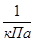
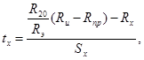
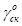
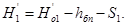
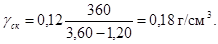
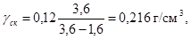
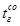

МИНИСТЕРСТВО ТРАНСПОРТНОГО СТРОИТЕЛЬСТВА СССР
ВСЕСОЮЗНЫЙ ОРДЕНА ОКТЯБРЬСКОЙ РЕВОЛЮЦИИ
НАУЧНО-ИССЛЕДОВАТЕЛЬСКИЙ ИНСТИТУТ
ТРАНСПОРТНОГО СТРОИТЕЛЬСТВА
ВЕДОМСТВЕННЫЕ СТРОИТЕЛЬНЫЕ НОРМЫ
ИЗЫСКАНИЯ, ПРОЕКТИРОВАНИЕ
И СТРОИТЕЛЬСТВО
ЖЕЛЕЗНЫХ ДОРОГ
В РАЙОНАХ ВЕЧНОЙ МЕРЗЛОТЫ
ВСН 61-89
Минтрансстрой СССР
МОСКВА 1990
Разработаны ЦНИИС Минтрансстроя (д-р техн. наук Н.А. Перетрухин - руководитель темы; канд. техн. наук Э.Е. Асс; канд. геол.-минералог. наук С.М. Большаков; кандидаты техн. наук Е.И. Герасимова, Н.М. Глотов, А.М. Горелик, В.В. Гулецкий, С.X. Дарчиев; канд. геол.-минералог. наук М.К. Дружинин; канд. техн. наук Ю.Д. Дубнов; Ю.Г. Ефимов; кандидаты техн. наук С.Г. Жорняк, П.М. Зелевич, А.М. Козлов; М.И. Куранчев; д-р техн. наук В.Е. Меркин; канд. техн. наук Н.Д. Меренков; Г.П. Минайлов; кандидаты техн. наук А.А. Орел, В.В. Пассек, П.Г. Пешков, Б.Е. Славин; В.С. Соловьев; кандидаты техн. наук В.Я. Ткаченко, Е.А. Тюленев, К.Л. Хабибулин; И.Ф. Хвостик; кандидаты техн. наук Б.И. Цвелодуб, А.А. Цернант, Н.А. Цуканов, А.Н. Черемисова, В.П. Чернавский; д-р техн. наук В.П. Шурыгин; Н.Д. Юша, при участии: Ленгипротранса (В.С. Ахрамович, Н.И. Басалаев, Л.Н. Белишкин, Е.А. Бойцов; канд. техн. наук С.И. Гапеев; Л.А. Гинзбург, Л.Ш. Грингольц, И.И. Казарновский, К.И. Каменская, Ю.П. Костин, А.П. Кудрявцев, Ф.Ф. Лежепеков, Э.М. Мазурский; Б.А. Медвежинский, Л.И. Плинк, Е.П. Пыляй, Г.В. Румянцев); Мосгипротранса (М.И. Александрова, Г.А. Альперт, А.С. Гурков, М.Г. Дыкман, М.И. Карлинский, А.М. Литвак, А.П. Луппов, Л.В. Семченко, В.Е. Смирнов); Дальгипротранса (В.С. Бульба, В.И. Егоров, А.И. Каневский, Г.Н. Попов; канд. техн. наук В.И. Солодовников, В.Д. Теплицкий, В.Н. Шергин, Я.Е. Цесарский); МИИТа (д-р техн. наук М.И. Иванов; М.М. Иванов; кандидаты техн. наук Ю.И. Ковалев, Б.И. Косырев, Ж.Е. Рогаткина, М.Е. Филимонов; д-р техн. наук И.И. Черкасов; ЦНИИ МПС (кандидаты техн. наук В.В. Гаврилюк, П.И. Дыдышко); ТИСИ Минвуза СССР (канд. техн. наук Т.В. Потатуева), ХабИИЖТа МПС (канд. техн. наук И.И. Бахарев, Ю.Г. Супрунов); ЦП и ЦУЭП МПС (В.Г. Давыдов, Г.И. Куркова, С.В. Моргаев, В.В. Соколов, И.И. Томилин, О.С. Шебякин, А.П. Яриз).
Рассмотрены и подготовлены к согласованию Комиссией МПС СССР в составе: А.А. Петропавловский - председатель; Группа изысканий и мерзлотных исследований - А.П. Кондратченко, И.В. Турбин, И.И. Кантор; Группа земляного полотна - С.М. Рак, В.В. Соколов, В.В. Виноградов, С.М. Бельфер, Г.Г. Коншин, Д.Ф. Колгатин; Группа мостов и тоннелей - О.С. Шебякин, И.А. Иродов, К.И. Томилин, А.Л. Брик, В.Г. Храпов, Е.А. Коновалов; Группа зданий и сооружений и инженерных коммуникаций - Ю.И. Андреенко, А.В. Леонычев, К.М. Черемисов, Е.Г. Петров, А.И. Береза; Группа электрификации и энергоснабжения железных дорог - Е.А. Баранов, В.И. Подольский, А.А. Кудрявцев, Н.И. Латунин; Группа сигнализации, централизации, блокировки и связи - В.Б. Печененко, В.А. Шисляков; от Министерства транспортного строительства СССР - Н.А. Перетрухин, П.М. Зелевич.
Внесены ЦНИИС Минтрансстроя СССР.
Подготовлены к утверждению ЦНИИС и техническим отделом Главного научно-технического управления Минтрансстроя СССР.
С введением в действие ВСН 61-89 «Изыскания, проектирование и строительство железных дорог в районах вечной мерзлоты» утрачивают силу ВСН 61-61 «Технические указания по изысканиям, проектированию и постройке железных дорог в районах вечной мерзлоты»
Согласованы:
Госстроем СССР № ДП-1299-1 09.03.1982 г.;
Министерством путей сообщения СССР № А-7221 13.04.1988 г.
|
Ведомственные строительные нормы |
ВСН 61-89 |
|
|
Изыскания, проектирование и строительство железных дорог в районах вечной мерзлоты |
Взамен |
Введение
ВСН 61-89 содержит технические решения и указания, отражающие особенности выполнения проектно-изыскательских и строительных работ при строительстве и временной эксплуатации железных дорог в районах вечной мерзлоты.
Они разработаны в развитие и дополнение действующих нормативных документов, регламентирующих такие работы вне районов вечной мерзлоты. При этом учтены отечественный и зарубежный опыт, в том числе опыт проектирования, строительства и эксплуатации БАМ, соответствующие решения Комитета по земляному полотну научно-технических советов МПС и Минтрансстроя, а также результаты научно-исследовательских работ ЦНИИС, СибЦНИИС, Дальгипротранса, Томгипротранса и других институтов и организаций и соответствующие разработки в области инженерного мерзлотоведения за период 1961 - 1988 гг.
Нормы и положения ВСН 61-89 направлены на рациональное решение инженерных задач с учетом особенностей местных природных условий и необходимости обеспечения нормальной работы железнодорожных сооружений в условиях эксплуатации при наилучшем сочетании строительных и эксплуатационных затрат.
|
Утверждены приказом Министерства транспортного
строительства СССР |
Срок введения в действие |
1.1. Настоящие Нормы распространяются на изыскания, проектирование, строительство и временную эксплуатацию железных дорог колеи 1520 мм в районах вечной мерзлоты.
1.2. Инженерно-технический персонал, выполняющий работы по изысканиям, проектированию и строительству железных дорог в районах вечной мерзлоты, должен быть знаком с основами инженерного мерзлотоведения, настоящих Норм, а также другими нормативными документами, регламентирующими отдельные виды работ.
1.3. Железнодорожные здания и сооружения следует проектировать на основе системного использования материалов мерзлотно-инженерно-геологических, гидрогеологических и гидрометеорологических изысканий и исследований, выполняемых в соответствии с требованиями действующих нормативных документов и настоящих Норм.
Возможность использования участков трассы и строительных площадок с наличием термокарста, наледей и других мерзлотных явлений следует устанавливать на основе результатов мерзлотно-грунтовых исследований и прогноза влияния мерзлотных явлений на эксплуатационную надежность железнодорожных зданий и сооружений.
1.4. Для инженерной оценки мерзлотно-грунтовых и других природных условий, а также для прогноза их изменения в процессе инженерного и хозяйственного освоения территории требуются данные, характеризующие в пределах строительных площадок и отдельных участков трассы:
климат;
распространение и залегание вечномерзлых грунтов;
вид, состав, сложение, строение и температурный режим грунтов;
мощность деятельного слоя;
физико-механические и теплофизические свойства грунтов в мерзлом и талом состояниях;
наличие, режим и свойства грунтовых вод;
мерзлотные процессы (морозное пучение, бугры пучения, наледи, подземный лед, термокарст, солифлюкция, трещино-образование).
1.5. При проектировании железных дорог необходимо учитывать, что основными причинами нарушения устойчивости, прочности и нормальной работы зданий и сооружений в районах вечной мерзлоты являются большие по величине и неравномерные по площади осадки вечномерзлых грунтов основания, возникающие вследствие повышения их температуры и оттаивания в процессе эксплуатации, а также воздействие наледного процесса и морозного пучения грунтов. Поэтому сооружения следует, по возможности, размещать на крупнообломочных, песчаных и глинистых грунтах без включения льда, при оттаивании которых могут возникать равномерные осадки, допустимые для данного сооружения, а также на скальных основаниях.
1.6. При размещении сооружений на вечномерзлых грунтах, оттаивание которых сопровождается появлением больших по величине и неравномерных по площади осадок, обеспечение устойчивости сооружений, а также уменьшение величины их осадок может быть достигнуто:
применением мероприятий, обеспечивающих сохранение грунтов основания в мерзлом состоянии в течение строительства и всего периода эксплуатации сооружений;
регулированием зоны оттаивания посредством применения теплоизоляции, охлаждающих устройств и соответствующего пространственного решения сооружения;
конструктивным приспособлением сооружения к неравномерным осадкам1 при оттаивании грунтов основания в период эксплуатации;
1 Этот метод не применим к мостам и водопропускным трубам.
подготовкой искусственного основания сооружений посредством предварительного оттаивания грунтов основания и последующего улучшения их строительных свойств, устройства подсыпок, замены слабых и пучинистых грунтов дренирующими и т.д.;
осуществлением мероприятий, рассчитанных на предотвращение деформаций сооружений от воздействия морозного пучения грунтов.
1.7. Выбор способов обеспечения устойчивости сооружений и уменьшения осадок следует осуществлять на основе результатов технико-экономического сравнения вариантов по строительно-эксплуатационным показателям.
При этом необходимо учитывать следующее:
мероприятия по сохранению грунтов основания в мерзлом состоянии назначаемые по надежным результатам теплотехнических расчетов, требуют тщательного выполнения проектных решений при строительстве и постоянного надзора за состоянием сооружений в период их эксплуатации. Нарушение даже одного из этих условий, как правило, приводит к деформациям сооружений и к затратам средств на их устранение, превышающим иногда первоначальную стоимость строительства;
подготовка искусственного основания и конструктивное приспособление сооружения к неравномерным осадкам должны предусматривать минимальные размеры эксплуатационных затрат, связанных с возникающими осадками оттаивающих грунтов основания.
1.8. Разработку мероприятий, направленных на обеспечение устойчивости зданий и сооружений, следует выполнять с учетом:
их вида, назначения и размеров;
теплового режима грунтов основания в естественных условиях;
теплового режима и других условий эксплуатации;
взаимного теплового влияния сооружений, расположенных на строительной площадке, а также сооружений, намеченных к возведению в перспективе;
возможных изменений мощности снежного покрова, мерзлотно-грунтовых, гидрогеологических и других естественных условий в связи с постройкой данного сооружения, а также сооружений, намечаемых к возведению в будущем;
состояния и строительных свойств грунтов основания (их льдонасыщенности, несущей способности, величины осадки и пучения, а также фильтрационных свойств при оттаивании и т.д.);
скорости и глубины оттаивания грунтов основания после постройки сооружения;
наличия грунтовых и поверхностных вод, возможности их отвода;
данных микросейсморайонирования;
сезона и продолжительности строительства;
результатов прогноза изменения теплового режима вечномерзлых грунтов основания, выполненного на основе теплотехнических расчетов;
величины и характера действующих на сооружение и грунты его основания нагрузок (статических, вибрационных и т.д.).
1.9. Способы обеспечения устойчивости сооружений должны быть намечены и обоснованы на стадии разработки предпроектной документации - технико-экономического обоснования (ТЭО) и уточнены при разработке проекта и рабочей документации.
1.10. Конструкции всех запроектированных сооружений, организация строительных работ, а также режим эксплуатации должны соответствовать принятому методу обеспечения устойчивости сооружения и гарантировать его нормальную работу в течение всего срока службы.
1.11. Строительство сооружений с применением различных методов обеспечения их устойчивости на одной строительной площадке может быть допущено в случаях, когда в процессе строительства и эксплуатации новых сооружений исключена возможность нарушения устойчивости действующих сооружений в результате их взаимного теплового влияния.
1.12. Здания и сооружения на вечномерзлых грунтах следует проектировать с учетом опыта проектирования, строительства и эксплуатации существующих зданий и сооружений вблизи проектируемой железной дороги и в аналогичных природных условиях а также результатов прогноза изменений естественных мерзлотно-грунтовых условий, состояния и свойств грунтов в результате хозяйственного освоения территории и выполнения строительных работ.
2.1. Изыскания новых железнодорожных линий следует выполнять в соответствии с требованиями главы СНиП 1.02.07-87. В районах вечной мерзлоты, ввиду сложных условий трассирования, требующих большого объема специальных обследований, изыскания следует выполнять, как правило, в три этапа: для разработки технико-экономического обоснования (ТЭО); для разработки проекта и детализирующие - для рабочей документации. При этом независимо от этапности проектирования инженерные изыскания необходимо выполнять для выбора направления трассы и по выбранному направлению.
На особо сложных в инженерно-геологическом и мерзлотно-грунтовом отношениях участках трассы, где неблагоприятные природные явления могут быть исследованы только в процессе длительных наблюдений, следует проводить дополнительные, а при необходимости - неоднократные изыскания и стационарные наблюдения. В пределах таких участков следует рассматривать при необходимости варианты проектирования и строительства долговременных обходов.
2.2. Основной задачей изысканий является сбор и анализ данных по конкурирующим вариантам линии об инженерно-геологических, мерзлотно-грунтовых, гидрогеологических, климатических и других особенностях природных условий района, необходимых для выбора оптимальных по технико-экономическим показателям положения трассы и проектных решений, обеспечивающих надежность и долговечность земляного полотна, водопропускных и других железнодорожных сооружений.
2.3. Учитывая многообразие вечномерзлых грунтов по их составу, состоянию и свойствам, а также большое различие местных условий на каждом участке трассы, трассирование линий необходимо выполнять в комплексе с инженерно-геологическими, гидрогеологическими, мерзлотно-грунтовыми обследованиями и изучением условий снегозаносимости.
2.4. Изыскания, в том числе трассирование, необходимо проводить, как правило, в летнее время, когда возможна более правильная и полная оценка топографических, мерзлотно-грунтовых и гидрогеологических условий. При этом следует принимать меры по минимальному нарушению растительно-мохового покрова.
В зимний период следует выполнять обследование наледных участков, снежных обвалов и лавин изучение процесса пучения и условий снегозаносимости, поиски источников водоснабжения, обследование переходов рек с бурением со льда, проходку разведочных выработок с промораживанием грунта и т.д.
2.5. После утверждения основного направления железнодорожной линии в районе ее расположения следует устанавливать места размещения мерзлотно-метеорологических станций (ММС).
Состав и объем работ ММС должны быть установлены специальной программой. Результаты систематических исследований и наблюдений ММС должны быть достаточными для получения данных, обосновывающих проектные решения и, при необходимости, выбор противодеформационных мероприятий. Работу ММС следует выполнять в период изысканий, продолжать в период строительства и, в обоснованных случаях, в течение эксплуатации дороги.
2.6. В программу исследований ММС необходимо включать:
сбор и анализ данных, необходимых для прогноза изменений климатических, мерзлотно-грунтовых, гидрогеологических и других природных условий;
выявление изменений природных условий, возникающих при строительстве железнодорожных сооружений;
оценку надежности, долговечности и деформативности земляного полотна, зданий и сооружений в результате изменения природных условий;
разработку, при необходимости, предложений по устранению деформаций земляного полотна, зданий и сооружений.
ММС следует размещать в местах, характерных по мерзлотно-грунтовым и климатическим условиям для всей линии или ее части.
Протяженность участка трассы, обслуживаемого одной ММС, следует устанавливать в зависимости от объема и сложности исследовательских работ, намечаемых программой с учетом численности исполнителей и научно-технической оснащенности ММС.
2.7. Направление и конкурирующие варианты трассы железнодорожной линии следует устанавливать на стадии разработки ТЭО, как правило, по имеющимся картам и материалам аэрофотосъемки, в том числе по крупномасштабным планам, освещающим мерзлотные, топографические условия, гидрографическую сеть и орографию местности. Особенности мерзлотных, инженерно-геологических, климатических и других природных условий рассматриваемых районов должны быть выявлены предварительно на основе литературных источников и материалов предыдущих изысканий.
2.8. Изыскания для разработки предпроектной документации следует выполнять по выбранному по картам генеральному направлению и основным конкурирующим вариантам, с прокладкой магистральных ходов в пределах эталонных участков, проведением на них мерзлотной, топографической и инженерно-геологической съемок. При этом должны быть выявлены условия залегания подземного льда и бугров пучения, развития термокарста и наледных явлений и т.п., а также режим водотоков.
В результате изысканий на стадии разработки ТЭО принимается и обосновывается основное направление железнодорожной линии и, при необходимости, местные подварианты.
2.9. В процессе изысканий для разработки проекта требуется установить по основному направлению трассы и местным подвариантам характер распространения и залегания вечно-мерзлых грунтов и таликов, оконтурить участки со сложными инженерно-геологическими и мерзлотно-грунтовыми условиями, в том числе с наличием подземного льда, развития термокарста, бугров пучения, наледей, а также участки с залеганием скальных пород, крупнообломочных и песчаных грунтов, согласно положениям настоящих Норм.
2.10. При выборе основного варианта и укладке трассы на местности в случаях примерного равенства технико-экономических показателей конкурирующих вариантов предпочтение следует отдавать долинным ходам и вариантам, включающим участки с наличием скальных, крупнообломочных и песчаных грунтов или расположенным на ближайшем расстоянии от месторождений таких грунтов.
При этом трассу целесообразно размещать преимущественно на второй и третьей надпойменной террасах и склонах южной экспозиции, в пределах которых, как правило, имеются более благоприятные мерзлотные, грунтовые и гидрогеологические условия и возможна укладка трассы с минимальными количествами и протяженностью выемок в льдонасыщенных глинистых грунтах.
2.11. Укладка трассы в непосредственной близости от подошвы косогоров, опасных в отношении снегозаносимости и наледеобразования, как правило, не допускается. Трассу необходимо относить от подошвы косогора на расстояние 50 - 60 м в зависимости от местных условий или предусматривать строительство снегозащитных, противолавинных и противоналедных сооружений и устройств с учетом местных природных условий.
2.12. Следует избегать укладки трассы и размещения отдельных сооружений на участках с подземными льдами, распространением наледей и бугров пучения, с бессточными заболоченными понижениями местности на косогорных участках с льдонасыщенными глинистыми и переувлажненными пылеватыми грунтами. Мощные бугры пучения следует, как правило, обходить с низовой стороны.
2.13. Укладка трассы и размещение отдельных сооружений на участках залегания подземных льдов допускается только в случаях, когда перенос трассы или сооружения окажется нецелесообразным по технико-экономическим показателям.
2.14. Площадки для раздельных пунктов следует размещать на сухих или легко поддающихся осушению участках с благоприятными мерзлотно-грунтовыми условиями.
При невозможности выполнить это требование для всей станционной территории лучшие условия в пределах площадки, согласно, пп. 2.74 - 2.77, должны быть обеспечены для наиболее ответственных зданий (локомотивных депо и мастерских, электростанций, водонапорных башен и др.), в соответствии с чем следует разрабатывать схему станции.
Станционный поселок, в целях размещения в более благоприятных условиях, может быть расположен в удалении от станции, но не далее 1,5 км от крайних станционных путей.
В случае невозможности выполнения этого требования, учитывая особую важность создания нормальных условий проживания населения в сложных природных условиях, допускается при соответствующем социально-экономическом обосновании изменять расположение осей раздельных пунктов, приближая их к площадкам станционных поселков.
2.15. На участках с залеганием подземных льдов и легкоразмываемых грунтов необходимо обеспечивать сохранение растительно-торфяного покрова в период выполнения изыскательских работ, запрещая неорганизованный проезд транспорта, массовую вырубку и пожог леса в пределах трассы и на прилегающей местности.
2.16. Закрепление трассы в плане и по высоте следует выполнять в соответствии с общими требованиями. Конструкция постоянных грунтовых реперов, а также выбор мест для их закладки приведены в рекомендуемом приложении 1. В качестве постоянных реперов целесообразно использовать также реперы и марки, устанавливаемые на скале, цоколях каменных зданий, устоях средних и больших мостов. В местах расположения ММС необходимо устанавливать не менее двух взаимно контролируемых постоянных реперов, заанкериваемых на достаточную глубину в вечномерзлый грунт.
2.17. Изыскания для разработки рабочей документации должны быть завершены укладкой основного варианта трассы на местности, с корректировкой ее положения по данным мерзлотного и инженерно-геологического обследования, с разбивкой и закреплением пикетажа и сдачей трассы строителям.
2.18. Мерзлотно-грунтовые исследования в районах вечной мерзлоты должны состоять из комплекса инженерно-геологических работ согласно нормам СНиП 1.02.07-87 по изучению специфических природных условий для строительства и эксплуатации железнодорожных сооружений, в том числе для получения данных, необходимых и достаточных для обоснования:
выбора наиболее благоприятных в мерзлотно-грунтовом отношении мест расположения трассы и отдельных железнодорожных сооружений;
выбора методов обеспечения устойчивости сооружений в пределах участков с неблагоприятными мерзлотно-грунтовыми условиями;
назначения конструктивных элементов зданий и сооружений, в том числе земляного полотна, и мероприятий по обеспечению их устойчивости и эксплуатационной надежности;
определения несущей способности грунтов основания, выбора типа и назначения глубины заложения фундаментов;
прогноза возможных изменений мерзлотно-грунтовых условий во время возведения железнодорожных сооружений и в период их эксплуатации (повышения или понижения температуры и поверхности залегания вечномерзлых грунтов, уменьшения несущей способности грунтов основания, изменения режима подземных вод и т.п.).
2.19. Мерзлотно-грунтовые исследования должны включать работы по сбору, определению и изучению:
данных, характеризующих природные условия района проектируемой железнодорожной линии (общемерзлотных, климатических, ландшафтных и др.);
характера залегания вечномерзлых грунтов по глубине (сливающееся, слоистое и др.) и распространение (сплошное, островное);
глубины залегания и мощности толщи вечномерзлых грунтов, изучение свойств грунтов деятельного слоя и режима надмерзлотных вод;
состава и свойств вечномерзлых грунтов (льдистости засоленности, температуры, изменение свойства при оттаивании и др.);
мерзлотных процессов и связанных с ними явлений (термокарстовых, пучинных, наледных, солифлюкционных и др.).
2.20. Мерзлотно-грунтовые исследования на всех этапах изысканий следует выполнять по специальным программам, включающим изучение литературных источников и фондовых материалов, полевые лабораторные и камеральные работы.
2.21. Особенности мерзлотно-грунтовых условий следует выявлять в процессе выполнения основных видов инженерно-геологических работ (инженерно-геологической съемки, проходки и документирования разведочных выработок, лабораторных испытаний грунтов и др.), а также специальных работ (обследования наледей, замеров температуры грунтов, полевых опытных работ и др.).
Данные мерзлотно-грунтовых исследований должны быть отражены на инженерно-геологических картах, на картах микрорайонирования трассы по просадочности вечномерзлых грунтов при оттаивании, на продольных и поперечных профилях и в пояснительных записках по соответствующим разделам проекта.
2.22. Содержание и объем мерзлотно-грунтовых исследований следует устанавливать в зависимости от этапа изысканий, вида и назначения сооружения, а также степени сложности мерзлотно-грунтовых условий района проектируемой линии.
2.23. Основной задачей изысканий на стадии ТЭО является освещение мерзлотно-грунтовых и других природных условий по конкурирующим вариантам трассы, в том числе о расположении и ориентировочных запасах притрассовых месторождений строительного камня, галечно-гравийных и песчаных грунтов.
2.24. Степень детальности, методика и объем исследований должны быть достаточными для общей оценки природных условий в пределах каждого из участков и технико-экономического сравнения вариантов.
Общую оценку участков для размещения трассы и строительства сооружений следует устанавливать в зависимости от сочетания неблагоприятных для них:
общемерзлотных факторов (наличия таликов и островов вечномерзлых грунтов, наличия вечномерзлых грунтов с температурой, близкой к 0 °С, резких колебаний глубины залегания вечномерзлых грунтов и т.п.);
инженерно-геологических, мерзлотных и гидрогеологических условий наличия льдонасыщенных просадочных при оттаивании вечномерзлых грунтов, торфянистых, плывунных и других слабых грунтов, неоднородности их состава и свойств, невыдержанности по мощности и простиранию, наличия подземных льдов, залегания уровня грунтовых вод и т.п.);
мерзлотных процессов и связанных с ними явлений (термокарста, пучин, наледей, солифлюкции и т.п.).
В связи с этим участки для размещения трассы и строительства сооружений следует подразделять так:
неблагоприятные - в случаях наличия и сочетании различных факторов, неблагоприятных для строительства и эксплуатации земляного полотна и других сооружений, негативное влияние которых не может быть устранено при помощи инженерных мероприятий;
малоблагоприятные - при наличии негативного влияния неблагоприятных факторов и их сочетаний, устранимого посредством инженерных мероприятий;
благоприятные - при отсутствии неблагоприятных факторов.
2.25. Изучение мерзлотно-грунтовых условий необходимо выполнять применительно к отдельным разделам проектирования - трассе, станционным площадкам и площадкам под жилые поселки, мостовым переходам и тоннельным участкам.
2.26. Грунтовые и мерзлотные особенности целесообразно изучать с применением метода инженерно-геологических аналогий на характерных эталонных участках (аналогах), намечаемых на основании геоморфологических, ландшафтных и мерзлотных признаков (равнинные, террасовые и другие участки с незаболоченной поверхностью, мари, склоны разной крутизны и экспозиции, конусы выносов, участки с проявлением мерзлотных процессов и т.п.).
2.27. Выделение эталонных участков по признакам, указанным в пп. 2.23 - 2.26, и изучение на них мерзлотно-грунтовых особенностей следует выполнять на основе имеющегося картографического материала и данных дешифрирования аэроснимков, а также в процессе инженерно-геологической съемки масштаба 1:25000 полосы местности шириной 250 - 300 м вдоль каждого варианта.
2.28. Инженерно-геологическую и мерзлотную съемку следует дополнять на отдельных участках трассы разведочными работами с применением геофизических и других методов исследования (рекомендуемое приложение 2) для уточнения мерзлотно-грунтовых и гидрогеологических условий, а также для выявления границ распространения просадочных при оттаивании грунтов, оконтуривания площадей с наличием подземного льда и мерзлотных явлений.
2.29. Основными видами работ являются инженерно-геологическая и мерзлотная съемки с разведочным бурением скважин в местах размещения насыпей, выемок, зданий, водопропускных и других сооружений, микрорайонирование трассы принятого варианта по категориям просадочности вечномерзлых грунтов при их оттаивании, поиски месторождений ископаемых строительных материалов и геофизическая разведка. При этом объемы разведочных, опытных и лабораторных работ должны быть достаточными для обоснования проектных решений. В случаях отсутствия утвержденного ТЭО, инженерные изыскания для выбора направления должны быть проведены в соответствии с указаниями пп. 2.22 - 2.27.
2.30. По степени сложности мерзлотно-грунтовых условий следует различать участки:
простые - с однообразным напластованием грунтов, однородностью их состава и свойств, выдержанным залеганием поверхности вечномерзлых грунтов, отсутствием грунтовых вод или выдержанным их залеганием и распространением, отсутствием проявлений мерзлотных процессов и т.п.;
сложные - с разнообразным напластованием грунтов, неоднородностью их состава и свойств, изменчивым залеганием поверхности вечномерзлых грунтов, присутствием невыдержанных по залеганию и распространению водоносных горизонтов и подземного льда (в прослойках, линзах, карманах), просадочных при оттаивании вечномерзлых грунтов, наличием пучинистых грунтов и мерзлотных процессов и т.п.).
2.31. Маршруты мерзлотной съемки и поисков следует намечать по отдешифрированным аэрофотоснимкам и фотосхемам масштаба 1:12000, картам масштаба 1:25000 и крупнее. Съемки необходимо выполнять в полосе шириной 300 м вдоль каждого конкурирующего, не освещенного на стадии ТЭО, или местного улучшающего варианта трассы, а если задачи картирования из-за сложности мерзлотно-грунтовых условий не могут быть при этом решены (участки крупных наледей, термоэрозионные подмывы берегов и др.), полосу съемки необходимо расширить. На участках с простыми мерзлотно-грунтовыми условиями масштаб съемки следует принимать 1:25000, со сложными - 1:10000 и 1:5000.
2.32. При наземной мерзлотной съемке необходимо выполнить описание, привязку к трассе и оконтуривание площадей или участков трассы с наличием:
подземного льда в виде пластов, линз или жил, гидролакколитов, наледей;
термокарстовых полостей вытаивания, просадочных западин, котловин, озер, таликов (несквозных и сквозных);
каменных россыпей, курумов;
каменных многоугольников, колец, венцов, пятен медальонов;
бугров сезонного и многолетнего пучения грунтов, торфяных бугров;
полигонально-валикового и мелкобугристого рельефа;
термоэрозионных и термоабразионных лайд, ниш, карнизов на берегах рек и озер, прямолинейных участков берегов;
валунных кос, каменных отмосток пляжей и бечевников;
солифлюкционных потоков, языков, шлейфов, сплывов, оплывин, гирлянд, сплывов террас и их цепей;
марей моховых, мохово-кочкарных, кочкарных, кочкарно-моховых, кочкарно-бугристых, бугристых могильниковых, осоковых, осоково-кочкарных, пятнистых, лесных.
2.33. Мерзлотную съемку следует проводить, как правило, в два этапа. В конце холодного сезона или ранней весной требуется обследовать гидролакколиты, наледи, бугры пучения, морозобойные трещины; установить текстуру грунтов деятельного (сезонно-оттаивающего-промерзающего) слоя и вечномерзлых грунтов. В конце теплого сезона следует изучать остальные мерзлотные и склоновые явления и образования, перечисленные в п. 2.31, а также перелетки, болота, несквозные талики.
Температуру грунтов необходимо измерять в течение каждого этапа.
2.34. Геофизические методы разведки (главным образом электро- и сейсморазведку) в сочетании с другими видами инженерно-геологических работ целесообразно применять для выявления и оконтуривания в плане и по глубине разреза:
островов, слоев и линз вечномерзлых грунтов и перелетков среди талых грунтов;
линз и жил подземного льда разного генезиса и грунтовых жил в массивах льда;
участков, линз, покровов мерзлых грунтов различной льдистости, зон обводнения талых грунтов;
участков, слоев, пластов разных по литологическому составу мерзлых грунтов;
наледных участков;
пустот, образовавшихся при вытаивании подземных льдов в массивных мерзлых рыхлых грунтах;
мощности толщи вечномерзлых пород;
горизонтов над-, меж- и подмерзлотных вод.
Геофизические методы разведки следует также применять при поисках месторождений строительных материалов и грунтов для возведения насыпей, участков размещения конкретных сооружений, территорий станций и поселков.
2.35. По трассам конкурирующих вариантов выработки следует размещать и проходить в соответствии с требованиями СНиП 1.02.07-87. При этом выработки необходимо назначать: под насыпями - глубиной 3 - 5 м; в выемках - ниже отметки бровки полотна на глубину двойной мощности деятельного слоя; в основании малых водопропускных сооружений - на глубину годовых колебаний температуры в нескальных грунтах (10 - 15 м) или на 1 - 2 м ниже поверхности залегания скальных пород. Кроме того, для исследования мерзлотных образований, перечисленных в п. 2.34, следует назначать 1 - 6 дополнительных выработок, которые необходимо использовать в качестве опорных для интерпретации данных геофизической разведки. В пределах сквозных таликов, в том числе на мостовых переходах, инженерно-геологические работы следует выполнять как вне районов вечной мерзлоты.
2.36. По оси мостовых переходов следует проходить скважины до глубины залегания прочных пород, обеспечивающих требуемую несущую способность фундаментов, но не менее 15 м, размещая их в наиболее глубокой части русла, на пляже, пойме, надпойменной террасе, склоне и других элементах рельефа долины.
2.37. В пределах территории проектируемых узлов, станций, жилых поселков и производственных предприятий транспорта геофизическую разведку следует выполнять на каждом из геоморфологических элементов и характерных в мерзлотном отношении участков, выделяемых при мерзлотном инженерно-геологическом районировании на основе результатов съемок, с закладкой на этих элементах и участках опорных скважин глубиной 10 - 15 м.
При наличии однородности мерзлотно-грунтовых условий в пределах одного крупного элемента рельефа (например, на мари, развитой на надпойменной террасе долины большой реки) геофизические точки и скважины можно располагать по правильной систематической сетке 200´200, 100´100 или 100´200 м (большие расстояния по простиранию долины), а на участках с неоднородными условиями, кроме того, - по контуру каждого сооружения. Количество и глубину скважин следует назначать согласно СНиП 1.02.07-87 и РСН 31-83.
2.38. Во всех опорных скважинах послойно и по горизонтам структуры мерзлых грунтов, но не реже чем на каждом метре разреза следует измерять температуру грунтов (рекомендуемое приложение 3) в разные сезоны года. Скважины необходимо оставлять подготовленными для проведения режимных температурных наблюдений.
2.39. Образцы грунта из скважин, шурфов, обнажений следует отбирать послойно и по горизонтам структуры мерзлой толщи для определения, главным образом, номенклатурных характеристик талых, оттаивающих и мерзлых грунтов и установления категории просадочности последних при свободном оттаивании согласно СНиП 1.02.07-87 и 2.02.04-88.
2.40. На продольные и поперечные профили земляного полотна, мостовых переходов, тоннелей и станционных площадок следует приводить сведения о видах грунтов и их состоянии (талые, мёрзлые, их температура, влажность, плотность, льдистость и т.п.).
Данные о состоянии и свойствах грунтов следует приводить также в ведомостях анализов грунтов.
В пояснительных записках общей и к разделам проекта требуется охарактеризовать мерзлотно-грунтовые условия, мерзлотные и склоновые процессы, явления и образования и их возможное влияние на различные сооружения.
2.41. В связи с отдаленностью районов вечной мерзлоты от действующих предприятий строительной индустрии, особое внимание должно быть уделено поиску и разведке притрассовых месторождений строительного камня и галечника, пригодных для получения морозостойкого щебня для гидротехнического и строительного бетонов, для путевого балласта и укрепительных работ, а также поиску и разведке гравийно-песчаных отложений, необходимых для получения строительного песка, гравия и гравийно-песчаного путевого балласта с учетом требований Технических указаний по изысканию, проектированию и разработке притрассовых карьеров для железнодорожного и автодорожного строительства (ВСН 182-74).
2.42. Поиски месторождений строительных грунтов и материалов, в том числе песчано-гравийных и галечниковых грунтов, пригодных после их обогащения для приготовления гидротехнического бетона и для получения путевого балласта и морозостойкого щебня, целесообразно проводить преимущественно в таликовых зонах долин, на склонах южной экспозиции, террасах и плато, а поиски месторождений камня - по горным склонам, косогорам и берегам рек.
2.43. Для принятия обоснованных решений о возможности и целесообразности применения гидромеханизации земляных работ необходимо учитывать и использовать следующие данные инженерно-геологических изысканий:
характеристику мерзлотно-грунтовых условий в пределах расчетной дальности транспортирования грунта по трубопроводам;
климатическую характеристику района, оценку возможных путей доставки оборудования и наличие источников энергоснабжения;
инженерно-геологические разрезы и механический состав отложений в пределах карьера на глубину до коренных пород, полученные по сетке выработок с шагом около 50 м в пределах прирусловых таликов и по сетке с шагом 25´25 м в мерзлых породах, разработка которых возможна только после их предварительного оттаивания;
контуры таликов с указанием их типов, вида и глубины, уровня и дебита грунтовых вод;
гидрологический и термический режимы возможных источников водоснабжения, включая подекадный ход температуры воды в переходные (зимне-весенние и осенне-зимние) периоды года и сроки ледовых явлений;
оценку возможности и целесообразности в процессе намыва земляного полотна попутного получения строительного песка, пригодного для гидротехнического бетона, а также камня, гравия и галечника, пригодных для дробления на строительный и путевой щебень.
2.44. На участках тоннельных пересечений следует отдавать предпочтение вариантам, обеспечивающим благоприятные условия строительства и эксплуатации тоннелей (в минимальной степени осложненным наличием тектонических нарушений, вечномерзлых сильно дислоцированных пород или дисперсных грунтов). Следует избегать заложения тоннелей в зонах тектонических нарушений, а их припортальных участков - в неустойчивых склонах логов, под ручьями, речками и другими постоянными или периодически действующими водотоками. При невозможности выполнения таких требований предпочтение следует отдавать вариантам обхода.
2.45. Инженерно-геологическую разведку и мерзлотную съемку на тоннельных участках следует выполнять в объемах, достаточных для установления геологического строения горного массива, гидрогеологических и мерзлотных естественных условий, в том числе для выявления наличия и распределения разломов, зон трещиноватости, степени выветрелости и мощности коры выветривания; для определения возможности использования скальных пород при разработке тоннеля для получения морозостойкого щебня, пригодного для бетона для тоннельных конструкций; наличия, дебита, агрессивности и режима подземной воды, а также прогноза их изменений в результате строительства тоннеля и в период его эксплуатации.
2.46. При выборе направления трассы и назначении конкурирующих вариантов тоннельных пересечений следует широко применять аэрокосмические, аэрологические и геофизические методы разведки в сочетании с мелкомасштабной мерзлотной и инженерно-геологической съемками и обязательной проходкой разведочных выработок.
2.47. Ширину исследуемой полосы при съемке тоннельных участков, а также размещение разведочных скважин в плане следует назначать в соответствии с Инструкцией на производство инженерно-геологических изысканий для проектирования и строительства метрополитенов и горных железнодорожных тоннелей (ВСН 190-78). При этом разведочные скважины вдоль трассы следует назначать глубиной 10 - 15 м ниже отметки основания тоннеля с расстояниями между ними:
от 25 до 200 м при однородном мерзлотно-геологическом строении и однообразных ландшафтных особенностях;
от 10 до 100 м при сложном строении горного массива и сложных мерзлотных условиях, а также при оконтуривании линз и пластов льда;
от 20 до 30 м при разведке под наклонные выработки и шахты.
Увеличение указанных расстояний между разведочными скважинами допускается только на участках трассы с большой глубиной заложения тоннеля. На таких участках следует предусматривать широкое применение различных геофизических методов разведки (не менее двух) с целью взаимного контроля получаемых результатов.
2.48. Опорные скважины следует назначать глубиной 10 - 15 м ниже подошвы проектируемого тоннеля и размещать по оси трассы, у порталов, в местах пересечения оврагов, тектонических разломов, зон выветривания и обводнения пород.
Подземный лед, а также выходы на дневную поверхность пород, залегающих на проектных отметках подошвы проектируемого тоннеля, необходимо оконтуривать в плане и разрезе, применяя для этого геофизическую разведку, мерзлотную и инженерно-геологическую съемки масштаба 1:5000.
2.49. В пределах горных массивов со сложными инженерно-геологическими, гидрогеологическими и мерзлотно-грунтовыми условиями, где данные работ, выполняемых согласно пп. 2.47, 2.48, окажутся недостаточными для обоснования проектных решений, необходимо выполнить дополнительные исследования с организацией стационарных наблюдений, лабораторно-экспериментальных и опытных работ по специальным программам (см. пп. 2.5, 2.6).
2.50. Гидрологические изыскания следует выполнять с учетом мерзлотно-грунтовых и климатических особенностей исследуемых районов (режима водотоков, мощности и времени образования ледяного покрова и донного льда, наличия и характера залегания вечномерзлых грунтов, условий стока и т.д.) в соответствии с положениями соответствующих инструктивных и методических документов.
2.51. При выполнении гидрологических изысканий необходимо выявить и изучить наличие особенностей режима рек и учитывать их при проектировании мостовых переходов, в том числе:
прохождение паводков и ледохода поверх ледяного покрова (иногда двухлетнего), обычно наблюдающегося на перекатах при промерзании рек до дна и в местах образования мощных наледей;
несовпадение максимумов расходов и уровней на таких участках рек;
бытовой русловой процесс в районе перехода и его особенности (спрямление русла, размывы берегов, плановые изменения русла) на участках, где наблюдается проход паводков поверх ледяного покрова;
режим весеннего ледохода, наличие заторов и заторных уровней, вызываемых как местными условиями, так и вследствие неодновременного вскрытия рек, текущих с юга на север;
режим осеннего ледохода;
деформации русла в результате прохода паводков при ледяном покрове и наледях (спрямление русла, глубинные и боковые размывы русла и т.п.), а также увеличение этих деформаций при сохранении двухлетнего ледяного покрова;
снегоселевые паводки, наблюдающиеся в горных районах и образующиеся в результате оползания со склонов бассейна отложений снега и продуктов разрушения горных пород;
проход паводков в бассейнах малых сооружений при наличии снежного покрова в логах, ведущих к сооружению, и в границах подпора водотока перед малыми сооружениями.
2.52. При выборе мест переходов следует избегать:
участков, где систематически возникают мощные наледи (перекаты с малыми глубинами, устьевые участки рек и притоков, участки с наличием островов и староречий);
излучин, где возможны спрямления русл в период паводков с наличием ледяного покрова;
участков с наличием подземного льда.
2.53. Разведочные инженерно-геологические работы следует проводить в два этапа:
на первом этапе необходимо закладывать скважины глубиной до 15 м, размещаемые по оси перехода в русле, на пойме, надпойменных террасах и в коренных отложениях берегов; по результатам бурения составляют продольный профиль мостового перехода;
на втором этапе следует закладывать по 1 - 2 скважины под каждой опорой и устоями мостов, а также дополнительные скважины для разведки мерзлотно-грунтовых условий (см. п. 2.36).
Все скважины следует использовать в качестве опорных для интерпретации данных геофизических исследований.
2.54. Для железнодорожного водоснабжения следует использовать преимущественно подземные (подмерзлотные, межмерзлотные и таликовые) воды. В обоснованных случаях в качестве источников водоснабжения допускается использовать аллювиальные воды, а также непромерзающие реки, озера и искусственные водохранилища.
При выборе источников и оценке качества воды следует руководствоваться СНиП 2.04.02-84, ГОСТ 2761-84, ГОСТ 2874-82.
2.55. Изыскания источников водоснабжения следует выполнять в два этапа - поиск и разведка.
На первом этапе, совпадающем, как правило, с изысканиями для разработки ТЭО, должны быть определены возможные источники водоснабжения, с ориентировочной оценкой запасов перспективных источников воды, направление и объем буровых и опытных работ на основе изучения литературных и фондовых материалов, а при их отсутствии или особой сложности гидрогеологических условий района - по данным предварительного гидрогеологического обследования трассы проектируемой линии.
На втором этапе, совпадающем с изысканиями для разработки проекта, следует выполнять разведку в соответствии с программой работ, составляемой по данным поиска, осуществленного на первом этапе. В программе должны быть отражены природные условия районов, пересекаемых трассой, приведены гидрологические, гидрогеологические и гидрогеохимические характеристики; дан прогноз и характеристика возможных источников водоснабжения; намечен объем, направление и методика поисково-разведочных работ.
2.56. Объем поисково-разведочных работ должен быть достаточным, чтобы дать общую характеристику геологических, геокриологических, гидрогеохимических и гидрогеологических условий, а также сравнительную оценку возможных вариантов водоснабжения;
выделить наиболее водообильный горизонт и участок для сооружения водозабора;
в пределах выделенного участка детально охарактеризовать условия залегания, состав и водопроницаемость водоносных пород, качество воды, условия питания водоносного горизонта, связь его с другими горизонтами и поверхностными водами, режим подземных вод (уровень в критический период года и т.д.);
оценить эксплуатационные запасы подземных вод на разведанном участке;
обосновать санитарное состояние источников и наметить зоны санитарной охраны;
дать предложения по размещению, конструкции водозабора и режиму его работы.
2.57. Объем поисково-разведочных работ на воду следует устанавливать в зависимости от особенностей местных природных условий и их изученности, а также от требований к количеству и качеству воды. При этом необходимо учитывать, что в районах вечной мерзлоты реки, за исключением больших, как правило, промерзают; оценка условий питания, разгрузки и движения подземных вод обычно затруднена сложностью и многообразием структуры горных пород, а также различием в прерывистости и водопроницаемости массивов вечномерзлых грунтов; стабильность в режиме и ресурсах подземных вод обычно отсутствует.
2.58. Работы по изысканию источников водоснабжения целесообразно выполнять в такой последовательности:
на первом этапе - сбор, систематизация и анализ информации о природных условиях района, аэрофотосъемка, рекогносцировочное гидрогеологическое обследование, наземная геофизическая разведка, поисковое бурение с опробованием всех водоносных горизонтов;
на втором этапе - разведочное бурение, опытные работы, камеральная обработка материалов.
Допускается исключение отдельных видов работ при соответствующем обосновании, в зависимости от сложности и изученности природных условий района, а также от потребностей в воде.
Аэрофотосъемка, гидрогеологическое обследование и наземная геофизическая разведка, выполняемые в порядке поиска источников водоснабжения при изысканиях для разработки ТЭО или в обоснованных случаях при изысканиях для разработки проекта должны освещать территорию радиусом 5 - 25 км от объекта водоснабжения.
2.59. Для оценки природных условий изучаемого района следует использовать фондовые материалы и литературные источники. При анализе полученной информации следует широко использовать метод аналогий, основанный на сопоставлении информации по исследуемому участку с соответствующими данными по ключевым, хорошо разведанным участкам, имеющим аналогичные условия.
2.60. Полевые работы по изысканию источников водоснабжения целесообразно выполнять в теплое время года.
В зимний период следует выполнять режимные наблюдения за источниками водоснабжения и опытные работы в критический водный период, разведочное бурение со льда водоемов и водотоков и т.п.
Дебит ключей в зимнее время может быть предварительно определен по - объему наледей, образующихся в месте выхода подземных вод на поверхность земли, и продолжительности периодов наледеобразования.
2.61. Аэрофотосъемку целесообразно применять при поисках воды на большой площади в мало исследованных районах. При этом увязываются геоморфологические элементы, оконтуриваются наледи, бугры пучения, мари, площади с различными геоботаническими условиями, уточняются зоны разломов. Особое внимание следует уделять наблюдениям за ключами и наледями. Поиск и оконтуривание больших наледей следует проводить многократно с интервалом времени между съемками 1 - 1,5 месяца.
2.62. Гидрологическое и гидрогеологическое обследование района требуется выполнять для выявления и оценки возможных источников водоснабжения. Масштаб гидрогеологической съемки следует принимать в пределах от 1:500000 до 1:100000 в зависимости от геологической сложности и изученности района.
При этом необходимо учитывать следующее:
естественный выход на поверхность земли подмерзлотных, межмерзлотных и надмерзлотных вод может быть обнаружен по наличию наледей, наледных бугров, незамерзающих участков водотоков, а также лиственного леса (осина, ива и т.п.);
наличие наледей целесообразно выявлять с помощью аэрофотосъемки весной после схода снега, а изучение их режима требуется вести круглогодично в течение нескольких лет;
объем наледей, образующихся в местах выхода подмерзлотных вод на поверхность земли, возрастает в течение всей зимы; при таянии этих наледей на поверхности льда могут появляться отложения солей в виде порошка, мучнистого налета или твердой корки; подмерзлотные воды, по сравнению с надмерзлотными, отличаются постоянством температуры, дебита и состава;
увеличение объема наледей, образующихся за счет выхода надмерзлотных вод на поверхность земли, прекращается с промерзанием деятельного слоя.
2.63. За режимом выбранных источников водоснабжения должны быть организованы наблюдения согласно рекомендуемому приложению 4. Наблюдения следует продолжать в период изысканий для разработки проекта и рабочего проектирования.
2.64. В период изысканий для разработки проекта при исследованиях источников водоснабжения следует выполнять разведочное бурение, опытные откачки, определять температуру, качество и дебит источника в критический водный период.
При этом должны быть получены данные, характеризующие:
расходы, уровни и температурный режим воды, сопоставленные с метеорологическими данными;
химический состав и санитарно-бактериологическое состояние воды в соответствии с требованиями ГОСТ 2761-84, ГОСТ 2874-82;
мерзлотно-грунтовый режим в местах, намечаемых для размещения водозаборных сооружений.
2.65. При исследовании ключей, питающихся подземными водами, необходимо:
оконтурить водоносные талики;
уточнить места выхода подземных вод на поверхность земли в различные времена года;
определить по самоизливу дебит источников для критического водного периода;
подготовить предложения по выбору типа каптажных устройств.
2.66. В результате исследований водотоков должны быть составлены мерзлотно-геологические разрезы и получены данные, позволяющие установить возможность и целесообразность каптажа подрусловых потоков (дебит, температура воды и прочие характеристики аллювиальных вод).
2.67. При исследованиях ложа искусственного водохранилища необходимо устанавливать границы залегания вечномерзлых грунтов и выявлять их свойства после оттаивания. При этом следует учитывать, что в период эксплуатации водохранилищ может произойти глубокое протаивание толщи вечномерзлых грунтов под их дном, а также под водосливами и плотинами.
2.68. Основную часть геофизических работ (магниторазведку, электропрофилирование, электрозондирование и т.д.) следует выполнять до начала буровых работ. Часть наземной разведки и каротаж следует проводить одновременно с бурением, для уточнения отдельных вопросов, возникающих при разведке, в том числе для увязки с данными бурения.
2.69. Участки для разведочного бурения целесообразно назначать на речных террасах, в зонах тектонических разломов и на контактах разнородных пород, особенно на контактах осадочных и изверженных пород, в местах наименьшей мощности вечномерзлых пород, а также в пределах межгорных впадин, являющихся обычно показателем наличия бассейнов подземных вод.
2.70. Размещение и глубину разведочных скважин следует назначать с учетом данных детального обследования участка и геофизической разведки, характеризующих местные природные условия.
Конечный диаметр скважин не должен быть меньше 89 мм в скальных, 127 мм - в рыхлых, 210 мм - в валунно-галечных породах. Способ бурения скважин необходимо подбирать в зависимости от прочности пород и глубины скважины. При этом следует учитывать, что технико-экономическое сравнение вариантов водоснабжения в значительной степени основывается на расходах, величина которых зависит от метода бурения скважин. Поэтому надо следить за тем, чтобы дебит скважины отражал истинную водообильность водоносного горизонта, обеспечивая оживление (разглинизацию) скважин перед откачкой.
2.71. В результате бурения должны быть установлены детальная характеристика водоносных горизонтов и глубины их залегания; мощность, состав и фильтрационные свойства водоносных пород, а также их изменения в горизонтальном и вертикальном направлениях, границы вечномерзлых пород, направления и величины уклона поверхности подземных вод, связь водоносных горизонтов между собой и с поверхностными водами, степень минерализации воды и ее изменение в горизонтальном и вертикальном направлениях.
2.72. Кратковременные опытные откачки необходимо проводить поинтервально в процессе бурения скважины. По окончании бурения следует выполнить откачку из всех скважин, достигая по возможности стабилизации уровня и расхода, и оценить водопроницаемость водоносных пород. При ограниченных запасах воды необходимо провести дополнительную опытно-эксплуатационную откачку длительностью 1 - 1,5 мес., с целью выявления максимально возможного расхода источника в зимне-весенний критический период (февраль - март).
Места бурения опытных скважин следует назначать на основе данных разведки в пределах наиболее обводненного участка, где намечается заложить эксплуатационную скважину.
2.73. Изучение режима подмерзлотных и межмерзлотных вод следует начинать при производстве буровых работ, а ключей - в процессе их рекогносцировочного обследования. Длительность проведения наблюдений должна быть установлена в зависимости от местных природных условий (см. обязательное приложение 4).
2.74. Строительные площадки для размещения поселков и отдельных зданий следует выбирать с учетом данных микрорайонирования по категориям просадочности грунтов (табл. 1), мерзлотно-грунтовых, гидрогеологических, микроклиматических, рельефных и других природных условий (см. п. 2.14), а также рациональных способов обеспечения устойчивости зданий и сооружений (см. пп. 1.5 - 1.7).
2.75. Железнодорожные поселки следует располагать преимущественно вблизи станций, а при отсутствии площадок с простыми мерзлотно-грунтовыми условиями (см. п. 2.30) - в пределах пешеходной доступности, определяемой в зависимости от климатических условий, но не более 1,5 км.
2.76. В районах несплошного распространения вечномерзлых грунтов здания по возможности следует размещать на площадках с талыми грунтами, свойства которых удовлетворяют требованиям проектирования и строительства.
При расположении поселков и служебно-технических зданий на участках с вечномерзлыми грунтами следует отдавать предпочтение площадке с наличием прочных и недостаточно прочных оснований (см. табл. 1), в том числе с близким залеганием скальных и полускальных пород или наличием сухих и слабовлажных крупнообломочных и песчаных грунтов;
с наличием непучинистых грунтов в пределах деятельного слоя, особенно для зданий с мелким заложением фундаментов;
на возвышенных, местах, в пределах которых может быть обеспечен надежный отвод поверхностных вод и при необходимости осушение грунтов деятельного слоя; на склонах южной экспозиции, сложенных, как правило, менее влажными грунтами.
2.77. При неизбежности размещения сооружения на площадках с наличием слабых и просадочных оснований (см. табл. 1), а также пучинистых грунтов следует предусматривать специальные меры, направленные на обеспечение устойчивости и долговечности зданий и сооружений согласно указаниям пп. 1.5 - 1.12 настоящих Норм.
2.78. Изыскания для разработки проектов притрассовой, основных подъездных и построечных автомобильных дорог, сооружение которых предусмотрено указаниями СНиП III-38-75, следует выполнять в общем комплексе изыскательских работ по трассе железнодорожной линии.
2.79. Притрассовую автомобильную дорогу следует размещать с учетом мерзлотно-грунтовых, гидрогеологических и других местных условий, а также требований нормального производства работ по сооружению земляного полотна и водопропускных сооружений.
2.80. В пределах марей, склонов, сложенных льдонасыщенными грунтами, участков с наличием термокарстового процесса, а также в других неблагоприятных условиях железнодорожное и автодорожное земляное полотно необходимо размещать относительно друг друга на расстоянии, превышающем на 5 - 10 м зону их взаимного влияния. При этом необходимо обращать особое внимание на обеспечение нормального стока поверхностной воды, не допуская образования водоемов с нагорной стороны дорожного и железнодорожного земляного полотна, а также замкнутых площадей между автомобильной и железной дорогой.
2.81. Категорию притрассовой и построечной автомобильных дорог следует устанавливать на основе технико-экономических расчетов размера ожидаемых перевозок, характер и интенсивности движения. Ширину земляного полотна и проезжей части, тип покрытия и другие параметры проектируемых автомобильных дорог следует назначать в соответствии с требованиями СНиП 2.05.02-85 для дорог общей сети V и IV категорий.
2.82. Инженерно-геологические работы, мерзлотную и топографическую съемки участков размещения притрассовой автомобильной дороги за пределами полосы, обследуемой для трассы железной дороги, следует выполнять одновременно с работами по обследованию трассы железной дороги.
3.1. Проектирование железнодорожных линий и сооружений в районах вечной мерзлоты должно быть направлено на обеспечение бесперебойной работы железной дороги в условиях постоянной эксплуатации при лучшем сочетании строительных и эксплуатационных показателей, а также на обеспечение устойчивости возведенных зданий и сооружений.
При прочих равных условиях предпочтение следует отдавать вариантам с минимальными эксплуатационными расходами на содержание линии или сооружения.
3.2. В проектах отдельных зданий, сооружений и устройств должны быть приведены правила содержания этих объектов в эксплуатации и порядок регулярных осмотров и наблюдений за ними, если эти правила и порядок имеют особенности по сравнению с обычными.
3.3. Продольный профиль в части длины и сопряжения элементов разной крутизны, предельных значений уклонов, возвышений бровки полотна у искусственных сооружений и т.д. следует проектировать согласно СНиП II-39-76.
3.4. В пределах участков трассы с простыми мерзлотно-грунтовыми условиями (см. п. 2.30) высоту насыпей и глубину выемок следует устанавливать по технико-экономическим соображениям;
в пределах участков со сложными мерзлотно-грунтовыми условиями земляное полотно следует проектировать преимущественно насыпями, назначая их минимальную высоту согласно указаниям пп. 3.23, 3.24, глубину выемок на таких участках назначать минимальной, а конструкцию разрабатывать в зависимости от мерзлотно-грунтовых и гидрогеологических условий согласно указаниям пп. 3.37 - 3.38, 3.44 - 3.46.
В обоснованных случаях во избежание устройства глубоких выемок в неустойчивых грунтах (п. 3.12) разрешается изменять план и профиль пути, а также увеличивать протяженность участка.
3.5. В пределах участков насыпей, возводимых с запасом по высоте (пп. 3.15, 3.31, 3.32), необходимо проектировать временный продольный профиль, с учетом сохранения постоянных отметок бровки полотна на подходах к мостам и выемкам, а также применения предельно допускаемых продольных уклонов рельсовой колеи в строительный период, в том числе в период временной эксплуатации дороги.
3.6. Земляное полотно следует проектировать согласно СНиП II-39-76, а также дополнительным положениям настоящих Норм, учитывающих состояние и свойства грунтов деятельного (ежегодно оттаивающего-промерзающего) слоя и вечномерзлых грунтов, их изменения в результате производства строительных работ и в процессе взаимодействия с земляным полотном в условиях эксплуатации.
3.7. Земляное полотно необходимо проектировать в комплексе с продольным профилем и планом линии, водопропускными, водоотводными, противоналедными и в необходимых случаях с противодеформационными сооружениями и устройствами, и обязательной увязкой с организацией и способами производства работ. При этом должны быть выполнены требования по обеспечению прочности и устойчивости земляного полотна в условиях эксплуатации при лучшем сочетании строительных и эксплуатационных затрат.
3.8. В проектах и рабочей документации по земляному полотну, водопропускным, водоотводным и противодеформационным сооружениям и устройствам должны быть приведены дополнительные требования к производству работ, а также определены необходимые материально-технические средства и соответствующий эксплуатационный контингент для поддержания требуемого по проекту теплового режима вечномерзлых грунтов основания и обеспечения эксплуатационной надежности сооружений и устройств.
3.9. Строительные свойства грунтов деятельного слоя, а также оттаивающих вечномерзлых грунтов следует устанавливать с учетом ГОСТ 25100-82.
3.10. Вечномерзлые грунты по их прочности на сжатие следует подразделять на твердомерзлые и пластичномерзлые, согласно ГОСТ 25100-82.
3.11. Вечномерзлые грунты по их температуре следует подразделять на низкотемпературные и высокотемпературные.
К низкотемпературным следует относить твердомерзлые глинистые грунты, а также крупнообломочные и песчаные грунты, имеющие температуру минус 2 °С и ниже на глубине 10 - 15 м от поверхности земли.
К высокотемпературным следует относить глинистые пластичномерзлые, крупнообломочные и песчаные грунты имеющие температуру выше минус 2 °С, а при островном залегании - независимо от величины отрицательной температуры.
3.12. Вечномерзлые грунты по степени их деформативности (устойчивости) при оттаивании в откосах выемок следует разделять на устойчивые и неустойчивые.
К устойчивым следует относить скальные и песчаные грунты, а также крупнообломочные с содержанием до 50 % глинистого заполнителя, имеющего показатель консистенции до 0,75, в составе которого имеются частицы размером меньше 0,01 мм в количестве до 20 или 30 % в случаях залегания уровня грунтовых вод соответственно выше или ниже отметки подошвы откоса проектируемой выемки.
К неустойчивым необходимо относить глинистые грунты, приобретающие при оттаивании консистенцию от мягкопластичной до текучей, дресвяные и щебенистые грунты с глинистым заполнителем текучепластичной и текучей консистенции после оттаивания в количестве более 30 %, а также все нескальные грунты, независимо от их вида, при наличии в них подземного льда.
3.13. Естественные основания земляного полотна по условиям увлажнения грунтов деятельного слоя следует разделять на сухие, сырые и мокрые в соответствии с нормативными показателями их увлажнения.
3.14. Естественные основания земляного полотна по степени их деформативности следует подразделять на прочные, недостаточно прочные, слабые и просадочные в зависимости от величины относительной осадки вечномерзлых грунтов при их оттаивании (табл. 1).
|
Величина относительной осадки, δ |
Основные виды и состояние грунтов основания |
|
|
I. Прочное |
δ £ 0,03 |
Скальные породы, крупнообломочные и песчаные грунты без включений льда; глинистые талые грунты твердой и полутвердой консистенции |
|
II. Недостаточно прочное |
0,03 £ δ £ 0,1 |
Глинистые грунты тугопластичной, мягкопластичной и текучепластичной консистенции, а также песчаные и крупнообломочные грунты с глинистым заполнителем при наличии в них прослоев или линз льда суммарной толщиной до 0,1 м в каждом слое мощностью 1 м исследуемой вечномерзлой толщи основания |
|
III. Слабое |
0,1 £ δ £ 0,4 |
Глинистые и торфяные грунты текучепластичной и текучей консистенции, а также песчаные и крупнообломочные грунты при наличии в них линз или отдельных прослоев льда суммарной толщиной до 0,4 м в каждом слое мощностью 1 м исследуемой вечномерзлой толщи основания |
|
IV. Просадочное |
δ > 0,4 |
Глинистые грунты текучей консистенции и торфяные отложения, а также грунты всех видов с наличием подземного льда суммарной мощностью более 0,4 м в каждом слое толщиной 1 м исследуемой вечномерзлой толщи основания |
Примечания: 1. Толщина прослоев и линз льда или мощность слоев подземного льда учитывается в пределах глубины оттаивания вечномерзлого грунта, принимаемой по результатам теплотехнических расчетов, но не более 3 м от поверхности вечномерзлого грунта в естественных условиях - для насыпей, отметки дна кюветов - в выемках или подошвы фундаментов других сооружений.
2. Значения δ следует устанавливать согласно указаниям СНиП 2.02.04-88, по данным инженерно-геологических изысканий и результатам испытаний грунтов по ГОСТ 23908-79, ГОСТ 26518-85.
3.15. Прочность и устойчивость земляного полотна могут быть обеспечены посредством:
преимущественного размещения трассы на участках залегания грунтов, слагающих прочное основание и устойчивых при оттаивании в откосах выемок;
преимущественного использования для возведения насыпей грунтов, имеющих лучшие строительные свойства и в меньшей мере подверженных изменению состояния под воздействием природных факторов;
конструктивных и организационно-технологических мер, направленных на ограничение величины, интенсивности и неравномерности осадок и морозного пучения грунтов земляного полотна и его основания, а также на содержание пути в нормальном состоянии в строительный период и в условиях эксплуатации на участках со слабым и просадочным основанием, в том числе:
создания запасов по ширине и высоте насыпей в соответствии с расчетной величиной деформации грунтов основания;
подготовки искусственного основания и применения других противодеформационных конструкций, в том числе с применением теплоизоляции, например из пенопласта, и геотекстиля в выемках и на подходах к ним, если грунты в естественном сложении являются пучинистыми и представляют собой слабое или просадочное основание земляного полотна (см. табл. 1);
минимального нарушения естественного растительно-мохового покрова, а также режима поверхностной и грунтовой воды в пределах участков земляного полотна со слабым и просадочным основанием;
производства земляных работ по возведению насыпей в зимнее время и с применением отсыпки нижних слоев грунта «с головы» и т.п.
3.16. Необходимость применения одного или комплекса противодеформационных мероприятий и выбор способов обеспечения прочности и устойчивости земляного полотна должны быть обоснованы данными сравнения возможных вариантов с учетом опыта проектирования, строительства и эксплуатации дорог в аналогичных мерзлотно-грунтовых условиях.
3.17. Для насыпей следует применять преимущественна местные грунты, удовлетворяющие нормативным требованиям с учетом их состояния и свойств, а также естественного и прогнозируемого режимов грунтов основания, поверхностной и грунтовой воды.
Решающими факторами при выборе грунтов следует считать время производства работ, дальность возки, естественный режим поверхностной и грунтовой воды в пределах рассматриваемого участка трассы.
3.18. Скальные, крупнообломочные и песчаные грунты (за исключением пылеватых песков), супеси легкие крупные, а также крупнообломочные грунты с песчаным и глинистым заполнителем при содержании частиц размером 0,1 мм в количестве менее 20 % разрешается применять независимо от состояния и свойств грунтов основания.
3.19. Для насыпей на марях, в пределах участков с наличием подземного льда, залегающего в естественных условиях на глубине менее двух глубин деятельного слоя, и участков активного развития термокарста, на пересечениях полос стока, болот и других разновидностей мокрого основания, предпочтение следует отдавать скальным, крупнообломочным и песчаным грунтам (за исключением пылеватых).
3.20. Пылеватые пески и глинистые грунты следует использовать с учетом ограничений, изложенных в действующих нормативных документах, а также применяемой технологии производства земляных работ.
Пылеватые пески и глинистые грунты с содержанием пылеватых и глинистых частиц менее 50 % разрешается применять для насыпей высотой до 6,0 м на участках с сухим основанием при условии устройства в верхней части насыпи подушки из дренирующего грунта.
Глинистые грунты с содержанием пылеватых и глинистых частиц более 50 % могут быть использованы для насыпей на сухом или осушаемом основании только при отсутствии грунтов с лучшими строительными свойствами или экономической нецелесообразности их применения.
При этом конструкцию насыпи необходимо разрабатывать в индивидуальном порядке.
3.21. Типовые решения при проектировании земляного полотна следует применять на участках трассы с наличием прочных и недостаточно прочных оснований (см. табл. 1) и устойчивых в откосах грунтов (см. п. 3.12) независимо от глубины, характера залегания и температуры вечномерзлых грунтов.
3.22. Ширину земляного полотна, крутизну откосов и очертание верха земляного полотна типовой конструкции следует назначать по нормам СНиП II-39-76 в зависимости от вида, состояния и строительных свойств используемого грунта, с учетом возможного изменения его прочностных и деформативных характеристик при воздействии поездных нагрузок и процесса промерзания - протаивания.
3.23. Минимальную высоту насыпей на всех видах оснований необходимо назначать по условиям проектирования продольного профиля в пределах участков перехода водотоков и на подходах к выемкам, в том числе с учетом предохранения пути от снежных заносов, перелива и подпора воды водотоков и водоемов, а на участках со слабыми и просадочными основаниями, кроме того, по результатам теплотехнических расчетов, выполняемых по условию сохранения поверхности вечномерзлого грунта на заданном уровне; по условию предохранения пути от неравномерного пучения грунтов и упругих деформаций недопустимой величины в соответствии с установленными нормами проектирования насыпей на сыром и мокром основании, а также на марях, с учетом результатов расчетов (рекомендуемые приложения 5 - 7).
3.24. В пределах марей и торфяников глубиной более 1,0 м мощность насыпного грунта, включающая просевшую часть насыпи, должна быть не менее 2,0 м, причем высота насыпи должна быть не менее 1,5 м для дорог I и II категорий и 1,2 для дорог низших категорий, а соотношение между мощностью насыпного грунта и высотой слоя уплотненного талого торфа в основании насыпи - не менее 2:1 для дорог I и II категорий и 1,5:1 для дорог низших категорий.
На участках таликов при мощности отложений талого торфа более 1,5 м насыпи следует проектировать согласно СНиП II-39-76.
3.25. Индивидуальные проекты необходимо разрабатывать в случаях, предусмотренных главой СНиП II-39-76, в том числе проекты земляного полотна в пределах:
марей, представляющих собой слабые или просадочные естественные основания (см. табл. 1);
участков с активным развитием или возможным возникновением термокарстового процесса;
участков с наличием сезонных и многолетних бугров пучения;
косогоров, сложенных сильнольдистыми нескальными грунтами, имеющими при оттаивании относительную осадку более 0,10;
наледей, действующих в естественных условиях, и прогнозируемых, в том числе в пределах выемок.
3.26. На участках со слабым и просадочным естественными основаниями, в пределах которых возникают осадки земляного полотна за счет деформирования грунтов деятельного слоя и оттаивающих вечномерзлых грунтов, необходимо предусматривать одно или комплекс противодеформационных мероприятий с учетом местных мерзлотно-грунтовых, гидрометеорологических, геоморфологических и других природных условий, в том числе:
рациональное использование скальных, галечно-гравийных, щебенистых и глинистых грунтов (см. пп. 3.17 - 3.20), а также специальных конструкций земляного полотна с использованием теплоизоляционных материалов и геотекстиля, устройства дренажей и т.д.;
назначение высоты насыпей по условиям сохранения поверхности вечномерзлых грунтов основания на расчетном уровне (п. 3.29);
увеличение ширины основной площадки земляного полотна с учетом расчетных величин осадки грунтов основания (пп. 3.27 - 3.34);
создание запаса по высоте насыпей (пп. 3.31 - 3.32);
устройство основания из дренирующих грунтов (п. 3.33);
устройство тепловой изоляции или берм (п. 3.39);
организационно-технологические мероприятия, определяющие способы и время производства работ и меры по минимальному нарушению естественного растительно-мохового покрова (п. 3.40).
рациональное размещение водопропускных сооружений и устройств, обеспечивающее минимальное нарушение естественного режима поверхностной и грунтовой воды (пп. 3.48 - 3.58);
3.27. Осадки насыпей и основной площадки земляного полотна в выемках, возникающие в результате деформирования грунтов деятельного слоя sд, следует учитывать независимо от температуры вечномерзлых грунтов основания и определять по нормам табл. 2 или по формуле
где hДi, еi - мощность, см, и модуль осадки отдельной разновидности деятельного слоя.
Величины модуля осадки и мощности деятельного слоя необходимо определять согласно СНиП 2.02.04-88 по данным инженерно-геологических и мерзлотных изысканий.
|
Осадки насыпей высотой до 2 м, Sд, см |
|
|
Суглинок: мягкопластичный |
20 - 30 |
|
текучепластичный |
50 - 55 |
|
Супесь: слабовлажная и влажная |
10 - 15 |
|
сильновлажная и водонасыщенная |
30 - 35 |
|
Торф |
0,5 |
Примечания. 1. В таблице приведены осредненные величины осадок, равные высоте прямоугольника, равновеликого площади фактической осадки под насыпью.
2. Величины осадок даны без учета обжатия растительно-мохового покрова.
3.28. Осадки земляного полотна, возникающие в результате деформирования оттаивающих вечномерзлых грунтов, следует учитывать под насыпями различной высоты и в пределах выемок, независимо от температуры вечномерзлого грунта.
3.29. Величину осадок s0, возникающих в результате оттаивания вечномерзлых грунтов основания, следует определять по формуле
где
δ - относительная осадка оттаивающих вечномерзлых грунтов основания,
определяемая согласно требованиям СНиП 2.02.04-88 по
данным инженерно-геологических изысканий; h0 - расчетная величина понижения поверхности
вечномерзлых грунтов основания относительно ее положения в естественных
условиях, см; а - коэффициент сжимаемости оттаивающего грунта, 
Значения ho следует определять по результатам теплотехнических расчетов (рекомендуемое приложение 6) при наличии для конкретных объектов расчетных значений климатических и теплофизических характеристик, учитываемых расчетом или по эмпирическим формулам и данным, полученным при изучении стабилизации земляного полотна в пределах участков-аналогов, но принимать не более 1 м для участков с низкотемпературными вечномерзлыми грунтами и не более 2 м - с высокотемпературными.
3.30. Суммарную осадку насыпей S, возникающую за счет деформирования грунтов основания, определяемую по формуле
следует подразделять на строительную sc и эксплуатационную sэ части, завершающиеся соответственно в строительный период и в условиях эксплуатации земляного полотна (рис. 1), соотношение между sc и sэ необходимо устанавливать по опытным данным или в случаях их отсутствия по приближенному соотношению
Величину sc следует учитывать при подсчете объемов земляных работ, потребных для компенсации осадок, возникающих в процессе возведения земляного полотна, а величину sэ - для определения уширения земляного полотна и соответствующего увеличения основного объема земляных работ.
3.31. Увеличение ширины насыпей на уровне профильной бровки следует определять по формуле
Величина уширения должна быть соответственно уменьшена в случаях, если в целях сокращения объемов работ по подъемке пути на балласт в условиях эксплуатации, окажется возможным и целесообразным предусмотреть на отдельных участках трассы запас по высоте насыпи.
Рис. 1. Расчетная схема к определению осадок и увеличению начальных размеров насыпей:
1 - откос насыпи типовой конструкции; 2 и 3 - запас по ширине и высоте насыпи; 4 - верхний слой насыпи, досыпаемый в условиях эксплуатации; 5 и 6 - поверхность вечномерзлого грунта соответственно в естественных условиях и после ее понижения на расчетную глубину; Бпр и Бп - отметка бровки земляного полотна соответственно проектной и профильной высоты.
При этом величина запаса по высоте должна быть не более 0,5sэ, а временное изменение продольного профиля, необходимое для сопряжения участков земляного полотна с повышенной бровкой и подходами к мостам и скальным выемкам должно быть выполнено с учетом обеспечения возможности, нормального движения поездов.
3.32. Величины уширения и запасов по высоте насыпей возводимых из легковыветривающихся скальных грунтов (аргиллитов, алевролитов, глинистых сланцев и др.) а также из крупнообломочных грунтов, в том числе с глинистым заполнителем, и из различных нескальных грунтов при производстве работ в зимнее время, следует определять с учетом величины осадок, устанавливаемых по опытным данным или по действующим нормам с учетом возможности временного изменения продольного профиля на участках размещения мостов и выемок.
3.33. В пределах участков насыпей на слабых и просадочных основаниях высотой менее 1,0 м при наличии растительно-мохового покрова и менее 1,5 м при его отсутствии в естественных условиях, где по условиям проектирования продольного профиля увеличение высоты насыпи нецелесообразно или невозможно, например, на подходах к выемкам, необходимо предусматривать устройство искусственного основания из скального, крупнообломочного или песчаного хорошо дренирующего грунта применительно к схеме, приведенной на рис. 2.
Рис. 2. Схема устройства искусственного основания насыпей высотой менее 1 м на участках с вечномерзлыми грунтами II и III категорий (а) и IV категории просадочности (б):
1 - водоотводная канава; 2 - дренирующий грунт; 3 - теплоизоляция, назначаемая по результатам теплофизических расчетов; 4 - дренажная труба; 5 - глинистый грунт; 6 - поверхность вечномерзлого грунта в естественных условиях (размеры в м)
Глубину траншеи вырезки hв следует назначать по результатам расчетов (рекомендуемое приложение 7) или по формуле
где 2 - общая высота слоя насыпного грунта Н0, включающая глубину траншеи вырезки, м; Н - профильная высота насыпи.
Дно траншеи необходимо проектировать с продольным уклоном не менее 0,005 и при возможности предусматривать поперечный выпуск воды из траншеи.
Величину уширения земляного полотна на таких участках следует определять в соответствии с указаниями пп. 3.30 - 3.32.
3.34. Устойчивость основной площадки выемок и низких насыпей на подходах к ним на участках залегания глинистых грунтов, а также крупнообломочных грунтов с глинистым заполнителем при содержании частиц размером 0,1 мм и менее в количестве более 20 % следует обеспечивать посредством замены естественного грунта основания дренирующим материалом (песком, за исключением пылеватого, скальным из слабовыветривающихся пород, крупнообломочным с содержанием не более 10 % глинистого заполнителя с размером частиц 0,1 мм и менее).
Толщину слоя замены следует назначать по результатам расчетов (см. рекомендуемое приложение 7).
Рис. 3. Поперечный профиль выемки в тугопластичных и мягкопластичных глинистых грунтах:
1 - дренирующий грунт; 2 - глинистый грунт; 3 - поверхность вечномерзлого грунта после образования деятельного слоя по периметру выемки; Нп - глубина выемки по продольному профилю; Нр - глубина выемки с учетом величины вырезки hв слабого грунта основания, назначаемой по расчету согласно рекомендуемому приложению 7; h0 - величина осадки оттаивающего грунта основания при образовании деятельного слоя по периметру выемки.
В проектах необходимо указывать, что удаление слабого грунта из основания земляного полотна следует осуществлять в период производства основных работ путем соответствующего увеличения глубины выемки (рис. 3 - 5) или посредством разработки траншей в пределах основной площадки земляного полотна (рис. 6) с установкой лотков противопучинной конструкции.
3.35. Толщину слоя дренирующего материала hг, потребного для замены грунта основания, имеющего недостаточную несущую способность, следует определять по формуле
где hв - толщина заменяемого слоя, м, определяемая по расчету, в зависимости от прочностных характеристик и пучинистых свойств вечномерзлого грунта основания после его оттаивания (см. рекомендуемое приложение 7); hд - мощность деятельного слоя по оси пути, устанавливаемая по данным теплотехнических расчетов, но не более 1,5 м для районов с низкотемпературными и 2,5 м с высокотемпературными вечномерзлыми грунтами; значение δ приведено в формуле (2).
Рис. 4. Поперечный профиль выемки в глинистых грунтах, переходящих при оттаивании в текучепластичное и текучее состояние, с покрытием откосов термоизоляцией:
1 - слой растительного грунта или обсев семенами трав; 2 - слой местного грунта; 3 - укрепление канавы железобетонными плитками или полутрубами; 4 - слой теплоизоляции толщиной, назначаемой по расчету
Рис. 5. Поперечный профиль выемки в глинистых грунтах, переходящих при оттаивании в текучепластичное и текучее состояние:
1 - дренирующий, крупнообломочный грунты, в том числе с песчаным и глинистым заполнителем; 2 - дренажная труба; l - толщина слоя, назначаемая по расчету согласно рекомендуемому приложению 8
Величину уширения земляного полотна следует назначать в соответствии с указаниями пп. 3.30 - 3.32.
3.36. Для обеспечения устойчивости откосов выемок в неустойчивых после оттаивания грунтах (см. п. 3.12) следует предусматривать противодеформационные мероприятия:
уположение откосов, назначаемое по результатам расчетов (рекомендуемое приложение 9), или покрытие откосов теплоизолирующим материалом;
осушение грунта по мере его оттаивания при образовании деятельного слоя (посредством устройства откосного и присыпного дренажа, покрытия откосов крупнообломочными или песчаными хорошо дренирующими грунтами, укладкой трубофильтров и т.п.);
устройство закюветных полок шириной от 2 до 4 м.
Выбор одного или комплекса мероприятий должен быть обоснован результатами расчетов и данными технико-экономического сравнения вариантов.
Рис. 6. Поперечный профиль выемки в глинистых грунтах, переходящих при оттаивании в текучепластичное и текучее состояние:
1 - лоток противопучинной конструкции; 2 - галька или гравий, а если выемка прорезает плывуны или глинистые грунты, то крупнозернистый песок; 3 - укрепление откосов; hв - глубина вырезки, назначаемая по расчету; Нп - глубина выемки по продольному профилю
3.37. Поперечные профили выемок в глинистых грунтах, приобретающих при оттаивании тугопластичную и мягкопластичную консистенцию (0,25 < IL <0,75), следует проектировать применительно к рис. 3, текучепластичную и текучую (IL > 0,75) - применительно к рис. 4, 5 и 6.
В выемках, проектируемых применительно к рис. 4 и 5, следует предусматривать продольный уклон дна не менее 0,005. Если по условиям рельефа местности такой уклон невозможно обеспечить, выемку следует проектировать применительно к поперечному профилю (рис. 6).
3.38. В пределах косогоров, сложенных глинистыми грунтами, основную площадку земляного полотна следует полностью врезать в косогор или размещать на насыпи, не допуская устройства полунасыпей - полувыемок, и предусматривать противодеформационные мероприятия в зависимости от состояния и свойств грунтов основания и в откосной части выемки в соответствии с положениями пп. 3.34 - 3.37.
3.39. Насыпи в пределах участков трассы с наличием подземного льда, залегающего на глубине меньшей, чем двойная или тройная мощность деятельного слоя в районах соответственно с низкотемпературными и высокотемпературными вечномерзлыми грунтами, необходимо проектировать, как правило, из скального или крупнообломочного грунтов с минимальным количеством глинистого заполнителя и, кроме того, предусматривать:
запас по ширине насыпи в случае необходимости в соответствии с указаниями пп. 3.27; 3.28; 3.30 - 3.32;
устройство теплоизоляции или берм, назначаемых по результатам расчетов;
производство работ по возведению насыпи преимущественно в зимнее время с отсыпкой нижних слоев грунта с «головы»;
сохранение растительно-мохового покрова в основании насыпи и в пределах полосы отвода;
минимальное нарушение естественного режима поверхностной и грунтовой воды (не допускается осушение заболоченной или заболачивание сухой местности);
размещение притрассовой автодороги на расстоянии не менее 50 м от подошвы насыпи.
3.40. В проектах земляного полотна на участках с условиями, указанными в п. 3.39, следует приводить указания:
о времени производства земляных работ (работы по возведению насыпей разрешается начинать только после того, как произойдет промерзание грунтов деятельного слоя; до наступления положительных температур воздуха насыпь должна быть отсыпана на высоту не менее 1,2 м; начинать работы по возведению насыпей после наступления положительных температур воздуха запрещается и т.п.);
о выделении участков с наличием подземных льдов в запретную зону и огражденных специальными знаками (ширина запретной зоны должна включать всю полосу отвода, а длина - больше протяжения льда вдоль пути на 50 м в каждую сторону от контуров льда; за запретной зоной необходимо устанавливать усиленное наблюдение в засушливое время года с целью предохранения растительного покрова от выгорания;
о запрещении хозяйственной деятельности в пределах запретной зоны как при постройке, так и в период эксплуатации железной дороги (движения транспорта вне дорог, разведение костров, возведение различных сооружений, выпас скота, сенокошение и т.п.).
3.41. Минимальную высоту насыпи Hmin на таких участках следует назначать в соответствии с требованиями п. 3.23 и, кроме того, исходя из условий
где hд - мощность деятельного слоя, м; lл - расстояние от поверхности вечномерзлого грунта до верха слоя льда, м; hmin - 2,0 м для дорог I и II категорий; 1,2 м - для дорог III и низших категорий.
Из всех получаемых значений, ограничивающих минимальную высоту насыпи, необходимо принимать большую величину.
3.42. В случаях существенного нарушения или удаления растительно-мохового покрова, а также в пределах тех участков трассы, где возможно нарушение естественного режима поверхностной воды, способствующее образованию водоемов в непосредственной близости от земляного полотна и возникновение необратимого и неуправляемого процесса термокарста, необходимо предусматривать противодеформационные мероприятия, в том числе поперечный пропуск поверхностной воды согласно обязательному приложению 10, разрабатываемые с учетом результатов прогнозирования изменений местных мерзлотно-грунтовых, гидрологических и других природных условий.
3.43. В пределах участков залегания подземного льда непосредственно под деятельным слоем, когда по техническим или экономическим соображениям высоту насыпи назначают менее норм, установленных п. 3.23, следует предусматривать полное или частичное удаление льда из основания насыпи с заполнением траншеи после удаления льда местным грунтом, удовлетворяющим нормативным требованиям, применительно к рис. 7.
В проекте должны быть даны указания относительно производства работ в зимнее время по устройству траншеи и ее засыпке, а также о послойном уплотнении грунта при засыпке траншеи до норм, установленных для тела насыпей.
Если сумма мощности деятельного слоя в естественных условиях и высоты насыпи будет равна или превысит 4 м, подземный лед разрешается не удалять, а насыпь проектировать в соответствии с требованиями, перечисленными в п. 3.39.
3.44. Выемки в грунтах, содержащих подземный лед, следует проектировать в соответствии со следующими положениями:
Рис 7. Схема устройства насыпи над подземным льдом, залегающим на глубине, равной мощности деятельного слоя:
1 - подземный лед; 2 - засыпка местным глинистым грунтом; 3 - поверхность вечномерзлого грунта в естественных условиях; hд - мощность деятельного слоя в естественных условиях.
Рис. 8. Поперечный профиль выемки, прорезающей линзу льда:
1 - контуры линзы льда; 2 - ось пути; Нп - глубина выемки по продольному профилю; hоc - величина осадки оттаивающего грунта основания при образовании деятельного слоя по периметру выемки.
если выемка прорезает линзу льда, то выемку необходимо раскрыть в пределах контура линзы на такую ширину, чтобы лед из откосов был удален полностью, применительно к рис. 8;
при значительном простирании слоя льда, прорезаемого выемкой, когда полное удаление льда из откосов требует выполнения большого объема работ, раскрытие выемки целесообразно проектировать применительно к рис. 9;
лед, обнаженный в откосах выемки, следует прикрывать слоем дренирующего грунта толщиной не менее двукратной величины летнего оттаивания таких грунтов в естественных условиях, но не более 3,0 м;
для обеспечения устойчивости основной площадки земляного полотна необходимо предусматривать мероприятия в соответствии с указаниями пп. 3.34; 3.35.
Рис. 9. Поперечный профиль выемки, прорезающий слой подземного льда:
1 - откос не круче 1:1,5; 2 - грунт замены; 3 - расстояние до поверхности слоя льда (не менее двойной глубины оттаивания грунта замены); 4 - лед
3.45. При залегании слоя льда ниже бровки земляного полотна или дна кювета на глубине, меньшей или равной расчетной мощности деятельного слоя, необходимого предусматривать удаление льда и замену его местным грунтом, удовлетворяющим требованиям СН 449-72;
слой льда, залегающий ниже бровки земляного полотна или дна кювета на глубине, большей расчетной мощности деятельного слоя, разрешается не удалять; в таких случаях необходимо предусматривать уширение земляного полотна на величину, устанавливаемую на основе анализа результатов осуществления подобных решений в аналогичных мерзлотно-грунтовых условиях или на основе данных опытного строительства;
для обеспечения устойчивости откосов необходимо предусматривать мероприятия в соответствии с указаниями п. 3.36.
При залегании подземного льда ниже дна кювета на глубине более двукратной величины оттаивания грунтов, слагающих дно выемки, вырезку льда производить не следует.
3.46. Выемки, прорезающие водоносные горизонты, следует при необходимости ограждать дренажными сооружениями или противоналедными устройствами согласно пп. 3.56 - 3.58.
3.47. На косогорах круче 1:5, сложенных грунтами, теряющими устойчивость при оттаивании, планировку бермы между подошвой откоса насыпи и водоотводной канавой следует предусматривать только за счет подсыпки грунтом.
3.48. На участках, сложенных вечномерзлыми грунтами, сохраняющими устойчивость в откосах при оттаивании (см. п. 3.12), водоотводные устройства следует проектировать согласно СНиП II-39-76.
3.49. В пределах наледных участков водоотводные устройства следует проектировать в комплексе с противоналедными мероприятиями согласно положениям пп. 3.56 - 3.58.
3.50. Нагорные и водоотводные канавы в местностях с большими снежными заносами следует размещать с учётом отложений снега около снегозащитных устройств. При необходимости следует проектировать вторую нагорную или водоотводную канавы, располагаемые за пределами контуров снеговых валов.
3.51. Для отвода поверхностной воды на марях следует предусматривать устройство водоотводных канав, размещаемых на расстоянии 5 - 10 м от подошвы насыпи.
Водоотводные канавы следует проектировать с продольным уклоном не менее 0,004 на моховой и не менее 0,002 на кочковатой мари, шириной по низу не менее 0,8 м после их укрепления, глубиной не менее 0,6 м от низа кочек.
В пределах участков, где требуемый продольный уклон канав не может быть обеспечен или устройство продольных канав может привести к возникновению термокарстового процесса, следует предусматривать поперечный пропуск поверхностной воды посредством фильтрующих насыпей, дренирующих прорезей или других водопропускных сооружений, располагаемых в местах пересечения местных понижений или полос стока, по которым в естественных условиях происходит сосредоточенный сток поверхностной воды (см. обязательное приложение 10 и рекомендуемое приложение 11).
3.52. В глубоких выемках, в пределах участков с наличием грунтовых вод и грунтов с большим содержанием льда, на марях и торфяниках в случаях, когда оползание откосов и заплывание канав окажутся неизбежными, а также в случаях, когда нарушение растительно-мохового покрова является недопустимым, следует предусматривать применение лотков или специальных водоотводных устройств, проектируемых индивидуально. На участках с наличием пучинистых грунтов целесообразно применять лотки телескопические полутрубные, коробчатые или другой конструкции, соответствующей местным условиям.
3.53. Дренажи разрешается применять только при дебите источника и температуре грунтовой воды, обеспечивающих круглогодичную работу дренажа, или в случаях осуществления подогрева или других мероприятий, предохраняющих дренаж от промерзания. Проектирование и сооружение дренажей следует выполнять в соответствии с действующими методическими разработками.
3.54. В пределах участков земляного полотна со слабым и просадочным основанием, наледных участков, а также в местах залегания грунтов легкоразмываемых или неустойчивых в откосах после оттаивания, водоотводные и нагорные канавы необходимо проектировать возможно меньшего протяжения; объединение искусственных сооружений за счет пропуска воды по канавам в пределах таких участков не допускается.
3.55. В пределах участков с наличием подземного льда или грунтов, приобретающих текучее состояние после оттаивания, водоотводные устройства следует проектировать по данным детальных мерзлотно-грунтовых обследований, водоотводные и нагорные канавы необходимо проектировать минимальной глубины, с учетом глубины и площади залегания подземного льда, а также льдонасыщенности вечномерзлого грунта. При этом дно лотков и канав следует располагать от поверхности льда на расстоянии, превышающем двойную величину деятельного слоя в естественных условиях и двойную глубину лотка или канавы.
Если перечисленные требования не могут быть выполнены, необходимо предусматривать поперечный пропуск поверхностной воды в соответствии с обязательным приложением 10.
3.56. Противоналедные устройства следует проектировать на участках природных, действующих в естественных условиях, и на участках прогнозируемых наледей.
3.57. Вид, местоположение и размеры противоналедных сооружений, устройств и мероприятий следует определять в зависимости от генетического типа наледи, дебита и температуры воды источника, питающего наледь, размеров и особенностей развития наледи, рельефа и инженерно-геологических условий наледного участка, с учетом вида сооружения, на которое воздействует наледь.
3.58. Выбор противоналедных мероприятий и устройств, в том числе типа и конструкции водопропускного сооружения, рассчитываемого на пропуск наледи, должен быть обоснован теплофизическими и гидравлическими расчетами на основе данных инженерно-геологического, мерзлотно-грунтового и гидрологического обследований каждого наледного участка, с учетом сведений о ледотермическом режиме наледей и источников их питания в течение одного - трех годовых циклов.
3.59. Обязательному укреплению подлежат откосы выемок в неустойчивых грунтах (см. п. 3.12); откосы насыпей, возводимых из глинистых грунтов, мелких и пылеватых песков, а также крупнообломочного грунта с содержанием глинистого заполнителя более 30 %; дно и откосы кюветов, нагорных и других водоотводных канав в глинистых грунтах, мелких и пылеватых песках.
3.60. Откосы выемок в глинистых грунтах, приобретающих при оттаивании консистенцию от твердой до мягкопластичной (IL £ 0,75), в мелких и пылеватых песках, в том числе с включением гальки, гравия и дресвы от 30 до 50 %, а также крупнообломочных и песчаных грунтов с глинистым заполнителем от 30 до 50 %, целесообразно укреплять посевом многолетних трав районированных сортов с применением повышенной нормы высева семян и внесением соответствующих удобрений.
При этом выполнение работ по планировке и укреплению откосов необходимо предусматривать через 1 - 2 года после разработки выемки и образования нового деятельного слоя по ее периметру. В проектах выемок в глинистых грунтах, приобретающих мягкопластичную консистенцию, требуется предусматривать дополнительные объемы работ по 2 - 3 разовой планировке откосов, прочистке кюветов и уборке грунта, сплывающего с откосов в период формирования деятельного слоя.
3.61. Способы укрепления откосов выемок в глинистых грунтах, приобретающих при оттаивании текучепластичную и текучую консистенцию (IL > 0,75), в том числе при содержании в них гальки, гравия и дресвы до 30 %, следует назначать с учетом местных мерзлотно-грунтовых условий, в комплексе с противодеформационными мероприятиями (см. п. 3.36).
3.62. Способы укрепления дна и откосов кюветов, водоотводных канав и резервов, используемых как водоотводы, а также откосов подтопляемых насыпей следует назначать с учетом расчетной скорости течения воды и в зависимости от наличия местных материалов.
3.63. Откосы и дно канав в мягкопластичных суглинках и супесях целесообразно укреплять галечно-гравийным или щебенистым материалом толщиной слоя до 0,3 м в зависимости от размеров частиц используемого материала.
3.64. Способы и конструкцию укрепления выходов водоотводных устройств на крутые склоны логов необходимо назначать с расчетом на устранение возможности размывов склонов и образования оврагов.
3.65. Водопропускные сооружения следует проектировать в соответствии со СНиП 2.02.03-85, СНиП 2.02.04-88, СНиП 2.05.03-84, СНиП 3.02.01-84, ВСН 176-78, а также с указаниями пп. 3.66 - 3.79 настоящих Норм по учету местных климатических, мерзлотно-грунтовых и других природных условий.
3.66. На пересечениях трассой дороги участков с залеганием сильнольдистых вечномерзлых грунтов или включений подземного льда, оттаивание которых в период эксплуатации дороги может привести к появлению недопустимых деформаций сооружения и осадок примыкающих к ним участков насыпей, в случае невозможности переноса сооружения в другое место, следует разрабатывать индивидуальные проекты сооружений с использованием рекомендаций и предложений научно-исследовательских институтов.
3.67. В проектах сооружений, рассчитываемых на использование в качестве оснований вечномерзлых грунтов в мерзлом состоянии, должны быть предусмотрены устройства и установки, обеспечивающие сохранение этого состояния в течение всего срока службы сооружения, а также устройства для систематического контроля за температурой и состоянием вечномерзлых грунтов основания.
3.68. При залегании в основании фундаментов просадочных вечномерзлых грунтов, оттаивающих в условиях эксплуатации, следует применять преимущественно внешне статически определимые системы пролетных строений, главным образом, балочного типа.
3.69. При залегании в основании фундаментов непросадочных при оттаивании вечномерзлых грунтов (скальных, крупнообломочных и песков) можно применять любые технически и экономически обоснованные системы мостов.
3.70. На переходах водотоков с перемещающимися донными отложениями и с карчеходом, а также на водотоках, с действующими наледями или в местах их возможного появления, следует применять мосты.
3.71. Фундаменты малых и средних мостов на вечномерзлых грунтах следует проектировать преимущественно из свай или свай-столбов. Фундаменты мелкого заложения допускается применять на несжимаемых скальных, малосжимаемых крупнообломочных и плотных песчаных грунтах, на твердых и полутвердых глинистых грунтах.
3.72. Водопропускные трубы разрешается применять на вечномерзлых грунтах и проектировать согласно СНиП 2.05.03-84 и ВСН 176-78 в случаях, если суммарная величина осадки оттаивающих грунтов основания может быть компенсирована величиной строительного подъема лотка трубы. При большей величине расчетной осадки основания следует разрабатывать индивидуальный проект трубы или рассматривать применение других видов водопропускных сооружений.
3.73. Железобетонные и бетонные трубы следует проектировать преимущественно с фундаментами мелкого заложения с учетом указаний п. 3.71. В местах, где грунты не имеют достаточную по расчету несущую способность, следует рассматривать варианты применения других типов фундаментов или сооружений.
3.74. Основания металлических гофрированных труб следует проектировать согласно указаниям Инструкции ВСН 176-78. При этом основание труб, размещаемых в местах залегания просадочных при оттаивании вечномерзлых грунтов, следует проектировать с расчетом на сохранение растительно-мохового покрова под сооружением, а также перед оголовками.
3.75. Для повышения прочности и стабильности основания труб и прилегающих к ним участков насыпей в местах залегания подземного льда на глубине, равной или меньшей двойной мощности деятельного слоя в естественных условиях или высокотемпературных льдонасыщенных вечномерзлых грунтов, целесообразно предусматривать в качестве противодеформационных устройств:
наброску из камней размером 25 - 40 см на откосы прилегающих к трубе участков насыпи протяженностью около четырех диаметров трубы от оси крайнего очка трубы, толщину слоя наброски назначать равной 1,0 - 1,5 м, высоту - не менее 1,0 м над верхом трубы;
охлаждающие установки, рассчитанные на сохранение грунтов основания в мерзлом основании;
послойную засыпку пазух котлованов местным грунтом с соответствующим уплотнением каждого слоя.
3.76. Фильтрующие насыпи следует применять в соответствии с указаниями главы СНиП II-39-76, а также пп. 3.77 и 3.78 и обязательного приложения 10 настоящих Норм.
3.77. В пределах равнинных участков трассы, в том числе на марях, где применение мостов и водопропускных труб согласно действующим нормам не предусматривают, следует применять фильтрующие насыпи с размещением их в местах пересечения локальных поперечных понижений местности - полос стока поверхностной воды.
3.78. Возможность и целесообразность применения фильтрующих насыпей в качестве малых водопропускных сооружений необходимо устанавливать на основе сравнения вариантов применения мостов и труб с учетом эксплуатационных расходов, срока службы сооружений и условий их текущего содержания. При этом необходимо учитывать, что применение фильтрующих насыпей наиболее целесообразно в районах с наличием местных запасов камня морозостойких пород; на водотоках и на пересечениях водотоков с расчетным расходом менее 5 м3/с; на участках насыпей высотой 2,5 м и менее; в сейсмических районах; на участках насыпей, подлежащих реконструкции в связи со смягчением продольного уклона пути или введением в перспективе повышенных нагрузок от подвижного состава, требующих, как правило, перестройки мостов и труб.
3.79. Проектирование фильтрующих насыпей следует выполнять согласно обязательному приложению 10 и рекомендуемому приложению 11.
3.80. Тоннели следует проектировать согласно СНиП II-44-78 и дополнительным положениям настоящих Норм.
3.81. При проектировании обделки тоннелей следует учитывать возможность изменения естественного состояния (мерзлое - талое) и строительных свойств после оттаивания слоев грунтов, прилегающих к выработкам и обделкам в период строительства и эксплуатации тоннеля. В проекты необходимо включать инженерные решения и технологические требования, направленные на обеспечение:
мерзлого состояния приконтурных слоев грунтов до включения в работу тоннельной обделки в случаях, когда оттаивание может привести к увеличению горного давления, вывалам породы и обрушению выработок;
твердения бетонной смеси, укладываемой в конструкции, в сроки, назначаемые проектом в зависимости от состояния и свойств приконтурных слоев грунта;
требуемой долговечности обделки и других тоннельных конструкций в условиях сезонного промерзания - оттаивания материала и слоев грунта, прилегающих к обделке;
нормальную работу дренажных и водоотводных устройств и безналедное содержание тоннелей.
3.82. Тип и конструкцию тоннельной обделки следует принимать с учетом строительных свойств приконтурного слоя грунта после его оттаивания; толщину оттаивающего слоя необходимо устанавливать по результатам теплофизических расчетов.
3.83. Тоннельные обделки следует проектировать с учетом воздействий, обусловленных мерзлотно-грунтовыми условиями заложения тоннеля и их возможным изменением во времени; обеспечения плотного прилегания к породе наружной поверхности монолитной обделки или тампонажного слоя при сборной обделке, водонепроницаемости обделки вместе с тампонажным слоем при гидростатическом давлении и температурных колебаниях, прогнозируемых на период эксплуатации тоннеля.
3.84. На участках заложения тоннелей в сильнотрещиноватых породах и в нескальных льдонасыщенных грунтах, а также при наличии подземных вод в породах с развитыми карстовыми явлениями, в размываемых и растворимых породах, имеющих связь с надтоннельными водотоками и водоемами, следует применять монолитную бетонную и железобетонную обделки с гидроизоляционной мембраной или из водонепроницаемых сборных элементов в сочетании при необходимости с дренажными устройствами.
3.85. В нетрещиноватых, слаботрещиноватых и крупнообломочных неводонасыщенных породах целесообразно применять монолитную бетонную обделку без гидроизоляции.
3.86. В слабых, неустойчивых и трещиноватых водоносных породах, в том числе в зонах тектонических нарушений, а также на участках, где возможно возникновение значительных боковых нагрузок от воздействия морозного пучения грунтов, следует применять обделки замкнутого очертания.
3.87. Порталы тоннелей в вечномерзлых породах следует проектировать в виде подпорных стен, ограждающих лобовые откосы предпортальных выемок, а в необходимых случаях и боковые откосы. В условиях возможного осыпания лобовых откосов выемки порталы целесообразно проектировать выносными с засыпкой грунтом выступающей в выемку части тоннельной обделки, которую необходимо конструктивно сопрягать с портальными стенками и первыми звеньями тоннельной обделки.
3.88. Портальные стенки, их фундаменты, а также фундаменты выносных звеньев тоннельной обделки следует проектировать преимущественно из монолитного бетона или железобетона, а глубину заложения фундаментов назначать в соответствии со СНиП 2.02.04-88.
3.89. Выносную часть и первые звенья тоннельной обделки следует проектировать усиленными с учетом повышенной выветрелости и нарушенности горного массива в местах врезки, а также большей амплитуды температурных колебаний на припортальных участках тоннеля.
3.90. Материалы, применяемые для тоннельной обделки и порталов, должны удовлетворять требованиям соответствующих государственных стандартов на эти материалы и СНиП II-44-78 в отношении прочности, водонепроницаемости и морозостойкости.
3.91. При выборе материалов для тоннельных конструкций необходимо рассматривать возможность и целесообразность использования скальной породы, получаемой в тоннельных выработках, для дробления ее на щебень, пригодный для морозостойкого бетона.
3.92. Расчетные сопротивления бетона тоннельных конструкций, работающих в условиях попеременного замораживания и оттаивания, следует умножать на понижающие коэффициенты условий работы в соответствии со СНиП 2.03.01-84.
3.93. Материалы, применяемые в качестве гидроизоляционной мембраны, должны быть водонепроницаемыми при расчетном гидростатическом давлении подземных вод, стойкими к действию отрицательной температуры при ее расчетной величине и сохранять целостность при деформациях обделки, вызываемых температурными колебаниями в эксплуатационный период.
3.94. Железнодорожные здания и сооружения необходимо проектировать, как правило, с использованием типовых проектов сборными с высокой степенью заводской готовности и минимумом мокрых процессов и сварочных работ на стройплощадке, в том числе изготовляемых из местных материалов, разработанных с учетом особенностей природных условий районов вечной мерзлоты.
При этом вес и размеры отдельных элементов следует назначать с учетом обеспечения простоты и удобства их изготовления, транспортирования и монтажа, а выбор типа и привязку фундаментов, планировочные и других работ нулевого цикла - с учетом местных мерзлотно-грунтовых и гидрогеологических условий.
3.95. Объемно-планировочные решения и конструктивную схему зданий, а также материалы конструкций следует назначать в соответствии со СНиП 2.02.04-88 в части использования вечномерзлых грунтов в качестве основания и СНиП II-7-81 по вопросам проектирования зданий и сооружений с учетом сейсмического воздействия.
Оптимальное соотношение планировочных размеров и этажности при принятой технологии строительного производства следует устанавливать на основе сравнения вариантов с учетом строительной стоимости и эксплуатационных затрат, в том числе на обеспечение заданного температурного режима грунтов основания.
3.96. Ограждающие конструкции необходимо проектировать с учетом местных климатических условий и в соответствии с требованиями соответствующих глав строительных Норм и правил, в том числе СНиП II-3-79.
3.97. Производственные, служебно-технические здания, а также здания культурно-бытового назначения целесообразно проектировать, как правило, объединенными, кооперированного или блокированного типов.
Не допускается объединять производственные здания с большим тепловыделением, проектируемые с использованием вечномерзлых грунтов III и IV категорий просадочности (см. табл. 1) в качестве основания.
3.98. В основу проектов объединенных производственных зданий должен быть положен принцип блокировки основных помещений с кооперацией энергетических устройств, а также административно-бытовых помещений с сохранением административной подчиненности предприятий и учреждений. Необходимо также предусматривать кооперацию мелких производственных предприятий внутри отдельных хозяйств, входящих в объединенный комплекс.
3.99. Здания, намеченные к объединению, следует группировать по признакам технологической однородности, производственным связям и возможности их объединения без нарушения оперативной работы железнодорожной станции.
3.100. Объединенные здания блокированного типа можно компоновать методом блокировки построек и помещений с применением следующих объемно-планировочных элементов:
блок-построек, объединенных между собой непосредственным примыканием блоков или соединяемых блок-вставками;
блок-отсеков, объединенных между собой непосредственным примыканием помещений;
совместным применением блок-построек и блок-отсеков.
3.101. Конструкции зданий на грунтах, используемых в качестве основания в мерзлом состоянии (принцип I), сохраняемом в течение строительного периода и всего срока службы здания, целесообразно проектировать без учета деформаций основания.
3.102. По сложности сохранения грунтов основания в мерзлом состоянии следует различить три группы железнодорожных зданий и сооружений:
Группа А. Неотапливаемые железнодорожные здания и сооружения, при строительстве и эксплуатации которых для сохранения грунтов основания в мерзлом состоянии, как правило, не требуется применять дополнительные устройства или мероприятия.
Группа Б. Отапливаемые железнодорожные здания и сооружения, при строительстве и эксплуатации которых сохранение грунтов основания в мерзлом состоянии может быть обеспечено сравнительно простыми способами и средствами.
Группа В. Отапливаемые железнодорожные здания и сооружения, при строительстве и эксплуатации которых сохранение грунтов основания в мерзлом состоянии обеспечивается сложными способами и средствами.
Ориентировочные указания по выбору методов обеспечения устойчивости для каждой группы зданий и сооружений в зависимости от мерзлотно-грунтовых условий приведены в табл. 3.
|
Методы обеспечения эксплуатационной надежности сооружений |
|||||
|
Вид и свойства вечномерзлых грунтов |
|||||
|
Скальные породы, в том числе трещиноватые без включений льда; нескальные непросадочные грунты |
Грунты, дающие при оттаивании допустимые осадки |
Грунты, дающие при оттаивании недопустимые осадки |
|||
|
низкотемпературные |
высокотемпературные |
низкотемпературные |
высокотемпературные |
||
|
Группа А Эстакады, поворотные круги, склады песка, резервуары холодных жидкостей, неотапливаемые склады и платформы, льдохранилища, холодильники, багажные сараи |
Методы обычного строительства |
Сохранение грунтов в мерзлом состоянии |
Сохранение грунтов в мерзлом состоянии; конструктивное приспособление к осадкам; применение фундаментов специальных типов |
Сохранение грунтов в мерзлом состоянии |
Сохранение грунтов в мерзлом состоянии; применение фундаментов специальных типов |
|
Группа Б Пескосушилки, нефтераздаточные, нефтеперекачки, концепропиточные, здания смазочного хозяйства, отапливаемые склады нетяжелых грузов, незаглубленные насосные станции, водонапорные башни, ускорители набора воды, трансформаторные подстанции и киоски, вокзалы, административные здания, телеграф, АТС, жилые, учебно-культурные и торговые здания, пункты здравоохранения и общественного питания |
Методы обычного строительства |
Сохранение грунтов в мерзлом состоянии |
Конструктивное приспособление к осадкам; применение фундаментов специальных типов |
Сохранение грунтов в мерзлом состоянии |
Предпостроечное оттаивание грунтов; сохранение грунтов в мерзлом состоянии; конструктивное приспособление к осадкам (только для одноэтажных деревянных зданий); применение фундаментов специальных типов |
|
Группа В Мастерские депо и разных служб, локомотивные и вагонные депо, экипировочные депо, отапливаемые склады тяжелых грузов, заглубленные насосные станции, котельные, электростанции, гаражи, пожарные депо, санитарно-профилактические здания с повышенным тепло-влажностным режимом (бани, душевые, прачечные и т.п.) |
Методы обычного строительства |
Сохранение грунтов в мерзлом состоянии; конструктивное приспособление к осадкам |
Конструктивное приспособление к осадкам; сохранение грунтов в мерзлом состоянии; применение фундаментов специальных типов |
Сохранение грунтов в мерзлом состоянии |
Предпостроечное оттаивание грунтов; сохранение грунтов в мерзлом состоянии; применение фундаментов специальных типов |
Примечания. 1. В случаях возможности применения двух и более методов обеспечения эксплуатационной надежности решение следует принимать в соответствии с указаниями п. 3.95.
2. При глубоком залегании скальных или других прочных пород целесообразность опирания на них фундаментов зданий устанавливается на основе результатов технико-экономических расчетов.
3. Определения низкотемпературных и высокотемпературных грунтов даны в п. 3.11.
3.103. При выборе принципа использования вечномерзлых грунтов в качестве оснований для зданий и сооружения экипировочного хозяйства необходимо учитывать наличие объектов с источниками интенсивного тепловыделения: пескосушилок, паропроводов для подогрева масел и дизельного топлива, резервуаров с подогревом дизельного топлива и масел, трубопроводов для подачи подогретых масла и топлива.
3.104. В пределах участков, сложенных вечномерзлыми просадочными при оттаивании грунтами, для хранения и транспортировки масел необходимо проектировать наземные утепленные резервуары и технологические трубопроводы.
3.105. При использовании грунтов основания зданий и сооружений в мерзлом состоянии требуется обеспечить сохранение их температуры в зоне заделки фундаментов в течение всего срока эксплуатации равной или ниже следующих величин: для оснований из пылеватых песков - 0,3 °С, супесей - 0,6 °С, суглинков - 1,0 °С, глин - 1,5 °С, с учетом сезонной амплитуды колебания температуры вечномерзлых грунтов.
3.106. Тип и глубину заложения фундаментов зданий и сооружений следует назначать в соответствии со СНиП 2.02.04-88 с учетом возможного понижения поверхности вечномерзлых грунтов в условиях эксплуатации зданий и сооружений.
3.107. Грунты основания зданий и сооружений группы Б могут быть сохранены в мерзлом состоянии посредством устройства проветриваемых подполий согласно СНиП 2.02.04-88.
При этом необходимо учитывать, что в районах со снежным покровом большой мощности следует предусматривать дополнительные мероприятия по обеспечению расчетного теплового режима подполий в условиях снежных заносов.
3.108. Для проветривания подполья в цоколе здания следует устраивать отверстия (продухи) прямоугольной или иной правильной формы, размеры продухов назначать с учетом результатов теплотехнических расчетов. При ориентировочных расчетах общую площадь отверстий в цоколе разрешается определять по формуле
где Fпр - общая площадь продухов, м2; μ - коэффициент проветривания подполья, значения которого берутся из табл. 4; Fп - площадь подполья, м2.
|
Сопротивление теплопередаче пола, Rо |
Нормативная температура внутренней поверхности пола, τо |
Коэффициент проветривания подполья μ для районов с температурой вечномерзлых грунтов, °С |
|||
|
от - 0,5 до - 3 |
от - 3 до - 5 |
от - 5 до - 9 |
|||
|
15 |
1 |
15 30 |
1,5 5,0 |
5,0 15,0 |
15,0 20,0 |
|
2 |
15 30 |
1,0 2,0 |
3,0 7,0 |
7,0 15,0 |
|
|
3 |
15 30 |
0,5 1,0 |
2,0 3,0 |
3,0 7,0 |
|
|
30 |
1 |
15 30 |
2,5 7,5 |
8,0 25,0 |
25,0 30,0 |
|
2 |
15 30 |
1,5 3,5 |
5,0 10,0 |
10,0 20,0 |
|
|
3 |
15 30 |
0,7 2,2 |
3,0 5,0 |
5,0 7,0 |
|
|
50 |
1 |
15 30 |
3,0 10,0 |
10,0 30,0 |
30,0 более 30,0 |
|
2 |
15 30 |
2,0 5,0 |
7,0 15,0 |
15,0 30,0 |
|
|
3 |
15 30 |
1,0 3,0 |
4,0 7,0 |
5,0 15,0 |
|
Примечание. Для промежуточных значений, В, R0, τп, значения коэффициента проветривания определяются по интерполяции.
3.109. В районах с температурой грунтов на глубине 10 м, равной - 5 °С и ниже, сохранение в мерзлом состоянии грунтов оснований зданий группы Б возможно без устройства проветриваемого подполья, если ширина здания не будет превышать величин, указанных в табл. 5. При этом допускается проектировать здания с теплым цоколем, имеющим сопротивление теплопередаче не ниже, чем у наружной стены.
|
Сопротивление теплопередачи пола, Rо |
Расчетная зимняя температура наружного воздуха, °С |
Наибольшая ширина здания, м, при нормативной температуре внутренней поверхности пола, °С |
||||
|
5 |
10 |
15 |
20 |
|||
|
-10 |
1 |
-50 |
15 |
10 |
5 |
- |
|
2 |
30 |
20 |
10 |
5 |
||
|
3 |
40 |
30 |
20 |
10 |
||
|
-5 |
1 |
-25 |
5 |
5 |
- |
- |
|
2 |
20 |
10 |
5 |
- |
||
|
3 |
30 |
20 |
10 |
5 |
||
3.110. При проектировании зданий и сооружений группы В с сохранением грунтов основания в мерзлом состоянии следует предусматривать охлаждающие устройства (проветриваемые подполья, вентиляционные каналы и трубопроводы, установки с принудительным или естественным охлаждением и т.д.).
3.111. Вентиляционные каналы и трубы следует применять при расположении полов на грунтах, устройстве сплошной плиты-фундамента под оборудование, а также при заглублении зданий или отдельных устройств.
3.112. Искусственное охлаждение посредством холодильных установок следует применять в тех случаях, когда сохранение грунтов основания в мерзлом состоянии другими средствами не может быть обеспечено.
3.113. Перекрытия над проветриваемым подпольем следует проектировать с сопротивлением теплопередаче согласно СНиП II-3-79** изд. 1986 г. и максимальной герметизацией, а полы нижнего этажа в помещениях, где производятся мокрые процессы - водонепроницаемыми.
3.114. По всему периметру зданий следует устраивать отмостку из водонепроницаемого материала для отвода поверхностных вод. Ширину отмостки следует принимать для жилых и служебно-технических зданий не менее 1 м, а для производственных зданий и для всех зданий при наличии пучинистых грунтов деятельного слоя - не менее 2 м. Для отвода от зданий воды, вытекающей из водосточных труб, необходимо в отмостках и тротуарах предусматривать устройство лотков с асфальтовым покрытием.
3.115. Для повышения надежности сохранения грунтов основания в мерзлом состоянии целесообразно:
использовать фундаменты в виде столбов или свай возможно меньшего сечения;
нижнюю разводку трубопроводов санитарно-технических устройств, оснащенных соответствующей теплоизоляцией, размещать внутри перекрытия, а также в подполье с подвеской к перекрытию. В последнем случае высоту подполья следует назначать с учетом влияния санитарно-технических устройств на условия проветривания и удобства проведения периодических осмотров трубопроводов;
на основе результатов теплотехнических расчетов при необходимости предусматривать под монолитными фундаментами устройство ростверка или подушки из материалов с малой теплопроводностью.
3.116. Печи и дымовые трубы необходимо размещать на отдельных фундаментах, не связанных с фундаментами стен здания и перекрытием. Под печи и коренные трубы, а также под небольшие котельные установки (например, в насосных станциях водоснабжения) следует устраивать свайные или столбовые фундаменты.
В случае применения массивных фундаментов необходимо проектировать в них сквозные каналы или проемы на уровне проветриваемого подполья.
3.117. Устройство отапливаемых подвальных помещений должно быть экономически обосновано, если оно вызывает необходимость применения дополнительных мер по сохранению грунта основания в мерзлом состоянии.
3.118. Котельные и другие устройства с большим выделением тепла следует выносить из общих зданий. Размещение таких устройств в общих зданиях допускается при условии осуществления эффективных мероприятий по сохранению грунтов основания фундаментов всего здания в мерзлом состоянии, предусматривающих систематический контроль температуры грунтов основания в период постоянной эксплуатации, или обеспечения устойчивости всего здания другими способами. Окончательное решение необходимо принимать на основании технико-экономического сравнения вариантов.
3.119. Конструктивное приспособление зданий к осадкам может быть достигнуто посредством:
повышения пространственной жесткости всего здания (для каменных зданий);
применения конструкций, позволяющих устранять деформации, возникающие в условиях эксплуатации.
При этом для зданий и сооружений, имеющих небольшие размеры в плане, целесообразно применять фундаменты в виде сплошной плиты или перекрестных лент.
3.120. При проектировании зданий жесткой конструктивной системы необходимо предусматривать:
деление здания на отсеки длиной по возможности не более полуторной высоты стен с устройством осадочных швов;
обеспечение совместной работы стен с фундаментами;
симметричное и без изломов расположение стен в плане;
устройство внутренних стен, как правило, сплошными на всю ширину или длину здания;
размещение поперечных несущих стен на расстоянии не более 12 м друг от друга;
равные размеры проемов и по возможности их равномерное размещение;
надежную связь сборных элементов перекрытий и покрытий между собой, а также со стенами и колоннами;
применение армированных поясов, армированных простенков и углов каменных зданий, других противодеформационных устройств;
а также исключать применение встроенного оборудования, вертикальных штрабов, каналов и других конструктивных решений, ослабляющих стены.
3.121. Высоту помещения, размеры ворот, ширину проходов, расстояние между оборудованием и конструкциями зданий и сооружений следует назначать с запасами, обеспечивающими возможность нормальной работы предприятий в процессе осадок конструкций и сохранения требуемых нормами габаритов после завершения осадок. Суммарную величину и формирование осадок во времени следует устанавливать расчетом, причем величины допустимых осадок основания под фундаментами различных зданий и сооружений, проектируемых с конструктивным приспособлением, следует принимать согласно СНиП 2.02.04-88.
3.122. Для уменьшения осадок и крена фундаментов, а также скорости формирования деформаций необходимо предусматривать конструктивные, технологические и эксплуатационные средства регулирования формы и размеров возникающей под зданием чаши протаивания.
3.123. Величина осадки зданий может быть уменьшена посредством применения рациональных типов фундаментов; снижения давления по подошве фундамента; улучшения физико-механических свойств грунта, уменьшения размеров чаши протаивания.
3.124. Неравномерность осадок фундаментов может быть уменьшена посредством применения простого очертания здания в плане (без входящих углов); равномерного распределения по периметру стен отопительных приборов, трубопроводов отопления и т.п.; применения теплоизоляции или вентилирующих устройств для снижения влияния местных источников тепла; выделения в обособленные секции помещений с повышенным или пониженным температурным режимом, разграничением их осадочными швами, выносом их из общих зданий; смещения фундаментов в зону чаши протаивания с меньшим наклоном границы между талым и мерзлым грунтом; уполаживания контура чаши протаивания под краями здания; перераспределения нагрузок на фундамент.
3.125. Размеры чаши протаивания и интенсивность деформаций могут быть уменьшены посредством сокращения ширины здания, устройства проветриваемого подполья, усиления термоизоляции пола, устройства вентилируемых каналов, применения охлаждающих грунт установок.
3.126. Фундаменты под оборудование, подъемно-транспортные устройства, санитарно-технические и энергетические коммуникации следует проектировать с учетом возможности выправления их положения при неравномерных осадках в эксплуатационный период и не допускать размещения технологического оборудования над осадочными швами.
3.127. Вводы в здания санитарно-технических, энергетических и транспортных коммуникаций, технологических трубопроводов (для сжатого воздуха, песка, топлива смазки и др.), а также их переходы через осадочные швы необходимо проектировать с учетом возможных неравномерных горизонтальных и вертикальных деформаций.
3.128. Для повышения пространственной жесткости зданий, в зависимости от мерзлотно-грунтовых условий, целесообразно включать в кладку стен и фундаментов армокирпичные или железобетонные пояса или устраивать железобетонные перекрытия.
3.129. Здания большой протяженности в плане необходимо расчленять осадочными швами на отдельные секции, располагаемые на самостоятельных фундаментах.
3.130. Здания сложного очертания в плане, с разными высотами и резко отличающимися конструкциями отдельных участков следует делить осадочными швами на отсеки простой формы (квадратные, прямоугольные).
3.131. Для зданий и сооружений, рассчитываемых на приспособление к осадкам в условиях эксплуатации, целесообразно применять каркасные конструкции с легким заполнением, сборные перекрытия, разрезные балки, предварительно-напряженные железобетонные конструкции.
3.132. Полы первого этажа зданий группы Б (см. табл. 3) следует устраивать на цокольном перекрытии, если возможно оттаивание грунтов основания и появление в связи с этим неравномерных осадок. Для зданий группы В в этих случаях целесообразно устраивать полы на грунте с применением плитных, клинкерных и торцевых покрытий, учитывая необходимость последующего многократного ремонта полов.
Затраты на ремонт пола в условиях эксплуатации могут быть уменьшены посредством удаления из-под пола грунта, подверженного осадкам, и замены его гравийно-песчаным грунтом, а также путем предпостроечного оттаивания и уплотнения грунтов основания.
3.133. Для уменьшения неравномерности осадок в период эксплуатации допускается предусматривать в обоснованных случаях частичное оттаивание грунта, залегающего непосредственно под фундаментом, и при необходимости их уплотнение.
3.134. Предпостроечное оттаивание грунтов основания может быть применено с целью уменьшения величины и скорости осадки сооружения, а также уменьшения или устранения неравномерных осадок.
3.135. Оттаивание следует предусматривать на глубину залегания льдонасыщенных грунтов, но не более глубины, равной мощности активной зоны или расчетной глубины чаши протаивания, с учетом прочностных характеристик грунтов основания при переходе их в талое состояние.
При назначении предпостроечного оттаивания грунтов основания на глубину, меньшую, чем глубина чаши протаивания, необходимо учитывать осадку за счет оттаивания нижележащей толщи вечномерзлых грунтов в период эксплуатации здания или сооружений в соответствии с требованиями СНиП 2.02.04-88.
В случае применения свайных фундаментов целесообразно предусматривать локальное по площади оттаивание грунта с последующей забивкой свай.
3.136. В случаях оттаивания и уплотнения грунта под всем зданием полы нижнего этажа следует устраивать как на талых грунтах, а при оттаивании и уплотнении грунта под отдельными фундаментами - согласно п. 3.132.
3.137. При использовании грунтов основания в мерзлом состоянии следует применять столбчатые и свайные фундаменты.
При использовании грунтов основания в талом или оттаивающем состоянии следует применять фундаменты, наиболее соответствующие местным мерзлотно-грунтовым условиям.
Независимо от способа использования вечномерзлых грунтов основания фундаменты должны обладать достаточной прочностью против их разрушения от воздействия на них постоянных, временных и особых нагрузок и сил (внешних нагрузок, сил пучения и др.), а также достаточной устойчивостью от действия природных атмосферных и гидрогеологических факторов (замерзания оттаивания, агрессивности грунтовых вод и др.).
3.138. Железобетонные фундаменты следует применять во всех случаях, когда требуется воспринимать растягивающие напряжения, возникающие при воздействии сил выпучивания.
3.139. Бетонные и бутобетонные фундаменты допускается применять только в пределах участков с непучинистыми грунтами деятельного слоя.
3.140. Деревянные фундаменты в виде городков и лежней следует применять на участках с наличием непучинистых и слабопучинистых грунтов для небольших, малоответственных зданий (сараев, складов и т.п.), а также для малоэтажных жилых и общественных зданий при возведении их на подсыпках.
3.141. Деревянные стулья и сваи разрешается применять для одно- и двухэтажных жилых и служебно-технических зданий в основном групп А и Б (см. табл. 3). На участках с наличием пучинистых грунтов необходимо предусматривать заанкеривание стульев в грунте.
3.142. Деревянные фундаменты следует антисептировать, причем стулья, лежни и городки необходимо антисептировать полностью, а сваи - только в пределах деятельного слоя с учетом его возможного увеличения в эксплуатационный период.
3.143. Малоэтажные здания и сооружения целесообразно проектировать с незаглубленными фундаментами, размещаемыми на подушках из дренирующего грунта. Высоту и размеры подушки в плане следует назначать по результатам расчетов и предусматривать отсыпку подушки на поверхность неповрежденного растительно-мохового покрова.
3.144. Для обеспечения устойчивости, долговечности и нормального эксплуатационного режима зданий и сооружений, размещаемых на участках с пучинистыми грунтами, следует предусматривать с учетом местных мерзлотно-грунтовых и других природных условий:
осушение грунтов деятельного слоя;
применение свайных или столбчатых железобетонных фундаментов с минимально возможным поперечным сечением в пределах деятельного слоя;
увеличение удельной нагрузки посредством уменьшения количества фундаментов или опор;
заанкеривание фундаментов посредством их заглубления в толщу вечномерзлого грунта, применения столбчатых фундаментов с анкерной плитой, размещаемой в пределах нижней части деятельного слоя;
применение фундаментов с гладкой поверхностью и пирамидального сечения с уширением к низу.
Проверку устойчивости фундаментов при воздействии на них силы выпучивания следует выполнять согласно СНиП 2.02.04-88.
3.145. В качестве временных (на период строительства) противопучинных мероприятий целесообразно применять:
покрытие грунта на зимний период теплоизоляционным материалом (шлаком, опилками и др.), засоление глинистого грунта засыпки, устройство оболочки из слоев пленок и незамерзающей смазки; обмазку фундаментов в пределах деятельного слоя незамерзающей мастикой и т. т
3.146. Для снижения эксплуатационных расходов на отопление зданий следует применять:
ограждения с повышенным термическим сопротивлением;
помещения с увеличенной глубиной и сокращенным периметром наружных стен;
дополнительные тамбуры;
оконные проемы минимально допустимых размеров в соответствии с нормами освещенности;
стеклопакеты и тройное остекление окон.
3.147. В районах с сильными продолжительными ветрами дверные и оконные проемы следует располагать с учетом господствующего направления ветра и снегозаносимости, а в районах с большой снегозаносимостью - применять наружные двери линейных зданий с открыванием внутрь.
3.148. При устройстве полов первого этажа целесообразно применять:
засыпки из местных материалов - шлака, песка, гравия, гальки и пр.;
гидроизоляцию - глинобетонную или цементно-бетонную;
непродуваемые конструкции перекрытий - железобетонные плиты, а также герметизацию стыков.
3.149. Ограждающие конструкции следует проектировать с соблюдением требований СНиП II-3-79**, изд. 1986 г., СНиП 2.08.01-85 и СНиП 2.08.02-85 в отношении теплопроводности, влаго- и воздухонепроницаемости. При этом следует предусматривать преимущественно применение местных материалов - легких заполнителей для крупнопористого бетона, цементно-песчаных блоков с замкнутыми воздушными прослойками круглой или щелевидной формы и древесина, а также легких, эффективных материалов для крупнопанельных и крупноблочных конструкций стен - минерального войлока, керамзитобетона, пеносиликата, пенобетона и т.п. Все материалы должны удовлетворять установленным требованиям по морозостойкости.
3.150. Системы водоснабжений, теплоснабжения, канализации и газоснабжения следует проектировать в соответствии со СНиП 2.04.01-85, СНиП 2.04.02-84, СНиП 2.04.03-85, СНиП 2.04.05-86, СНиП 2.04.07-86, СНиП 2.04.08-87 и дополнительными требованиями настоящих Норм, с учетом мерзлотно-грунтовых, гидрогеологических и других природных условий в пределах застраиваемых территорий и по трассе трубопроводов.
3.151. Решения по выбору схем водоснабжения, теплоснабжения и канализации, размещению водозаборных, водоподъемных, очистных и прочих сооружений, котельных, выбору способов прокладки трубопроводов, конструкций сетей и сооружений, а также решения по планировке, застройке железнодорожных станций и поселков при них должны быть взаимно увязаны. При этом необходимо предусматривать, чтобы:
количество и длина тупиковых участков водопроводной сети с малым расходом воды были минимальными;
здания с наиболее равномерными, а также большими расходами воды размещались в конце тупиковых водопроводных линий в небольшом удалении от водонапорного сооружения, при использовании последнего в качестве контррезервуара или вблизи от него;
трассы напорных и магистральных разводящих водопроводных линий прокладывались непосредственно через территории, застроенные или застраиваемые складами или другими зданиями с незначительным расходом воды, а пожарные гидранты располагались непосредственно на магистральных линиях;
душевые, бани, прачечные, водолечебницы и другие здания, дающие большое количество теплых сточных вод, располагались на начальных участках канализационной сети;
эксплуатационный режим устройств водоснабжения, теплоснабжения и канализации не приводил к деформации других сооружений в пределах участков с наличием просадочных при оттаивании вечномерзлых грунтов.
3.152. Протяженность сетей следует максимально сокращать посредством взаимоувязки с планировкой населенного пункта или промышленного предприятия, а также по возможности уменьшать число и протяженность домовых присоединений, поперечных перемычек между водопроводными магистралями и другими участками сетей с малыми расходами и большими колебаниями расходов в течение суток.
3.153. Трубопроводы следует проектировать с подземной, наземной или надземной укладкой в зависимости от объемно-планировочных решений застройки, теплового режима трубопроводов, мерзлотно-грунтовых условий по трассе и принятого принципа использования вечномерзлых грунтов в качестве оснований зданий и сооружений. Выбор типа укладки трубопроводов должен быть обоснован результатами технико-экономического сравнения возможных вариантов.
3.154. По одной трассе следует укладывать максимальное количество трубопроводов различного назначения. Раздельную прокладку допускается применять при невозможности совмещения по санитарным и техническим требованиям или с целью сокращения протяженности трубопровода.
3.155. Водоснабжение следует проектировать объединенным для обеспечения хозяйственно-питьевых, производственных и противопожарных нужд, с применением системы оборотного водоснабжения, очисткой и повторным использованием отработанной воды в технологических процессах. Повторное использование отработанной условно-чистой воды является обязательным.
3.156. При использовании в качестве водоисточников надмерзлотных (подрусловых) вод следует применять следующие схемы водозаборов:
трубчатые дрены - при небольшой мощности водоносных отложений или их малой водопроводимости;
шахтные колодцы или скважины - при мощности отложений более 5 м и достаточно большой их водопроводимости.
3.157. Водозаборы подмерзлотных вод следует проектировать с применением скважин в соответствии с действующими нормами. Для предохранения воды в водоподъемной трубе от замерзания необходимо использовать греющий кабель, ленточные нагреватели и другие протяженные нагревательные элементы, которые следует размещать вдоль трубы и крепить к ней.
Скважины необходимо размещать по возможности ближе к железнодорожной станции или поселку с учетом соблюдения санитарно-защитной зоны, на ровном рельефе местности с возможно низкими отметками, вне пределов затопления скважин талыми и паводковыми водами.
3.158. При использовании в качестве источников водоснабжения неперемерзающих водотоков и водоемов водозаборы следует оснащать при необходимости рыбоохранными устройствами и проектировать в зависимости от местных условий:
руслового типа с оголовками, самотечными линиями, береговым колодцем и насосной станцией 1 подъема с горизонтальными или погружными насосами;
руслового типа с оголовками, самотечными линиями и береговым колодцем, совмещенным с насосной станцией 1 подъема с погружными насосами;
инфильтрационного типа с размещением в специальной прорези, засыпаемой фильтрующим материалом водоприемного колодца-шахты, в который опускаются всасывающие линии горизонтальных насосов 1 подъема или погружные насосы;
руслового типа без самотечных линий, с ряжевым оголовком, совмещенным с насосной станцией 1 подъема, оснащенной вакуум-насосами, с эстакадой для напорных линий и прохода к насосной станции 1 подъема.
3.159. В водозаборах руслового типа необходимо использовать водоприемники фильтрующего типа, предусматривая возможность очистки их оголовков от засорения и шуги посредством обратной импульсной промывки.
3.160. Для предохранения водоприемников от замерзания следует предусматривать их обогрев горячей водой, паром или применять электрообогрев в зависимости от местных условий. Для самотечных труб целесообразно применять попутный обогрев или греющий кабель.
3.161. При необходимости устройства водозаборов на промерзающих реках следует применять копани-водохранилища, а при благоприятных геологических и топографических условиях - устройство плотин.
3.162. На поверхностных источниках водозаборные сооружения следует располагать на естественно талых или на вечномерзлых грунтах, при оттаивании которых деформации грунтов оснований не будут превышать предельно допустимых величин.
3.163. Для обеспечения надежной работы системы водоснабжения следует предусматривать тепловую изоляцию трубопроводов, подогрев воды или трубопроводов и применять кольцевые схемы сетей с замыканием колец сетей на насосных станциях, совмещаемых с пунктами подогрева и включением в сеть крупных или равномерно в течение суток использующих воду потребителей.
Выбор способа предотвращения замерзания воды в трубопроводе должен быть обоснован результатами тепловых и технико-экономических расчетов.
3.164. На водоводах и сетях целесообразно предусматривать установку стальной запорной и регулирующей арматуры незамерзающего типа, а на участках, где возможно замерзание воды, - автоматический контроль и сигнализацию.
3.165. На участках с малыми скоростями движения воды, а также при надземном и наземном размещении трубопроводов необходимо предусматривать устройства для автоматического выпуска воды. Сброс воды из сети как способ борьбы с замерзанием воды в трубопроводах, допускается применять в исключительных случаях при соответствующем технико-экономическом обосновании.
3.166. Схему водоснабжения с одним подъемом следует принимать при достаточном дебите источника и удовлетворительном качестве воды; два подъема требуется предусматривать при недостаточном дебите источника, при необходимости очистки воды, а также в случаях, когда давление в сети превышает 60 м.
3.167. При выборе способа укладки трубопроводов следует учитывать местные мерзлотно-грунтовые и другие природные условия (рельеф, климат, снегозаносимость).
3.168. От водозаборов до железнодорожных станций и поселков следует принимать, как правило, наземные способы укладки трубопроводов: в земляных валиках, в кольцевой изоляции на городковых, лежневых или подвесных опорах.
3.169. На участках залегания просадочных грунтов (см. табл. 1), в том числе марях следует назначать преимущественно укладку трубопроводов в насыпях. При этом толщину насыпного грунта (подушки) под трубопроводом следует принимать не менее возможной глубины протаивания грунта при отепляющем воздействии трубопровода, определяемой теплотехническим расчетом, но не более 0,80 м, а непосредственно под трубой размещать гидроизоляцию с выводом ее краев на откосы насыпи. Для устройства подушки под трубопроводом и насыпи над ним следует применять грунты, допускаемые СН 449-72 для возведения насыпей, за исключением дренирующих (крупнообломочных и песков); откосы насыпей необходимо укреплять посевом трав.
3.170. В пределах участков с залеганием подземного льда необходимо применять только надземную укладку трубопроводов на сваях или в насыпях.
3.171. На участках с неглубоким залеганием скальных грунтов целесообразно проектировать укладку труб в траншее с устройством над нею насыпи. Трассу трубопроводов на таких участках следует располагать:
в залесенной местности - на той стороне просеки, которая освещается прямыми солнечными лучами в течение наиболее продолжительного времени;
в южных районах распространения вечномерзлых грунтов - на солнечных, в Заполярье - на более заносимых снегом сторонах улиц, поселков.
3.172. В пределах застроенных территорий с грунтами, дающими незначительные осадки после оттаивания, следует проектировать подземную укладку труб в теплофикационных каналах или в зоне их теплового влияния.
3.173. При подземной бесканальной укладке трубопроводов следует применять трубы диаметром не более 300 мм, учитывая, что оттаивание грунта вокруг таких труб не может нарушить устойчивость оснований трубопроводов и близрасположенных зданий и сооружений, а в зимнее время предохранит воду от замерзания.
Применение труб большого диаметра необходимо обосновывать технико-экономическими и теплотехническими расчетами.
3.174. Глубину заложения трубопроводов при бесканальной укладке следует назначать на основе результатов расчета, но, как правило, не более 2,0 м и не менее 1,0 м.
3.175. При наземной и надземной укладках трубопроводов расстояние от верха насыпи и откосов до трубы должно быть не менее 1,0 м и не более 2,0 м.
3.176. Расстояние в свету от обрезков фундаментов зданий и сооружений до трубопроводов при их бесканальной прокладке следует назначать по результатам теплотехнических расчетов с учетом указаний п. 3.151, но не менее 6,0 м.
3.177. Сохранение расчетной температуры воды в водопроводах при их подземной прокладке может быть обеспечено посредством их совместного размещения с теплопроводами в общих утепленных коробах, подогрева воды, поступающей в напорную и разводящую сети, применения противоточных подогревателей и используя отходящее тепло ближайших тепловых установок.
Для уменьшения теплопотерь водопроводной линии следует осуществлять рассредоточенный подогрев воды в насосной станции, водонапорной башне или заземленном резервуаре, а при необходимости и экономической целесообразности - в других пунктах водопроводной сети.
3.178. Водопроводные линии следует проектировать с уклоном, обеспечивающим быстрый и полный выпуск воды из них. В пониженных местах надлежит размещать железобетонные или бетонные смотровые колодцы с выпусками для опорожнения труб от воды. При невозможности сделать выпуски самотечными должна быть предусмотрена откачка воды насосами.
На участках с пучинистыми грунтами следует применять железобетонные колодцы и предусматривать мероприятия, обеспечивающие устойчивость колодцев от выпучивания. Деревянные смотровые колодцы допускается применять только на временных водопроводных линиях.
Для обеспечения водонепроницаемости стенок и дна смотровых колодцев необходимо предусматривать их гидроизоляцию.
3.179. Отвод поверхностной воды от колодцев целесообразно обеспечивать посредством общей планировки участка или устройства вокруг колодца отсыпки слоя грунта высотой 0,2 - 0,3 м с мощением ее поверхности.
3.180. Водопроводные линии из стальных труб, укладываемых непосредственно в грунт, необходимо оснащать самоуплотняющимися компенсаторами в местах ввода в насосные станции, станции подогрева воды, водонапорные башни, заземленные резервуары и на выводах из них.
3.181. Наружную часть вводов в зданиях, проектируемых с расчетом на сохранение грунтов основания в мерзлом состоянии следует располагать, как правило, над поверхностью земли и предусматривать их утепление; внутреннюю разводку водопровода целесообразно размещать на чердаке или в пределах перекрытия пола 1 этажа.
В обоснованных случаях трубопроводы допускается размещать в подпольях, при этом их необходимо утеплять и подвешивать к перекрытиям в местах, удаленных от фундаментов и доступных для осмотра и ремонта трубопровода.
3.182. В случаях ограниченного дебита источника водоснабжения, близкого по своей величине к потребному расходу, целесообразно проектировать переключения трубопроводов внутри здания насосной станции с целью одновременного забора воды из напорной линии и нагнетания во всасывающую линию насоса для искусственного повышения циркуляции воды в кольцевой разводящей сети.
3.183. Для контроля за тепловым режимом водопроводной системы необходимо предусматривать систематическое измерение температуры воды в начале и конце водовода, на промежуточных станциях подогрева, в запасном резервуаре и водонапорной башне, на участках разводящей сети с наиболее низкой температурой воды в период эксплуатации, а при соответствующем обосновании - диспетчеризацию.
3.184. При наличии простых мерзлотно-грунтовых и топографических условий (см. п. 2.30) целесообразно применять нагорные заземленные резервуары вместо водонапорных башен.
На участках со сложными мерзлотно-грунтовыми и топографическими условиями (см. п. 2.30), исключающими устройство нагорных заземленных резервуаров, а также при многоэтажной застройке в качестве водонапорных сооружений следует применять насосно-пневматические станции второго подъема.
Водонапорные башни следует применять сборной конструкции, отапливаемые, с возможностью подогрева воды в баке башни.
3.185. В состав проекта отдельных объектов водоснабжения (сети и сооружений) в пределах участков с неблагоприятными мерзлотно-грунтовыми условиями следует включать указания о сохранении в период эксплуатации расчетного теплового режима сети и о наблюдении за состоянием грунта основания.
3.186. Канализацию железнодорожных поселков необходимо проектировать согласно СНиП 2.04.03-85 с учетом «Правил охраны поверхностных вод от загрязнения сточными водами» и «Основ водного законодательства Союза ССР и Союзных республик». Для канализованной застройки нормы водоотведения следует принимать равными нормам водопотребления. Отвод бытовых сточных вод от отдельных жилых и общественных зданий следует проектировать согласно СНиП 2.04.01-85 с учетом указаний, изложенных в пп. 3.187, для отвода дождевой воды применять поверхностные водоотводные устройства.
3.187. Канализационную сеть следует проектировать неполной раздельной, с расчетом на прием хозяйственно-бытовых и производственных сточных вод с учетом холостого сброса воды из водопроводной сети в размере до 20 % для предотвращения замерзания воды в ней, с предварительной очисткой производственных сточных вод на локальных очистных сооружениях перед сбросом их в сеть хозяйственно-бытовых сточных вод.
3.188. Для очистки производственных сточных вод железнодорожных предприятий, содержащих нефтепродукты и механические примеси, следует применять гидроциклоны, полочные отстойники, нефтеуловители, флотационные установки, а также электрохимические и по возможности физико-химические методы с последующим тонкослойным отстаиванием. При выборе способа и степени очистки сточных вод следует учитывать влияние низких температур воды в водоемах на снижение эффективности самоочищения водоемов.
3.189. Сооружения для очистки сточных вод следует проектировать в зависимости от требуемой степени очистки, производительности, сроков строительства поселка и очистных сооружений с использованием типовых проектов, разрабатываемых для районов вечной мерзлоты. Очистные сооружения полной биологической очистки надлежит размещать в закрытых отапливаемых помещениях. Способ обезвоживания осадка на очистных канализационных сооружениях необходимо принимать на основе результатов технико-экономического сравнения вариантов с учетом местных условий.
3.190. Для очистки сточных вод, поступающих в малом количестве из отдельно стоящих групп общественных и жилых зданий, оборудованных внутренним водопроводом и промывными уборными, а также в небольших поселках, следует использовать компактные установки заводского изготовления, например, типа КУ, с выполнением требований п. 3.189.
На первую очередь строительства до ввода в эксплуатацию водопровода, а также в поселках временного типа с населением менее 500 чел., в которых не предусмотрен внутренний водопровод, допускается устройство местной, например вывозной, системы канализации по согласованию с органами санитарно-эпидемиологической службы.
3.191. При проектировании местной системы канализации необходимо предусматривать: минимальный расход воды, удаление стоков и нечистот с соблюдением санитарных требований, максимальное улучшение условий труда по удалению стоков, круглогодичное предохранение сточной воды от замерзания и вывозку ее ассенизационными машинами. Для обеспечения устойчивости выгребов в местах с просадочными при оттаивании вечномерзлыми грунтами (см. табл. 1) необходимо предусматривать надежную гидроизоляцию и теплоизоляцию стенок и днищ выгребов.
3.192. Очищенные сточные воды допускается выпускать в неперемерзающие водоемы или водотоки с расположением выпуска на 0,5 м выше дна или в понижения местности, имеющие уклон к водоему или водотоку.
При отсутствии неперемерзающих водоемов или водотоков очищенные сточные воды следует намораживать в понижениях местности, имеющих уклон к водоемам или водотокам. Размещение площадок намораживания должно быть согласовано с органами санитарного надзора.
3.193. Канализационные выпуски из зданий следует совмещать с теплопроводами, размещать в утепленных коробах или утеплять другими способами.
3.194. Смотровые колодцы следует проектировать из сборного или монолитного железобетона с двойными крышками, предусматривать в них укладку стальных труб с ревизиями и размещать на расстоянии не менее 10 м от зданий и сооружений, рассчитанных на сохранение грунтов основания в мерзлом состоянии.
3.195. Теплотехнический расчет канализационной сети следует выполнять во всех случаях на первый и десятый годы эксплуатации с условием сохранения расчетной температуры сточной жидкости, определяемой согласно требованиям СНиП 2.04.03-85, не ниже 10 °С перед биологическими очистными сооружениями и 1 °С в местах выпуска очищенных сточных вод из самотечного коллектора. Для измерения фактических величин температуры в указанных местах следует предусматривать установку соответствующих контрольных устройств.
Для обеспечения расчетного теплового режима сточной жидкости целесообразно применять совместную укладку с теплопроводами канализационных труб или предусматривать подогрев, используя отработанные теплые воды электростанций, депо, бань, прачечных, душевых и т.п.
В проектах должны быть предусмотрены устройства, позволяющие осуществлять систематический контроль за температурой сточной жидкости в характерных и наиболее опасных местах (см. п. 3.195) с учетом местных условий.
3.196. В проектах застройки поселка необходимо предусмотреть места сбора и удаления мусора, помоев и хранения топлива: мусоросборники бункерного типа для группы домов, помойки, размещаемые в зданиях, наружные утепленные уборные с отдельными входом и общим выгребом. Для очистки выгребов и вывоза мусора целесообразно использовать специально оборудованные автомашины.
3.197. Тепловые сети следует проектировать в соответствии со СНиП 2.04.07-86 и положениями пп. 3.198 - 3.209.
3.198. При конструктивной проработке трасс тепловых сетей железнодорожных жилых поселков, производственных и служебно-технических зон предпочтение следует отдавать наземной или надземной прокладке трубопроводов по незастроенной территории и в полузаглубленных непроходных каналах в зоне застройки, используя преимущественно совместную прокладку тепловых сетей с другими инженерными коммуникациями.
3.199. Котельные следует проектировать согласно СНиП 2.04.07-86 и СНиП 2.04.08-87 с учетом требований соответствующих нормативных документов Госгортехнадзора СССР, ГУПО МВД СССР, Минздрава СССР, законов и норм по охране окружающей среды.
3.200. Централизованное теплоснабжение от районных и производственно-отопительных котельных целесообразно предусматривать для городов и крупных населенных пунктов, а также узлов сосредоточенного строительства. Систему децентрализованного теплоснабжения с использованием эффективных источников тепла целесообразно применять преимущественно в строительный период.
Системы децентрализованного теплоснабжения следует проектировать в зависимости от тепловой плотности района для теплоснабжения:
застроек одноэтажных - q = 0,1 - 0,2 Гкал/ч∙га;
двухэтажных - q = 0,38 Гкал/ч∙га;
четырехэтажных - q = 0,71 Гкал/ч∙га,
а также объектов специального назначения, расположенных в труднодоступных местах;
передвижных баз стройиндустрии.
В качестве теплоносителя следует применять, как правило, горячую воду с температурой в подающем трубопроводе систем централизованного теплоснабжения не ниже 130 °С, систем децентрализованного теплоснабжения - 95 - 70 °С.
3.201. При размещении котельных необходимо учитывать климатические, мерзлотно-грунтовые и другие природные особенности района строительства, в том числе:
температуру воздуха;
преобладающее направление наиболее неблагоприятных ветров для каждого периода года;
возможные изменения существующего режима вечномерзлых грунтов в процессе строительства и эксплуатации котельной;
возможность больших снегоотложений;
изменения режима надмерзлотных вод в результате освоения площадки.
Для размещения котельных следует выбирать площадки, в пределах которых можно использовать в качестве оснований скальные, вечномерзлые однородные непросадочные при оттаивании или талые грунты. Использование в качестве основания котельных глинистых просадочных при оттаивании вечномерзлых грунтов, имеющих температуру близкую к 0 °С и другие неблагоприятные мерзлотно-грунтовые условия, допускается при соответствующем технико-экономическом обосновании.
При размещении котельной на прибрежных участках водотоков и водоемов следует учитывать возможность увеличения чаши оттаивания и соответствующие изменения температурного и гидрогеологического режимов грунтов основания.
Котельные следует располагать на более низких отметках, рельефа по отношению к другим предприятиям и жилым районам с тем, чтобы рельеф местности понижался от площадки, занимаемой котельной, в сторону прилегающей незастраиваемой территории.
3.202. При размещении котельных на участках с просадочными грунтами котлоагрегаты или теплообменные аппараты следует проектировать на перекрытиях или отдельных площадках, не связанных с несущими конструкциями и фундаментами зданий.
Котельные, работающие на твердом топливе (например, с котлами типа КЕ) следует проектировать с золовым этажом над проветриваемым подпольем. В золовом этаже необходимо предусмотреть установку дутьевых вентиляторов, дымососов, и прокладку инженерно-технических коммуникаций.
Все сооружения, входящие в комплекс котельной, должны быть наземными. Приемно-разгрузочные устройства для твердого топлива допускается проектировать подземными при условии поддержания температуры в этих помещениях в отапливаемый период года в пределах от - 5 до - 25 °С и обеспечения механизированной выгрузки угля из вагонов.
В случае установки котлов и теплообменной аппаратуры на нулевой отметке их фундаменты следует проектировать с термоизоляцией. Для газомазутных котлов, устанавливаемых на нулевой отметке, следует предусматривать тепловую изоляцию между подом топочной камеры и рабочей отметкой установки котла, при этом пол топочной камеры требуется охлаждать путем принудительной подачи воздуха.
3.203. Для защиты комплекса зданий и сооружений котельной от снежных заносов следует:
главный корпус котельной и другие сооружения проектировать без перепадов по высоте, без выступающих или западающих элементов фасада;
предусматривать правильную ориентацию зданий и сооружений относительно «розы ветров»;
подъезды к территории располагать с подветренной стороны;
трассы дорог и тротуаров располагать в зонах выдувания снега.
3.204. При открытом хранении твердого топлива (вне здания котельной) следует предусматривать подогрев его и дутьевого воздуха паром или сетевой водой.
3.205. Для удаления шлака и золы в котельных со слоевым и камерным способами сжигания топлива, при выходе очаговых остатков от всех котлов в количестве более 3 т/ч целесообразно применять вакуумные пневматические системы, в котельных с выходом шлака и золы 1 - 3 т/ч - механические системы со скреперным подъемником, при выходе менее 1 т/ч допускается применять ручное удаление шлака и золы в вагонетках.
3.206. Металлоконструкции наземных эстакад, опорных конструкций, дымовых труб, технологических трубопроводов и других сооружений котельных для районов с расчетной температурой минус 40 °С и ниже следует проектировать из низколегированной стали.
3.207. При железнодорожной доставке твердого топлива рекомендуется проектировать размораживающие устройства.
3.208. Подземную прокладку теплосетей в каналах, тоннелях или коллекторах можно применять на участках с грунтами I и II категорий (см. табл. 1). Бесканальную подземную прокладку теплосетей допускается применять при соответствующем обосновании.
3.209. Магистральные трубопроводы теплосети вне населенных пунктов целесообразно размещать с привязкой к существующим или проектируемым дорогам. В населенных пунктах теплотрассу следует располагать: с наружной стороны кварталов, если застройка производится преимущественно по периметру кварталов; с внутренней стороны кварталов, если здания расположены по всей их площади.
3.210. Системы газоснабжения, прокладку трубопроводов и другие устройства газоснабжения железнодорожных поселков следует проектировать согласно СНиП 2.04.08-87 и с учетом дополнительных положений, изложенных в пп. 3.150 - 3.154.
3.211. Устройства электроснабжения следует проектировать согласно СНиП II-39 и нормам настоящего раздела.
3.212. Трансформаторные подстанции 10 (6) / 0,4 - 0,23 кВ и 10/0,23 кВ следует применять в объемно-блочном исполнении, а трансформаторные подстанции 35/10/0,4 - 0,23 кВ - в закрытом исполнении с наружной установкой трансформаторов. В снегозаносимых районах все подстанции с первичным напряжением 35 кВ необходимо применять в закрытом исполнении. В устройствах временного электроснабжения допускается применять комплектные трансформаторные подстанции 10 (6) / 0,4 - 0,23 кВ наружной установки.
3.213. Опоры линий электропередачи (ЛЭП) продольного электроснабжения напряжением 10 - 35 кВ на перегонах следует располагать, как правило, в пределах земляного полотна, с расчетом их использования при необходимости, для контактной сети. Размещение ЛЭП вне пределов земляного полотна должно быть обосновано технико-экономическими расчетами.
3.214. Для ЛЭП продольного энергоснабжения следует применять: промежуточные опоры - железобетонные в морозостойком исполнении, анкерные и угловые - как правило, железобетонные с оттяжками; металлические анкерные опоры допускается применять при соответствующем технико-экономическом обосновании.
Металлические опоры допускается использовать в местах выхода линий из подстанций 35/10 кВ, при пересечении железнодорожных путей, высоковольтных линий и других инженерных сооружений для обеспечения требуемых вертикальных габаритов.
3.215. Для металлических опор и оснастки железобетонных опор ЛЭП 10 - 35 кВ продольного электроснабжения следует принимать марки сталей согласно СНиП II-23-81.
Для линий электропередачи напряжением 10(6) кВ и выше следует применять подвесные изоляторы из закаленного стекла или штыревые фарфоровые изоляторы.
3.216. Заземление опор ЛЭП продольного электроснабжения 10 - 35 кВ и КТП 10 - 35/0,4 кВ, ТП-35/10 и электроустановок напряжением до 1000 В следует проектировать согласно обязательному приложению 12.
3.217. Заземление устройства электроснабжения, расположенных за пределами полосы отвода необходимо выполнять в соответствии с «Правилами устройств электроустановок». На тяговых подстанциях и постах секционирования в качестве естественного заземлителя следует использовать рельсы.
3.218. Для контактной сети следует применять преимущественно железобетонные опоры и, как правило, стеклянные изоляторы. Металлические опоры допускается применять при соответствующем технико-экономическом обосновании. Марку стали для опор и узлов арматуры следует назначать в соответствии со СНиП II-23-81, изд. 1987 г.
3.219. Оборудование для тяговых подстанций, постов секционирования и других объектов электроснабжения, устанавливаемое в распределительных устройствах открытого типа должно быть в исполнении ХЛ. В случаях, когда необходимое оборудование в исполнении ХЛ промышленностью серийно не изготавливается, допускается по согласованию с Заказчиком применять оборудование в исполнении V.
3.220. Участки земляного полотна в зависимости от мерзлотно-грунтовых условий, влияющих на устойчивость опор контактной сети и энергоснабжения, необходимо подразделять на благоприятные, условно-благоприятные, неблагоприятные, особо неблагоприятные (табл. 6).
|
Характеристика условий в пределах участков: |
||
|
насыпей высотой |
нулевых мест и выемок |
|
|
Благоприятные |
Более 3 м из непучинистых грунтов на прочном основании1; менее 3 м, имеющие в основании непучинистые грунты |
В основании земляного полотна - непучинистые грунты, прочное основание1 |
|
Условно-благоприятные |
Более 3 м из глинистых грунтов на прочном основании1; менее 3 м, имеющие в основании пучинистые грунты, не подверженные осадкам |
Глинистые тугопластичные грунты, недостаточно прочное основание1 |
|
Неблагоприятные |
Различной высоты, подверженные осадкам при протаивании вечномерзлых грунтов основания; менее 3 м на марях и заболоченных местах |
Глинистые мягкопластичные грунты, слабое основание1 |
|
Особо неблагоприятные |
Различной высоты на просадочном основании1 |
Наличие подземного льда, просадочное основание1 |
3.221. На благоприятных участках следует устанавливать типовые фундаменты и опоры с учетом указаний пп. 3.214, 3.218.
3.222. На условно-благоприятных и неблагоприятных участках необходимо применять:
при низком уровне грунтовых вод - фундаменты с ограждением из твердых материалов или геотекстиля (рис. 10);
Рис. 10. Схема размещения и закрепления фундаментов опор на участках с условно-благоприятными мерзлотно-грунтовыми условиями (см. табл. 6):
1 - ось пути; 2 - опора; 3 - слив; 4 - короб или геотекстиль; 5 - дренирующий грунт; 6 - местный грунт; L - расстояние по габариту; УГР - уровень головки рельса; УГВ - уровень грунтовых вод (размеры в м)
при высоком уровне грунтовых вод - фундаменты с анкерными плитами (рис. 11);
в сильно обводненных грунтах - фундаменты прямоугольного или круглого сечения с противопучинной полиэтиленовой обмоткой и с несмерзающейся смазкой (рис. 12).
3.223. Для крепления оттяжек анкерных опор следует применять стоечные грибовидные анкеры с засыпкой верхней 2/3 глубины котлована дренирующим грунтом, огражденным коробом (рис. 13) или изоляцией верхних 2/3 части стойки анкера полиэтиленовой противопучинной обмоткой.
Рис. 11. Схема размещения и закрепления фундаментов опор на участках с неблагоприятными мерзлотно-грунтовыми условиями (см. табл. 6):
1 - контур котлована; 2 - анкерная плита
Рис. 12. Схема установки опоры контактной сети с противопучинной обмоткой:
1 - уровень условного обреза фундамента; 2 - хомут (скрутка); 3 - обмотка (3 слоя полиэтилена и 3 слоя несмерзающейся смазки, например ЦИАТИМ-201)
Рис. 13. Схема размещения и закрепления фундаментов опор на участках с особо неблагоприятными мерзлотно-грунтовыми условиями:
1 - фундамент; 2 - анкерная плита
3.224. На особо неблагоприятных участках следует применять фундаменты по индивидуальным проектам, согласованным с ЦНИИС и ЦУЭП.
3.225. Установку опор фидерных и высоковольтно-сигнальных линий за пределами земляного полотна следует проектировать с учетом положений пп. 3.220 - 3.224; при этом на марях и заболоченных местах, а также в местах с близким от дневной поверхности залеганием скальных пород допускается устанавливать опоры в ряжевых основаниях.
3.226. Расчет фундаментов следует выполнять согласно ВСН 141-84 на действие горизонтальной нагрузки с учетом состояния грунта в летнее и зимнее время. При этом необходимо учитывать горизонтальную составляющую силы морозного пучения грунта в пределах откосов земляного полотна и естественных косогоров с углом наклона более 20°.
3.227. Противопучинные мероприятия следует назначать в соответствии с п. 3.144.
3.228. Устройства сигнализации, централизации и блокировки (СЦБ) на перегонах и станциях следует проектировать в соответствии со СНиП II-39-76 и Ведомственными нормами технологического проектирования ВНТП/МПС-85.
3.229. При проектировании полуавтоматической блокировки не допускается использовать землю в качестве обратного провода.
3.230. Кабельные линии устройств СЦБ на станциях следует прокладывать, как правило, по обочине путей или в междупутье.
3.231. Кабельные линии вне тела земляного полотна следует размещать на расстоянии не менее 3 м от подошвы насыпей и бровки выемок, преимущественно по сухим возвышенным местам, с обходом (по возможности) участков с переувлажненными грунтами, в том числе болот, участков с высоким уровнем залегания подземных вод и подземного льда, в удалении от контактной сети переменного тока на расстоянии, определяемом расчетом по условию недопущения опасных и мешающих влияний напряжений и токов. При выборе трассы следует отдавать предпочтение местам с залеганием коренных пород на небольшой глубине от дневной поверхности, залесенным местам, сухим склонам северной экспозиции, низовой стороне по отношению к полотну железных и автомобильных дорог. На пересечении малых рек трассу необходимо размещать вне пределов наледных участков или по железнодорожным мостам.
3.232. На участках со скальными, крупнообломочными грунтами, сухими песками, а также другими грунтами, неопасными в отношении морозного пучения и образования морозобойных трещин, следует применять кабели с бронепокровами из стальных лент или с утолщенными пластмассовыми наружными оболочками, предусматривая их заглубление в грунт на 0,7 м. В скальных грунтах допускается укладывать кабель на глубине 0,4 м при условии его защиты от механических повреждений железобетонными плитами или кирпичей.
3.233. На участках с опасными в отношении морозного пучения и трещинообразования мерзлотно-грунтовыми и гидрологическими условиями допускается размещать кабели в бермах земляного полотна, а при отсутствии берм - по обочине полотна или в междупутье, с заглублением кабеля в грунт на 0,7 м и устройством песчаной подушки и засыпки по согласованию с Министерством путей сообщения СССР.
3.234. При размещении кабельной линии вне пределов земляного полотна на участках с опасными мерзлотно-грунтовыми условиями следует применять кабели с бронепокровом из круглых стальных проволок; кабели с бронепокровами из стальных лент допускается применять по согласованию с Министерством путей сообщения СССР при условии осуществления мероприятий, направленных на предохранение кабелей от вредного воздействия морозного пучения и трещинообразования: грунтовой обваловки, покрытий теплоизоляционным материалом, отсыпки засыпкой траншей песчаным или гравийным грунтами, песчаной подушки толщиной 0,1 м, устройства водоотводных канав или прорезей глубиной 0,7 м с обеих сторон кабельной трассы на расстоянии 2 - 3 м от ее оси, обсева трассы травами, прокладки кабелей ниже глубины деятельного слоя и др.
3.235. В случаях, когда прокладка кабеля непосредственно в грунте окажется нецелесообразной (в насыпях из крупнообломочных грунтов, на участках со сложными мерзлотно-грунтовыми и гидрологическими условиями) следует предусматривать размещение кабелей в желобах, устанавливаемых на бермах, закюветных и откосных полках, улавливающих рвах, на естественном грунте у подошвы земляного полотна, на обочине путей или в междупутье. Желоба можно устанавливать на поверхности грунта, с частичным (на 2/3 высоты) или полным заглублением, но выше уровня грунтовых вод. В пределах участков с высоким уровнем грунтовых вод, подтопления и деформирующихся берм необходимо применять кабели с проволочной броней по согласованию с Заказчиком.
3.236. Прокладку кабелей в пределах земляного полотна на участках со слабыми и просадочными основаниями (см. табл. 1) целесообразно осуществлять после стабилизации температурного режима вечномерзлых грунтов основания.
3.237. В местах ввода в служебно-технические здания (посты ЭЦ, ДЦ, ГАЦ, помещения ДСП и др.) на участках с наличием пучинистых грунтов, в качестве противопучинных средств, предотвращающих кабели от поднятия и повреждения, целесообразно предусматривать:
размещение вводов на глубине прокладки кабелей;
заполнение приямка для ввода кабелей непучинистым грунтом (крупнозернистым песком, гравийно-галечным грунтом и т.п.) с устройством ограждения и отвода поверхностных вод, предотвращающих заиливание дренирующей засыпки;
устройство у места ввода грунтовых отсыпок, теплоизолирующих подушек из шлака, пенопласта и других теплоизоляционных материалов.
3.238. Светофоры, релейные шкафы, батарейные шкафы и другое оборудование СЦБ следует располагать как правило, в пределах земляного полотна. В случаях установки этого оборудования вне земляного полотна в местах со сложными мерзлотно-грунтовыми условиями необходимо предусматривать мероприятия, направленные на обеспечение надежности работы устройств СЦБ.
3.239. В качестве основного типа светофорных мачт следует, как правило, применять железобетонные мачты. Металлические светофорные мачты допускается применять при соответствующем технико-экономическом обосновании.
Светофорные железобетонные мачты, батарейные шкафы, железобетонные и бетонные опорные конструкции для установки оборудования СЦБ должны быть в морозостойком исполнении.
3.240. На условно-благоприятных и неблагоприятных участках (см. табл. 6) необходимо применять:
при низком уровне грунтовых вод - ограждение заглубляемой в грунт части мачты коробом с засыпкой пазух между стенками короба и мачтой на 2/3 глубины дренирующим грунтом и нижнюю 1/3 - местным грунтом;
при высоком уровне грунтовых вод - светофорные мачты с двумя ригелями, закрепляемыми на мачте на расстоянии 725 мм ниже поверхности грунта;
в сильно обводненных грунтах - мачты с противопучинной полиэтиленовой обмоткой и с несмерзающейся смазкой.
Остальное оборудование СЦБ в пределах земляного полотна можно устанавливать по нормам для обычных условий.
3.241. Заземление устройств СЦБ, в том числе при использовании в качестве заземлителей рельсов железнодорожного пути следует выполнять в соответствии с требованиями действующих нормативных документов.
На участках с большим удельным сопротивлением грунтов выбор типов заземляющих устройств (скважинных, вертикальных, заглубленных, горизонтальных, протяженных, выносных, групповых, с искусственной обработкой грунта) следует осуществлять с учетом данных геофизической разведки.
3.242. Кабельные линии во всех случаях необходимо защищать от опасных и мешающих напряжений и токов в соответствие с действующими нормативными документами.
3.243. Устройства связи следует проектировать в соответствии со СНиП II-39-76, «Руководством по проектированию сооружений электросвязи на железных дорогах Союза ССР», а также другими действующими нормативными документами.
3.244. Трассу кабельной линии связи следует размещать с учетом требований п. 3.231 с прокладкой кабеля на глубине 0,9 - 1,2 м на участках с непучинистыми грунтами и 0,4 м в скальных грунтах согласно указаниям п. 3.232.
3.245. На участках с опасными и особо опасными мерзлотно-грунтовыми и гидрологическими условиями кабели связи допускается размещать в бермах на глубине 0,7 - 0,9 м, а при отсутствии берм - по обочине или в междупутье на глубине 0,5 м по согласованию с Министерством путей сообщения СССР.
Прокладку кабелей связи вне пределов земляного полотна на участках с опасными мерзлотно-грунтовыми условиями следует проектировать согласно указаниям п. 3.234.
3.246. В скальных и крупнообломочных грунтах при укладке кабеля в траншею необходимо предусматривать отсыпку подушки и засыпку из песка или мелких фракций галечно-гравийного грунта толщиной слоев по 10 см. На участках с песчаными грунтами кабели допускается прокладывать непосредственно по дну траншеи.
Прокладку кабелей в желобах следует проектировать в соответствии с положениями п. 3.235.
3.247. Кабельные муфты, как правило, следует размещать на сухих, легко доступных местах или предусматривать меры по их защите от вредного воздействия морозного пучения грунтов.
3.248. Глубину прокладки кабелей и установки желобов, а также необходимость утепления последних посредством обваловки грунтом, следует устанавливать по результатам расчетов с учетом обеспечения годового перепада температуры кабелей в пределах 20 °С (± 10 °С).
В случаях нецелесообразности выполнения указанных требований следует предусматривать автоматическое регулирование усилительной способности аппаратуры в усилительных пунктах посредством сезонного переключения («лето - зима») на два температурных диапазона по 20 °С каждый.
3.249. Конструкцию заземлений следует принимать в зависимости от удельного сопротивления грунтов (см. п. 3.241); меры по защите кабельных линий от грозовых разрядов необходимо назначать в соответствии с нормами действующих документов; при расположении магистральной кабельной линии связи на расстоянии от пути 15 м и менее, предусматривать специальную грозовую защиту не требуется.
3.250. При устройстве кабельных вставок, вводов в здания и других случаях допускается подвеска небронированных кабелей местной связи на опорах или стойках воздушных линий связи. При этом на опорах может быть подвешено не более двух кабелей суммарной емкостью 200 пар, а на стойках - не более 50 пар.
3.251. Обслуживаемые усилительные пункты (ОУП) по возможности следует совмещать с постами электрической централизации, а в отдельных случаях с пассажирскими или другими служебно-техническими зданиями.
Подземные ОУП следует размещать преимущественно на площадках с близким залеганием коренных пород крупно-обломочных, песчаных с глубоким залеганием уровня грунтовых вод, а также глинистых грунтов без включений льда.
В пределах участков залегания подземных льдов и сильнольдистых глинистых грунтов размещение ОУП, как правило, не допускается.
ОУП следует проектировать с учетом уровня грунтовых вод и допускаемого давления на грунт.
Для защиты ОУП от выпучивания необходимо предусматривать одно или комплекс из следующих противодеформационных мероприятий:
анкеровку посредством устройства фундаментной плиты;
замену пучинистых грунтов непучинистыми; обваловку на высоту не менее нормативной глубины промерзания грунта с засыпкой непучинистым грунтом горловины ОУП во всех случаях;
отвод от площадки грунтовых и поверхностных вод с устройством у горловины ОУП водонепроницаемых отмосток шириной не менее 1 м;
обмазку или покрытие цистерн ОУП материалами, не смерзающимися с пучинистым грунтом.
Выбор мероприятий должен быть обоснован результатами технических и технико-экономических расчетов.
3.252. Ввод кабелей в здания и ОУПы следует проектировать в соответствии с п. 3.237.
3.253. Основным типом опор воздушных линий связи следует принимать, как правило, железобетонные опоры в морозостойком исполнении.
В лесных районах, а также в районах с грунтами, агрессивными к железобетону, допускается применять пропитанные антисептиком деревянные опоры, а также непропитанные опоры из лиственницы зимней рубки, устанавливаемые непосредственно в грунт.
3.254. Трассу воздушных линий связи следует выбирать с расчетом на установку опор, преимущественно в непучинистых грунтах (с близким залеганием коренных пород, в слабовлажных крупнообломочных и песчаных грунтах), а также за пределами наледных участков, площадей с залеганием подземного льда, оползней и других неблагоприятных мерзлотных явлений.
На участках трассы с залеганием сильнопучинистых грунтов, а также в болотистых и скалистых грунтах следует предусматривать установку опор в ряжах, засыпаемых щебнем или землей. При этом в местах подтопления и возможного всплытия ряжи необходимо закреплять с учетом особенностей местных мерзлотно-грунтовых условий.
Противодеформационные мероприятия для обеспечения устойчивости опор целесообразно назначать в соответствии с п. 3.81.
3.255. В районах с большими снегозаносами трассу воздушных линий связи следует располагать с подветренной стороны земляного полотна или выносить за пределы размещения снежных отложений у снегозащитных устройств, с учетом направления господствующих ветров в осенне-зимнее время, размещения снегозащитных устройств, величины и характера снежных отложений.
3.256. При проектировании кабельной канализации коллекторы следует размещать в зависимости от местных условий заглубленными в грунт или полузаглубленными с обваловкой.
Кабельные линии телефонных сетей следует размещать по возможности в коллекторах, предназначенных для других инженерных коммуникаций (водопровода, канализации, силовых и контрольных кабелей и т.д.) с устройством специальной камеры для ввода кабелей в коллектор. Коллектор следует оборудовать приточно-вытяжной вентиляцией, общим и ремонтным освещением, а также насосами с автоматическим запуском для случаев прорыва воды, а наружную поверхность и швы в стенках коллекторов покрывать гидроизоляцией.
3.257. План трассы и продольный профиль притрассовой и подъездных автомобильных дорог следует проектировать, как правило, в соответствии с положениями СНиП 2.05.02-85 применительно к V и IV категориям дорог общей сети и принятой расчетной скорости движения автомобилей, с учетом соответствующих положений ВСН 195-83. Проезжую часть подъездных дорог к отдельным объектам или участкам строительства земляного полотна на прямых участках следует назначать шириной не менее 3,5 м, а на кривых - не менее 7,0 м, из расчета обеспечения однополосного движения обращающихся транспортных единиц.
3.258. Земляное полотно, водоотводные и водопропускные сооружения необходимо проектировать с учетом местных мерзлотно-грунтовых условий, теплового и механического взаимодействия сооружений с грунтами естественных оснований, а также их конструктивных особенностей, назначения и категории автомобильной дороги. При этом проектные решения должны быть направлены на обеспечение прочности и устойчивости дорожного полотна в течение заданного срока службы дороги при минимальных строительно-эксплуатационных затратах.
3.259. Автомобильную дорогу целесообразно проектировать в следующем порядке: наметить принцип использования вечномерзлых грунтов основания, принять соответствующую конструкцию земляного полотна для характерных участков местности; назначить и рассчитать водоотводные и водопропускные сооружения.
3.260. Земляное полотно автомобильных дорог следует проектировать, как правило, насыпями с расчетом на понижение поверхности вечномерзлых грунтов основания в зависимости от высоты насыпи с учетом расчетной продолжительности эксплуатации дороги, мерзлотно-грунтовых условий (типа местности, мощности деятельного слоя, температуры и теплового режима вечномерзлых грунтов) и их влияния на устойчивость земляного полотна и других сооружений железной дороги.
3.261. Для земляного полотна автомобильных дорог следует применять местные грунты, удовлетворяющие действующим нормативным требованиям.
3.262. При выборе конструкции дорог необходимо учитывать их назначение, а также наличие и качество местных материалов. При этом конструкции следует подразделять на обычную, с применением инвентарного покрытия и дерева.
Обычную конструкцию (земляное полотно с дорожной одеждой) целесообразно применять для дорог IV и V категорий в различных мерзлотно-грунтовых условиях. При этом на участках со сложными мерзлотно-грунтовыми условиями для земляного полотна и дорожной одежды целесообразно применять скальные и дренирующие грунты.
Покрытия с применением инвентарных конструкций в виде железобетонных и бетонных плит, деревянных и дерево-металлических настилов целесообразно применять как самостоятельно, так и в сочетании с другими конструкциями, на временных и кратковременных технологических дорогах, предназначенных для тяжелых нагрузок и очень высокой интенсивности движения.
Конструкции с применением дерева целесообразно применять преимущественно для дорог технологического назначения, а также для притрассовых и подъездных дорог. Дерево в виде мелкотоварной древесины, лесосечных отходов, жердевого и бревенчатого настила и т.п. может быть использовано в основании и теле земляного полотна, а также в дорожной одежде.
В пределах участков насыпей со слабым основанием целесообразно применять дерево-грунтовые дороги в виде продольных лежневок с колейным или сплошным бревенчатым настилом, засыпаемые слоем грунта, допускаемого для возведения насыпей.
3.263. Расчет и конструирование дорожной одежды следует выполнять в соответствии с Инструкцией по проектированию дорожных одежд нежесткого типа (ВСН 46-83), а также согласно СНиП 2.05.02-85, исходя из транспортно-эксплуатационных требований к дороге, с учетом наличия местных дорожно-строительных материалов. Переходные типы покрытий целесообразно применять для дорог IV и V категорий, а низшие - на кратковременных проездах технологического назначения.
3.264. Дорожную одежду необходимо проектировать на расчетную суточную интенсивность движения в обоих направлениях, соответствующую году с наибольшей интенсивностью движения в строительный период. При стадийном улучшении транспортно-эксплуатационных качеств автомобильной дороги, в том числе для ее использования в период эксплуатации железной дороги, дорожную одежду следует рассчитывать на интенсивность движения, ожидаемую к концу срока перед очередным капитальным ремонтом.
Одежды с покрытиями переходного типа следует рассчитывать только по допустимой величине упругого прогиба, исходя из условия, что допускается образование отдельных неровностей поверхности, которые систематически устраняются в условиях эксплуатации. В случаях использования стадийного усиления дорожной одежды по мере роста движения, на первом этапе строительства целесообразно ограничивать движение по тоннажу и скорости в неблагоприятные периоды года.
3.265. Водопропускные сооружения в пределах построечных и подъездных автомобильных дорог следует проектировать согласно СНиП 2.05.02-85 и с учетом положений пп. 3.66 - 3.79. При этом отверстия водопропускных сооружений необходимо располагать, как правило, соосно с отверстиями железнодорожных сооружений.
3.266. Вероятность превышения расчетных расходов воды в процентах при расчете отверстий водопропускных сооружений следует принимать равными
для малых мостов, труб и фильтрующих насыпей........................ 10
для средних........................................................................................ 3
для больших....................................................................................... 2
Возвышение бровки полотна над расчетным подпорным горизонтом воды 10 % вероятности превышения необходимо принимать не менее 0,5 м.
3.267. Проектирование земляного полотна и водопропускных сооружений с расчетом на сохранение грунтов основания в мерзлом состоянии, в том числе с применением теплоизолирующих материалов, охлаждающих устройств и др. должна быть обосновано результатами технико-экономических расчетов, учитывающих длительность использования дороги, а также местные мерзлотно-грунтовые условия и условия строительства.
3.268. Проект организации строительства (ПОС) следует разрабатывать с учетом климатических и мерзлотно-грунтовых особенностей, а также труднодоступности и малой освоенности районов, по которым прокладывается проектируемая железнодорожная линия. Целесообразно предусматривать, особенно в подготовительный период строительства, широкое использование авиатранспорта, автозимников и временных дорог для организации опорных пунктов строительства водопропускных сооружений и земляного полотна, а также для открытия карьеров на притрассовых месторождениях камня и гравийно-песчаных материалов.
3.269. Оптимальные сроки начала работ подготовительного периода следует назначать с учетом климатических и грунтовых условий района и специфики выполнения отдельных видов работ в зависимости от времени года и принятого принципа строительства.
При разработке ПОС время и продолжительность подготовительных и основных работ необходимо назначать с учетом:
наличия и характеристик вечномерзлых грунтов - состава, типа залегания, теплового режима и т.д.; состояния вечно-мерзлых грунтов при оттаивании; наличия подземного льда и явлений термокарста; наличия или возможности возникновения наледей, бугров пучения и их режима вблизи сооружения; климатических условий района; мощности и времени установления снежного покрова, а также характера отложений снега; количества и периода выпадания осадков; продолжительности летнего периода, а также светлого времени года; вида, размеров и конструктивных особенностей сооружения, согласно утвержденному проекту;
выполнения особых мероприятий, предусмотренных проектами сооружений (строгой последовательности работы, поддержания определенного теплового режима и т.п.);
сохранения растительного покрова на строительных площадках и в полосе отвода на участках залегания льдонасыщенных или разжижающихся под динамическим воздействием грунтов, на марях.
В проект производства работ следует включать мероприятия по охране окружающей среды, в том числе порядок движения и эксплуатации транспортных и строительных машин и механизмов, исключающий возможность возникновения и развития термокарста, загрязнения водоемов и т.д., согласно действующим постановлениям и законам по охране окружающей среды.
3.270. При разработке ПОС следует выделять работы, выполнение которых целесообразно планировать в определенное время года. На зимний период следует планировать выполнение:
работ по строительству объектов, для которых проектом предусмотрено сохранение грунтов основания в мерзлом состоянии;
подготовительных работ - устройство автодорог, при выполнении которых в летнее время могут быть существенно нарушены местные мерзлотно-грунтовые и гидрологические условия, строительство временных зданий и сооружений и др.;
разработку выемок, траншей и устройство водоотводных канав в грунтах III и IV категорий просадочности (см. табл. 1).
К работам, выполняемым круглогодично, можно относить:
разработку выемок и карьеров в сухих песках, гравийно-галечных, скальных и предварительно разрыхленных грунтах;
возведение насыпей из скальных, крупнообломочных и песчаных грунтов (за исключением пылеватых песков);
выторфовывание и возведение насыпей на марях и других участках со слабыми после оттаивания грунтами основания;
производство земляных работ на участках с большими сосредоточенными объемами работ (насыпи на мостовых переходах, глубокие выемки и т.п.);
устройство штолен, глубоких дренажных прорезей и разработка котлованов с использованием промораживания;
монтаж деревянных, металлических и сборных железобетонных конструкций;
работы по ликвидации последствий термокарста в зоне строящихся или временно эксплуатируемых объектов с использованием промораживания и засыпки теплоизоляционного покрытия толщиной, установленной проектом, а также другие виды работ согласно СНиП III-38-75.
3.271. Круглогодичность выполнения работ по возведению насыпей на участках с наличием вечномерзлых грунтов III и IV категорий просадочности (см. табл. 1) может быть обеспечена посезонной организацией, предусматривающей возведение насыпей в зимний период на высоту, при которой происходит промерзание тела насыпи и нижележащих грунтов деятельного слоя; возведение в летний период насыпей пониженной высоты, обеспечивающей промерзание тела насыпи и грунтов основания в предстоящий зимний период и досыпку насыпи до проектной высоты после полного промерзания тела насыпи и грунтов ее основания.
При этом насыпь пониженной высоты в летнее время следует отсыпать без длительных перерывов между технологическими операциями по отсыпке слоев грунта, их разравниванию и уплотнению, обеспечивая сохранение пониженной температуры грунтов тела насыпи, а досыпку ее до проектной высоты выполнять в первый зимний период послойно с технологическими перерывами, достаточными для промерзания каждого слоя грунта.
3.272. Пониженная высота насыпи hнп может быть определена ориентировочно из соотношения
где hпсп - глубина потенциального сезонного промерзания грунтов, принимаемая по данным многолетних наблюдений или результатам теплотехнических расчетов; hот - глубина протаивания деятельного слоя к моменту начала отсыпки насыпи пониженной высоты, определяемая в период изысканий или принимаемая по данным многолетних наблюдений за глубиной промерзания и оттаивания грунтов деятельного слоя; kз - коэффициент запаса, учитывающий вероятностный характер величин параметров, учитываемых расчетом (температуры воздуха и грунта, глубины деятельного слоя, типа грунтов и др.); его величину можно принимать в пределах от 0,6 до 0,9.
3.273. Зимнее промораживание грунтов основания полотна может быть применено:
при строительстве водопропускных труб с целью понижения температуры вечномерзлых грунтов основания до величины, предусмотренной проектом.
При строительстве трубы в летнее время возведение прилегающих к трубе участков и засыпку трубы следует осуществлять на высоту, определяемую по формуле (9), с досыпкой их до проектных уровней после промерзания грунтов основания под насыпью и фундаментом трубы в течение первого зимнего периода;
в местах размещения фильтрующих насыпей и берм;
при возведении неотапливаемых зданий различного назначения на подсыпках;
в случаях заанкеривания в вечномерзлых грунтах фундаментов различных опор, в том числе с последующим покрытием теплоизоляционными материалами.
4.1. Мероприятия по организационно-технической подготовке строительства следует выполнять с учетом:
природных условий района;
принятых в проекте принципов использования вечномерзлых грунтов в качестве основания зданий и сооружений;
необходимости оснащения строительства транспортом, строительными машинами, механизмами и специальными установками, приспособленными для разработки вечномерзлых грунтов, в условиях низкой температуры воздуха и сильных ветров (в том числе в «северном исполнении»);
особенностей заготовки и складирования необходимых запасов топлива, строительных материалов и изделий;
необходимости заготовки теплой одежды и специальных средств против обмораживания рабочих и технического персонала в зимний период, а также защиты от комаров, мошки и энцефалитного клеща в летний период.
4.2. В районах с большими снегозаносами защита автозимников и уложенного рельсового пути может осуществляться путем установки щитов и заборов, а очистка - снегоочистителями плужного и роторного типов.
К зимнему периоду должны быть подготовлены: средства круглосуточного освещения строительной площадки и рабочих мест; помещения для обогрева рабочих; средства для борьбы со снежными заносами и наледями; фронт работ для рабочих всех квалификаций.
4.3. Земляное полотно можно возводить до проектных отметок в один или в два этапа. Способ организации работ по возведению земляного полотна следует принимать на основе результатов технико-экономического сравнения вариантов в зависимости, главным образом, от директивных сроков строительства и обеспеченности строящейся линии грунтами, пригодными для отсыпки насыпей.
4.4. При двухэтапной организации работ на первом этапе насыпи требуется отсыпать по пониженному продольному профилю, преимущественно из местных грунтов с соблюдением нормативных требований по уплотнению грунта; выемки необходимо разрабатывать сразу на полный проектный профиль. На втором этапе работ насыпи следует досыпать до проектного профиля с применением при определенных условиях поездной возки грунтов из карьеров, с последовательной подъемкой пути и подбивкой шпал на высоту одновременно не более 0,20 м.
На первом этапе работ допускается:
применение временных и долговременных обходов на участках сосредоточенных объемов земляных работ или временных переходов через водотоки, лимитирующих укладку пути;
проектирование пониженного продольного профиля с применением уклонов до 20 - 25 %, насыпей минимальной высоты при ширине полотна по верху 4,5 м.
При этом в пределах участков с залеганием подземных льдов подготовительные и земляные работы следует выполнять с учетом требований пп. 3.39, 3.40.
4.5. Работы по возведению земляного полотна следует выполнять в соответствии с требованиями СНиП III-38-75, а также согласно ВСН 186-75 и дополнительным положениям настоящего раздела.
При этом целесообразно применять:
экскаваторы с ковшом емкостью 1,6 - 2,5 м3 в комплексе с автосамосвалами грузоподъемностью 12 - 15 т и железнодорожным транспортом;
автопогрузчики емкостью 3 - 5 м3;
бульдозеры с универсальными отвалами мощностью до 500 л. с.;
скреперы емкостью 10 - 15 м3;
буровые машины для бурения скважин и шпуров в мерзлых и скальных грунтах;
рыхлители на базе тракторов мощностью 300 - 500 л. с.;
грунтоуплотняющие машины преимущественно ударного действия.
4.6. Землеройным машинам и транспортным средствам необходимо придавать повышенную проходимость, для чего тракторы и бульдозеры следует оборудовать уширенными гусеницами, а скреперы, автогрейдеры и автомашины - баллонами низкого давления из морозоустойчивой резины. В связи с тяжелыми условиями работы машин, особое внимание должно быть уделено организации ремонтной базы.
4.7. Вечномерзлые грунты допускается разрабатывать как в их естественном состоянии, так и с применением предварительного оттаивания.
Предварительное оттаивание можно осуществлять естественным - с использованием солнечного тепла или искусственными способами.
Естественный способ оттаивания следует применять при разработке карьеров, резервов, выемок и устройств водоотводных сооружений. Использование этого метода наиболее эффективно в дренирующих грунтах, при хороших условиях водоотвода, например, при расположении объекта на склонах местности южной экспозиции.
Искусственные способы оттаивания (электропрогрев, паровая игла, термитный способ и др.) допускается применять для незначительных объемов работ в резервах и котлованах, на пусковых объектах с соответствующим технико-экономическим обоснованием.
4.8. Оттаивание естественным способом и последующую разработку грунта машинами следует выполнять послойно. Толщину слоя и длительность его оттаивания следует устанавливать в зависимости от температуры воздуха, характеристик мерзлого грунта, вида и производительности землеройной машины, а интенсивность оттаивания - по данным натурных измерений или решений по результатам расчетов. Земляные работы при этом необходимо организовать на двух захватках: на первой - оттаивание и осушение грунта; на второй - разработка оттаявшего грунта. Фронт работ определяется в зависимости от производительности землеройной машины и времени оттаивания и осушения слоя грунта в захватке.
4.9. До начала работ по возведению земляного полотна целесообразно обследовать район размещения трассы с целью выявления дополнительных карьеров с грунтами, пригодными для насыпей, но с меньшей дальностью возки. Возможность использования грунтов из дополнительных карьеров должна быть согласована с проектной организацией.
4.10. В районе Заполярья в летний период рекомендуется организовать работы в две - три смены, а при вахтовой организации строительства - в две смены продолжительностью по 10 - 12 ч; в зимний период каждый объект производства работ должен быть оборудован искусственным освещением и пунктами обогрева рабочих.
4.11. При выполнении подготовительных работ запрещается повреждать дерновой и моховой покровы в пределах марей, участков с наличием подземного льда или пылеватых льдонасыщенных суглинков и супесей. В таких случаях работы с применением машин и механизмов необходимо выполнять только в зимнее время или после замерзания грунта на глубину не менее 0,5 м.
4.12. Рубку леса и кустарника допускается выполнять только в границах, установленных проектом, чтобы не создавать условий для недопустимых изменений теплового режима вечномерзлых грунтов и ухудшения условий снегозаносимости земляного полотна.
Срезку кустарника и мелколесья следует выполнять бульдозерами и кусторезами, валку деревьев - спиливанием. В районах с незначительным снежным покровом эту работу наиболее целесообразно выполнять в зимний период, а в районах с большим снежным покровом - в конце осени, после промерзания почвенного слоя. Валка деревьев с корнями и корчевка пней в основании насыпей не разрешается.
4.13. В карьерах, резервах, котлованах и выемках, разработка которых планируется с предварительным естественным оттаиванием грунта, для ускорения протаивания целесообразно с наступлением первой весенней оттепели удалять снежный покров, а также снимать растительный почвенный слой сразу же после его оттаивания.
Для уменьшения глубины промерзания грунта на таких участках в осенне-зимний период можно применять снегозадержание, а также покрытие грунта теплоизоляционными материалами (пенопластом и др.).
4.14. Отвод воды от земляного полотна в процессе производства работ можно осуществлять посредством постоянных или временных канав или земляных валиков, а для пропуска воды в низовую сторону насыпей допускается применять временные искусственные сооружения (деревянные лотки, трубы и т.п.).
4.15. Работы по устройству водоотвода должны быть закончены до начала основных работ. Канавы можно разрабатывать на полный профиль в период полного оттаивания деятельного слоя (летом и осенью) или в несколько заходов, по мере протаивания мерзлого грунта. В процессе производства землеройных работ не разрешается снятие растительного покрова на ширину, превышающую размеры канавы поверху.
Работы по устройству канав на марях и в пределах других участков со слабыми и просадочными основаниями (см. табл. 1) следует выполнять, как правило, в зимнее время после промерзания грунтов деятельного слоя.
При выполнении работ в летнее время целесообразно применять экскаватор - обратную лопату, оборудованный профилирующим ковшом, или канавокопатели. Экскаваторы и гусеничные тракторы, используемые в летнее время, должны иметь уширенные траки. В необходимых случаях для прохождения землеройных и транспортных машин должно быть предусмотрено применение настилов и щитов.
4.16. Водоотводные канавы необходимо периодически очищать от наносов и грунта, сплывающего с откосов в период строительства, с удалением его в низовую сторону или на расстояние, исключающее повторное попадание в канаву.
4.17. Насыпи на участках с прочным и недостаточно прочным основанием (см. табл. 1) можно возводить всеми видами землеройных и землеройно-транспортных машин с применением автомобильного и железнодорожного транспорта по технологическим схемам, предусмотренным ВСН 186-75 для обычных условий.
4.18. Насыпи в пределах марей следует отсыпать по технологии, установленной для возведения насыпей на болотах, как правило, без удаления растительно-мохового покрова и вырезки торфа.
4.19. В пределах участков с наличием подземных льдов, а также в пределах участков, где проектом предусмотрено требование о минимальном нарушении естественных условий при производстве работ, необходимо:
строго соблюдать все проектные решения, в том числе последовательность выполнения отдельных видов работ;
сохранять естественный растительно-моховой покров;
нижний слой насыпи как в зимнее, так и в летнее время отсыпать «с головы» без заезда автосамосвалов, самоходных скреперов и других машин на естественную поверхность основания насыпи и прилегающей полосы отвода;
толщину нижнего слоя устанавливать в начале отсыпки в зависимости от несущей способности грунтов основания насыпи и грузоподъемности машин, но не менее 0,5 м;
при производстве работ в летнее время применять автосамосвалы грузоподъемностью не более 12 т;
в основание насыпи укладывать неделовую древесину и хворост, получаемые при рубке просеки и обработке деловой древесины.
4.20. При разработке траншей вырезки в основании низких насыпей (см. п. 3.33) целесообразно применять бульдозеры с перемещением грунта в отвал или валы, с последующей погрузкой его экскаватором или погрузчиком в автосамосвалы и перевозкой за пределы основания насыпи; навесные рыхлители на тракторах мощностью 300 л. с. и более или взрывной способ - для предварительного рыхления мерзлых грунтов.
4.21. Насыпи из глинистых грунтов, мелких и пылеватых песков необходимо возводить в теплое время года с использованием грунтов в талом состоянии. В случае возведения насыпей из таких грунтов в зимнее время необходимо соблюдать требования СНиП 3.02.01-87, СНиП III-38-75 и СН 449-72.
4.22. Насыпи из мерзлых глинистых грунтов разрешается возводить в летнее время при условии, что каждый слой грунта в насыпи будет оттаивать к моменту отсыпки на него последующего слоя, а показатель текучести (коэффициент консистенции) оттаявшего слоя грунта не превысит 0,5 и при послойном уплотнении грунта в теле насыпи будет достигнута плотность, установленная проектом.
4.23. Организацию и способы выполнения работ по устройству выемок и разработке котлованов в вечномерзлых грунтах следует назначать с учетом времени года, на которое запланированы работы, свойств и состояния разрабатываемых грунтов.
4.24. Выемки в песках, крупнообломочных и скальных грунтах, а также в глинистых грунтах, приобретающих при оттаивании консистенцию, допускающую передвижение землеройных и транспортных машин непосредственно по грунту (см. п. 3.37), целесообразно разрабатывать круглогодично.
Выемки в глинистых грунтах, приобретающих при оттаивании текучепластичную или текучую консистенцию (показатель текучести более 0,75) или в грунтах с наличием подземного льда (см. пп. 3.44, 3.45) следует разрабатывать, как правило, в зимнее время. Разработку выемок в таких грунтах в летнее время допускается выполнять только при необходимости завершения работ на пусковых объектах или при незначительных объемах земляных работ при условии осуществления дополнительных конструктивно-технологических мероприятий, направленных на обеспечение требуемого качества и эксплуатационной надежности земляного полотна, согласованных с проектной организацией и Заказчиком.
4.25. При разработке выемок целесообразно применять следующие способы производства работ и машины:
рыхление грунта взрывами или механическими рыхлителями на базе тракторов мощностью 300 л. с. и более и разработка его экскаваторами с ковшом емкостью 1 - 2,5 м3 или тракторными погрузчиками емкостью 3 - 5 м3, с предварительной укладкой грунта в отвал или погрузкой в автосамосвалы грузоподъемностью 10 - 15 т с последующей перевозкой в насыпь или в отвал за пределы земляного полотна;
послойное естественное оттаивание грунта и разработка его бульдозерами с последующей погрузкой в транспортные средства экскаваторами и тракторными погрузчиками или же разработка оттаявшего грунта скреперами.
4.26. Для устройства полувыемок целесообразно применять бульдозеры с универсальным отвалом, предварительное рыхление или послойное оттаивание грунта и предусматривать поперечное перемещение грунта в полунасыпь или низовую сторону косогора.
4.27. Выемки в зимний период необходимо разрабатывать с использованием поярусной схемы и рыхления грунта взрывным способом. Ярусы следует назначать высотой от 2 до 9 м, в зависимости от состояния и свойств разрабатываемых грунтов, технологических характеристик буровых и землеройных машин, а высоту нижнего яруса - не более 5 м.
4.28. При выполнении взрывных работ в зимнее время в труднодробимых глинистых грунтах без твердых включений следует применять скважины диаметром 100 мм и менее, сгущенную сетку их размещения до 2´2 м и буровые машины с резцово-шнековым инструментом.
4.29. Объем рыхления вечномерзлых грунтов взрывным методом в летнее время не должен превышать 2 - 3-сменную выработку используемых землеройных машин. Разрыхленный грунт, особенно глинистый пылеватый и льдонасыщенный, следует разрабатывать интенсивно и круглосуточно, во избежание его оттаивания, разжижения или вторичного смерзания.
Способ послойного оттаивания целесообразно применять при разработке выемок преимущественно в глинистых и крупнообломочных грунтах, используемых для возведения прилегающей насыпи.
4.30. При нарезке технологических полок и других работах на косогорах следует использовать бульдозеры с поворотным отвалом.
Не допускается применять бульдозеры на косогорах крутизной более 15°, сложенных мерзлыми и вечномерзлыми нескальными грунтами, а также выдвижение бульдозера на присыпку более чем на 2,4 м при устройстве полувыемок. При этом необходимо организовать страховку, используя трактор в качестве анкера.
4.31. Работы по устройству выемок в массивах с наличием подземного льда, бугров пучения, большого льдонасыщения, а также при вскрытии водоносных горизонтов следует выполнять по индивидуальным проектам. Разработку выемок в грунтах, содержащих подземный лед, и в подземных льдах следует выполнять при отрицательных температурах воздуха и заканчивать до наступления периода с положительной температурой.
4.32. Разработку выемок, в которых предусмотрена замена грунта основания, следует выполнять сразу на полный профиль с учетом глубины замены. Движение поездов в летнее время на таких участках до отсыпки дренирующего грунта и балластного слоя необходимо запрещать во избежание появления значительных деформаций основной площадки полотна.
4.33. Гидромеханизация может быть применена при сооружении земляного полотна в пределах пойменных участков, при добыче и заготовке дренирующего грунта и балласта, инженерной и тепловой мелиорации территорий, регуляция русел рек. Состав работ и порядок их выполнения следует назначать индивидуально в соответствии с принятым решением о способах использования вечномерзлых грунтов в основании возводимого сооружения.
4.34. Выбор способов подготовки грунтов в карьерах к разработке средствами гидромеханизации должен быть обоснован теплотехническими расчетами с учетом особенностей воздействия процесса намыва на тепловлажностный режим грунтов основания и тела намываемого сооружения.
4.35. Для эффективного использования средств гидромеханизации необходимо выполнять опережающую разведку карьеров и подготовку в них запасов талых или оттаянных грунтов, достаточных для обеспечения заданной производительности земляных работ.
При подготовке карьера в пределах прирусловых таликов следует очистить его поверхность от растительности, деревьев и кустарника, подготовить водоотводные устройства своевременно осуществить мероприятия по предохранению от глубокого сезонного промерзания грунтов деятельного слоя.
В состав работ по подготовке карьера следует включать: очистку его поверхности от растительности, кустарника и деревьев; закладку водоотводных устройств; своевременное осуществление мероприятий по предохранению грунтов деятельного слоя от сезонного промерзания с учетом результатов теплофизических расчетов и сроков разработки отдельных участков карьера.
Подготовку грунтов за пределами таликов целесообразно выполнять с использованием естественного гидравлического или дренажно-фильтрационного способов оттаивания с последующей защитой оттаянного грунта от сезонного промерзания.
Подготовительные работы необходимо выполнять в установленные проектом сроки, назначаемые с учетом сезонных изменений несущей способности грунтов и условий работы машин подготовительного комплекса.
4.36. Для защиты грунтов от сезонного промерзания необходимо применять способы, обеспечивающие максимальную механизацию работ при наименьшей трудоемкости, в том числе:
нанесение на поверхность защищаемого массива полимерных теплоизоляционных пенопокрытий;
нанесение водовоздушных замерзающих пенопокрытий непосредственно на разрабатываемый грунт или на предварительно уложенный тонкий слой полимерной пены;
затопление поверхности карьера водой с последующим нанесением на лед или на воду полимерных или водовоздушных замерзающих пенопокрытий полимерных пен, пенополистирольных поплавков или полиуретановых надувных шаров;
глубокое предзимнее разрыхление грунта с последующей защитой его от промерзания пенопокрытиями или полимерными пленками;
предварительный намыв бунтов грунта на поверхность участков карьера, подлежащих разработке.
4.37. Подготовку грунта к разработке в марте, апреле, мае следует, как правило, выполнять комбинированным способом: пену слоем ограниченной толщины, определяемой из условия промерзания грунта на допустимую глубину, наносят в осенне-зимний период, а весной промерзший слой грунта разрыхляют. Для разработки грунтов в этом случае целесообразно применять земснаряды, оборудованные механическими спирально-фрезерными, клыковыми и цепно-ковшовыми рыхлителями.
4.38. При намыве земляного полотна по обычным технологическим схемам следует учитывать последствия теплового влияния намыва на состояние вечномерзлых грунтов основания и влияния изменения их состояния на величину осадки земляного полотна.
4.39. Намыв грунта в тело насыпи на участках с просадочными при оттаивании вечномерзлыми грунтами основания (см. табл. 1), имеющими температуру минус 2 °С и ниже, следует выполнять по пионерно-торцевым схемам с применением сгустителей гидросмеси, например, гидроциклонов и с отводом осветленной воды по трубопроводам за пределы строительной площадки. При температуре вечномерзлых грунтов основания насыпи выше - 2 °С гидромеханизацию целесообразно применять для добычи и заготовки дренирующего грунта из обводненных или обводняемых карьеров в бунты, а укладку грунта в насыпи из бунтов выполнять круглогодично с применением землеройных и транспортных машин.
4.40. Намыв грунта в тело насыпей высотой более 7 м во избежание неравномерного оттаивания грунтов основания следует выполнять по схеме с пионерными призмами высотой не менее 1,5 м. Пионерные призмы следует отсыпать с применением землеройных и транспортных машин или намывать из дренирующего грунта.
Для повышения темпов строительства насыпей на участках залегания высокотемпературных грунтов (см. п. 3.11) следует применять комбинированные схемы с отсыпкой дамб обвалования в зимнее время.
При намыве насыпей под однопутную дорогу следует применять вариант намыва грунта не на полную высоту насыпи, но с увеличением ее ширины, с последующей досыпкой верхней части насыпи из намытого грунта уширенной части экскаватором-драглайном или надвижкой грунта бульдозерами.
4.41. При выборе и расчетах конструкции намывного сооружения необходимо учитывать высокую температуру (до 15 °С) намытого грунта и повышение в 1,3 - 1,5 раза интенсивности отвода тепла с поверхности оттаивающего грунта основания в процессе намыва.
4.42. В случаях необходимости увеличения глубины и скорости оттаивания высокотемпературных вечномерзлых грунтов основания насыпи намывные работы следует начинать весной после предварительной очистки основания от снега и льда, а прекращать работы осенью при понижении температуры воды до 3 °С, используя осенне-зимний сезон для подготовки пионерных дамб к началу следующего теплого сезона года на других участках трассы.
4.43. Дамбы обвалования следует возводить высотой не менее 1 м при использовании грунтов галечно-гравийных, песков гравелистых, крупных и средней крупности и не менее 1,5 м - мелких и пылеватых песков и располагать за пределами основания насыпи.
4.44. Осветленную воду с карт намыва следует отводить в естественные водотоки и водоемы только через промежуточные отстойники, огражденные дамбами, располагаемые преимущественно на марях и заболоченных участках местности, намечаемых для дальнейшего хозяйственного освоения.
4.45. Строительство мостов и труб следует осуществлять в соответствии с требованиями СНиП 3.02.01-83, СНиП III-43-75, других действующих общесоюзных и ведомственных нормативных документов по организации, производству и приемке работ.
4.46. При производстве работ необходимо соблюдать правила техники безопасности, производственной санитарии и охраны окружающей среды согласно действующим нормативным и законодательным документам, а также проектам производства работ.
4.47. Проходку тоннелей следует выполнять способами, назначенными проектом в зависимости от инженерно-геологических, гидрогеологических и мерзлотно-грунтовых условий, согласно указаниям СНиП III-4-77 и дополнительным положениям пп. 4.48 - 4.50.
4.48. Проходку тоннелей в монолитных и слаботрещиноватых скальных породах следует выполнять с подогревом воздуха в выработках до температуры не ниже 2 °С, в соответствии с требованиями норм производственной санитарии.
4.49. Проходку тоннелей в мерзлых породах, теряющих устойчивость после оттаивания, следует выполнять, как правило, с применением щитового способа проходки с возведением сборной обделки под прикрытием хвостовой оболочки щита и подогревом воздуха в выработках до 2 °С и выше.
При небольшом протяжении зон неустойчивых пород и нецелесообразности перехода на щитовой метод проходку допускается выполнять горным способом при условии сохранения естественной температуры горного массива или повышения ее до минус 1 °С. При необходимости следует применять нагнетательную схему проветривания выработок, с пропуском подаваемого в выработку воздуха через охлаждающую установку в летнее время. Производство работ без установки временной крепи не допускается.
4.50. На участках трассы, инженерно-геологическая разведка которых выполнялась с уменьшенным по сравнению с установленным количеством буровых скважин (см. п. 2.47), и на участках со сложными инженерно-геологическими и гидрогеологическими условиями проходку следует выполнять с разработкой разведочных штолен, опережающих тоннельные выработки не менее чем на 300 - 500 м. На участках со сложными инженерно-геологическими и гидрогеологическими условиями необходимо бурить из забоя опережающие скважины длиной не менее 50 м и, в зависимости от фактических свойств и состояния горного массива, в том числе его водонасыщенности, оперативно корректировать способы и скорость проходки, состав тампонажных растворов и добавок к ним, а также меры по обеспечению техники безопасности.
4.51. Подготовку территории к строительству следует осуществлять в полном соответствии с проектными решениями, направленными на обеспечение устойчивости зданий и сооружений как в процессе строительства, так и во время их эксплуатации с учетом местных мерзлотно-грунтовых и других природных условий.
Последовательность, способы и средства выполнения работ следует устанавливать в зависимости от мерзлотно-грунтовых условий, температуры наружного воздуха, указанного в проекте принципа строительства и конструктивного решения подземной части зданий.
4.52. На участках, сложенных прочными и недостаточно прочными при оттаивании вечномерзлыми грунтами (см. табл. 1), вертикальную планировку площадок целесообразно выполнять путем срезок и подсыпок, с использованием срезаемого грунта для подсыпок. Вертикальную планировку участков, сложенных слабыми и просадочными вечномерзлыми грунтами, следует выполнять, как правило, в зимнее время после удаления снежного покрова за счет подсыпок высотой не менее 1 м грунтом, допускаемым для возведения насыпей согласно действующим нормам, с учетом требований п. 4.19.
4.53. Погружение свай в вечномерзлые грунты может быть осуществлено:
в скважины, диаметр которых превышает наибольший размер поперечного сечения сваи;
забивкой в скважины, диаметр которых меньше наименьшего размера поперечного сечения сваи;
забивкой с предварительным протаиванием грунта;
забивкой непосредственно в грунт.
Условия рационального применения различных способов погружения свай приведены в табл. 7.
4.54. Для разработки скважин может быть использовано бурение: ударно-канатное, вращательное, ударно-вращательное или термомеханическое, в зависимости от вида, состояния грунтов и содержания в них крупнообломочных включений (табл. 8).
4.55. Возведение свайных ростверков при строительстве по I принципу согласно СНиП 2.02.04-88 следует начинать только после полного смерзания сваи с грунтом, которое должно быть зафиксировано актом на скрытые работы. При температуре воздуха ниже минус 20 °С следует применять электропрогрев или обогрев конструкции паром в утепленной опалубке.
4.56. Котлованы и траншей для столбчатых и ленточных фундаментов зданий и сооружений, возводимых по I принципу следует разрабатывать в зимний период.
4.57. При производстве строительных работ следует выполнять мероприятия по охране труда и техники безопасности в соответствии с требованиями СНиП III-4-80. При этом особое внимание следует уделять электробезопасности строительно-монтажных работ, учитывая, что удельное электрическое сопротивление грунтов возрастает при их замерзании.
|
Содержание крупнообломочных включений, % |
Температура вечномерзлого грунта в зоне заделки свай, минус °С |
Способ погружения |
|
|
Твердомерзлые глинистые, мелкозернистые и пылеватые песчаные грунты |
Не более 10 |
£ 1,5 |
Забивной с протаиванием грунта |
|
Твердо- и пластичномерзлые глинистые и песчаные грунты |
В любом количестве |
От 1,5 до 0,5 |
В скважины, диаметр которых превышает наибольший размер поперечного сечения сваи |
|
Пылеватые пески Пластичномерзлые глинистые: |
Не более 20 |
0,2 |
Бурозабивной |
|
супеси |
0,3 |
||
|
суглинки |
0,8 |
||
|
глины |
1,0 |
||
|
Пластичномерзлые: |
Нет |
Забивной |
|
|
супеси |
³ 0,3 |
||
|
суглинки |
³ 0,6 |
||
|
глины |
³ 0,9 |
|
Температура мерзлого грунта, минус °С |
Примерное содержание крупнообломочных включений, %, с фракциями диаметром, мм |
Способ бурения и оборудование |
Примечание |
||||
|
< 20 |
< 60 |
< 100 |
> 100 |
||||
|
1 |
2 |
3 |
4 |
5 |
6 |
7 |
8 |
|
Грунты всех видов |
Без ограничения |
< 70 |
Большое количество |
Ударно-канатный БС-1; БС-1М; УКС-30М; БУ-20-2У |
При бурении грунтов с большим содержанием гравия и гальки необходимо применять обсадные трубы |
||
|
Грунты всех видов; скважины диаметром < 0,8 м, глубиной < 15 м |
То же |
< 50 |
Большое количество |
< 2 |
Ударно-вращательный УГБХ-150 |
То же |
|
|
Пески, супеси, суглинки; скважины диаметром 0,35 м, глубиной < 10 м |
» |
< 70 |
Большое количество |
< 2 |
Термомеханические агрегаты «АБУ» и «ТБС» |
Ограничено применение в грунтах с большим содержанием льда и крупных валунов, в пылевато-илистых грунтах |
|
|
Пески, супеси суглинки; скважины диаметром < 0,65 м и глубиной < 8 м |
» |
< 15 |
< 10 |
Одиночные |
- |
Вращательный БМ-802С; БМ-801; УГБ-50А |
|
|
Пески, супеси супеси, суглинки, глины, скважины диаметром до 0,5 м, глубиной до 6 м |
> 0,5 1,0 1,5 2,0 |
< 30 |
> 70 |
То же |
- |
Лидерный, сваебойные машины; дизель-молоты, вибромолоты, вибропогружатели, в т.ч. виброударная машина ЗВУ-6 |
Сезонномерзлые грунты можно проходить при более низких температурах. Зимой применение этого способа в глинистых грунтах ограничено из-за смерзания грунта с поверхностью буров |
|
Грунты всех видов; скважины диаметром 0,35 - 0,5 м, глубиной до 15 м |
Без ограничения |
< 20 |
> 80 |
Большое количество |
Буровая машина БТС-500 |
||
4.58. Для снижения удельного электрического сопротивления грунтов следует обрабатывать их, например, поваренной солью, для чего скважины с заземляющими устройствами заполняют смесью глинистых грунтов или пылеватых песков с примесью 10 - 15 % соли.
В качестве заземлителей можно использовать водоемы, расположенные в пределах естественных таликов, в которые опускают железные полосы, соединенные с частями устройств, подлежащими заземлению. Штыри, забиваемые в сезонно-оттаивающий слой грунта над вечномерзлыми породами, применять в качестве заземлителей запрещается.
4.59. При использовании горячей воды и пара для оттаивания грунтов следует уделять особое внимание вопросам гидроизоляции имеющихся на объекте электролиний и электросиловых установок. Запрещается оттаивать грунт дождевально-дренажными способами на участках, по которым проходят линии электропередач с напряжением выше 380 В; расстояние от контура дождевального орошения до высоковольтной воздушной линии электропередачи должно быть равным полуторной максимальной высоте полета струи.
4.60. Зону электрооттаивания грунтов следует обеспечить надежным, с запирающимися въездами и входами, ограждением высотой не менее 3 м, установленным на расстоянии не менее 5 м от контура электродной системы.
4.61. Подготовительные работы по прокладке наружных трубопроводов и возведению сооружений следует выполнять согласно требованиям СНиП 3.05.04-85.
4.62. Строительно-монтажные работы по укладке водопроводных и канализационных труб допускается выполнять круглогодично. В теплое время года целесообразно выполнять:
комплекс работ по укладке труб в насыпях;
устройство надземной части эстакад и монтаж трубопроводов, укладываемых выше поверхности земли на участках со сложными мерзлотно-грунтовыми условиями (см. п. 2.30);
все работы по разработке траншей и укладке водопроводных и канализационных линий на участках с прочными и малопросадочными при оттаивании вечномерзлыми грунтами (см. табл. 1).
4.63. Работы по возведению насыпей, а также укладку в траншеях и надземную укладку водопроводных и канализационных линий на грунтовых основаниях на участках с наличием подземных льдов и грунтов с большим содержанием льда необходимо выполнять в зимнее время и принимать меры по сохранению естественных условий на трассе трубопроводов и на прилегающей местности.
Монтажные работы по устройству временных трубопроводов на таких участках следует выполнять так же тщательно, как и при укладке постоянных водопроводных или канализационных линий, а утечки воды необходимо устранять немедленно.
4.64. Грунтовое основание трубопроводов, укладываемых в траншеях на участках с наличием просадочных при оттаивании вечномерзлых грунтов, следует подготавливать посредством замены грунтов естественного сложения галечно-гравийными или песчаными (не пылеватыми) грунтами, а при соответствующих условиях - путем оттаивания на проектную глубину и последующего уплотнения грунта естественного сложения.
4.65. В проекте организации строительства следует предусматривать работы по предварительной заготовке грунтов для устройства основания трубопроводов (см. п. 4.64), а также тепло- и гидроизоляционных материалов.
4.66. Траншеи следует засыпать немедленно после испытания трубопровода, а пазухи котлованов - после устройства основания сооружений и твердения бетона до прочности, установленной проектом; засыпку необходимо выполнять послойно, с уплотнением слоев грунта толщиной 15 - 20 см.
4.67. Для устройства грунтовых оснований трубопроводов, укладываемых в траншеях в зимнее время, необходимо применять грунты, имеющие минимальную влажность; отсыпку следует выполнять слоями толщиной не более 0,2 м с тщательным уплотнением.
4.68. Стыки раструбных чугунных водопроводных труб следует заполнять асбестоцементом, армированным металлической проволокой.
4.69. Для антикоррозионной изоляции стальных трубопроводов целесообразно применять битумные пластифицированные мастики.
4.70. В зимнее время необходимо применять, как правило, пневматические испытания стальных трубопроводов. Гидравлические испытания допускается применять при температуре воздуха не ниже минус 10 °С и выполнять участками длиной до 200 м.
4.71. Степень подогрева воды при гидравлических испытаниях трубопровода необходимо назначать по результатам расчета, с учетом времени, потребного на опрессовку одного участка трубопровода. Для подогрева воды можно использовать передвижную котельную установку. К опрессовке разрешается приступать только после установления расчетной температуры воды в трубопроводе.
4.72. Если водопроводная линия не сдается в эксплуатацию сразу же после испытания, то независимо от времени года необходимо выпустить из нее воду. На участках с наличием льдонасыщенных грунтов и подземного льда воду следует выпускать в лога или другие пониженные места на расстояние, исключающее возможность оттаивания вечномерзлых грунтов в основании трубопровода и других сооружений.
4.73. В пусковой период наполнение водопроводных линий водой следует осуществлять отдельными участками с проверкой температуры воды в конце каждого участка и пропускать воду до тех пор, пока ее температура не достигнет расчетной величины. После заполнения последнего участка необходимо пропускать воду через весь трубопровод в течение срока, достаточного для установления расчетной температуры, но не менее трех суток. Если к концу этого срока температура в конечной точке водопроводной линии будет меньше расчетной, то пропуск воды следует продолжить, увеличивая расход или температуру воды, поступающей в трубопровод.
4.74. Сроки и способы сооружения притрассовой автомобильной дороги следует назначать с учетом соответствующих положений ВСН 195-83 при разработке Проекта производства работ железной дороги в соответствии с календарным графиком организации ее строительства. В проекте производства работ необходимо указывать детальные указания по технологии и времени проведения работ с учетом местных условий и конструктивных решений.
При строительстве автомобильной дороги следует соблюдать указания по технологии производства работ, изложенные в пп. 4.1 - 4.44 настоящих Норм, и требования СНиП 3.06.03-85.
4.75. Строительство притрассовых автомобильных дорог может быть организовано с головы или на широком фронте. Первую схему целесообразно применять для любых дорог малой протяженности, вторую - для протяженных притрассовых и подъездных дорог, в случаях необходимости обеспечения высокого темпа их прокладки. При строительстве притрассовой дороги на широком фронте следует максимально использовать автозимники.
4.76. В случае необходимости ускоренного обеспечения сквозного круглогодичного проезда по трассе автомобильную дорогу целесообразно сооружать этапным способом, с расчетом на последовательное улучшение транспортно-эксплуатационных параметров дорожной конструкции по мере нарастания грузоперевозок с обеспечением возможности эксплуатации автодороги в процессе ее строительства.
При этом на 1-м этапе должно быть обеспечено устройство автозимника; на 2-м этапе - строительство однополосной дороги с разъездами и с минимально-необходимой прочностью проезжей части земляного полотна; на 3-м этапе - доведение земляного полотна и дорожного покрытия до проектных размеров, очертаний и требуемой прочности.
В пределах участков со сложными мерзлотно-грунтовыми условиями (см. п. 2.30) насыпи следует возводить сразу на полный профиль, во избежание существенного нарушения теплового режима вечномерзлых грунтов основания и возникновения деформаций проезжей части дороги.
4.77. Устройство и содержание автозимников следует осуществлять в соответствии с «Инструкцией по строительству и содержанию зимних автомобильных дорог на снежном и ледяном покрове в условиях Сибири и Северо-Востока СССР» (ВСН 137-77).
При размещении притрассового автозимника, планирования сроков его сооружения, содержании и ликвидации следует учитывать и устранять возможность последующего негативного воздействия зимника на устойчивость земляного полотна и других линейных сооружений железной дороги притрассовой автомобильной дороги.
4.78. Сдачу железнодорожных сооружений и устройств в эксплуатацию следует осуществлять в соответствии с требованиями СНиП 3.01.04-87, СНиП III-38-75 и СНиП 2.02.04-88.
При приемке необходимо устанавливать соответствие сдаваемых в постоянную эксплуатацию зданий, сооружений и устройств проектной документации, а также состояния грунтов оснований проектным предположениям на время сдачи объектов в эксплуатацию.
4.79. При передаче в эксплуатацию сооружений и устройств, кроме документов, предусмотренных действующим приказом МПС «О порядке приемки в эксплуатацию законченных строительством объектов железнодорожного транспорт и закрытия смет на строительство», сдающая организация обязана представить Заказчику:
по земляному полотну - паспорта насыпей и выемок, сооруженных на участках залегания подземных льдов и грунтов с большой льдонасыщенностью. В паспортах должны быть отражены мерзлотно-грунтовые1 и гидрогеологические особенности оснований и приложены поперечные профили земляного полотна, акты лабораторных определений несущей способности грунтов оснований и деформативных характеристик грунтов в откосах выемок, перечни укрепительных, водоотводных и теплоизолирующих устройств, особенности работ по подготовке основания земляного полотна, данные о времени и способах производства земляных работ (на участках со сложными мерзлотно-грунтовыми условиями) и т.д.;
1 В том числе глубина залегания и температура вечномерзлых грунтов, мощность деятельного слоя и т.п.
по водопропускным сооружениям, зданиям и устройствам - паспорт каждого сооружения и устройства с указанием принципа строительства, мерзлотно-грунтовых и гидрогеологических особенностей оснований с включением данных из актов на скрытые работы по закладке фундаментов2;
2 В том числе отметки заложения фундаментов, температура и состояние грунтов оснований на момент приемки котлованов и т.п.
по противоналедным сооружениям и устройствам - паспорта, включающие, кроме рабочих чертежей, все сведения о наледях, гидрогеологических и мерзлотно-грунтовых условиях на наледном участке, в том числе результаты наблюдений за наледью и состоянием противоналедных сооружений и устройств;
инструкцию или перечень особых требований по эксплуатации зданий, сооружений и устройств на участках со слабыми и просадочными основаниями (см. табл. 1);
перечень опытных объектов, используемых в качестве аналогов (эталонов) при широком строительстве однородных зданий, сооружений и устройств с указанием их конструктивных, строительных и эксплуатационных особенностей;
программу и результаты наблюдений за опытными или сложными объектами, проводимых в период строительства, а также Программу наблюдений, которые необходимо проводить в условиях эксплуатации;
приборы и приспособления, применявшиеся для проведения наблюдений за состоянием сооружений и устройств и за грунтами оснований.
5.1. В течение всего периода временной эксплуатации следует учитывать, что особенности проектирования и строительства железнодорожных сооружений и устройств в районах распространения вечномерзлых грунтов обусловливают и особенности их эксплуатации.
Знание этих особенностей является обязательным для работников строительства, осуществляющих временную эксплуатацию, и организаций, принимающих сооружения и устройства в постоянную эксплуатацию.
5.2. Особенности эксплуатации сооружений и устройств, возведенных в районах распространения вечномерзлых грунтов, устанавливаются при разработке проектов применительно к местным мерзлотно-грунтовым условиям, принятому принципу строительства следует излагать в специальном разделе проекта в виде особых требований к эксплуатации сооружений или устройств.
5.3. Требования к эксплуатации сооружений или устройств, построенных с расчетом на сохранение грунтов основания в мерзлом состоянии, должны включать как минимум указания относительно:
содержания в исправном состоянии и обеспечения эффективной работы охладительных устройств вентилируемых подполий и пр.) при их наличии;
поддержания установленного проектом температурного режима в отапливаемых помещениях;
выполнения в установленные проектом сроки периодических осмотров сооружений и устройств в целях обеспечения их нормальной эксплуатации, предотвращения возникновения деформаций или их своевременного обнаружения и устранения; для сооружений и устройств, возведенных с применением предварительного или последующего оттаивания грунтов основания, - указания по проведению наблюдений за скоростью и величиной осадок или выпучивания;
указаний по проведению наблюдений за температурой грунтов основания сооружений и устройств и по осуществлению мероприятий, направленных на предотвращение появления и развития деформаций;
схем приборов и приспособлений для проведения стационарных наблюдений с указанием мест их расположения.
В необходимых случаях должны быть изложены указания по снегоборьбе и по снегоочистке прилегающей территории.
5.4. Если при проведении наблюдений обнаружится, что величина и интенсивность деформаций сооружений и устройств или состояние их оснований превышают расчетные величины и не соответствуют проектным предположениям, следует выполнить детальное обследование деформирующегося объекта и его основания с целью выяснения причин отклонений и при необходимости разработать и осуществить соответствующие противодеформационные мероприятия, а также внести коррективы в требования к эксплуатации, согласованные с проектной организацией.
5.5. Накопленные в процессе строительства и временной эксплуатации материалы наблюдений должны быть переданы принимающей организации при сдаче сооружений и устройств в постоянную эксплуатацию, независимо от необходимости проведения наблюдений в процессе постоянной эксплуатации.
5.6. На основании требований к эксплуатации отдельных сооружений, заложенных в проекты, соответствующих положений настоящих Норм, следует разрабатывать должностные инструкции непосредственным исполнителям (дорожным, тоннельным и мостовым мастерам, комендантам зданий и др.) по текущему содержанию сооружений и устройств с учетом особенностей местных условий.
5.7. С момента приемки сооружений и устройств эксплуатирующая организация несет полную ответственность не только за правильность эксплуатации, но и за полноту, качество и своевременность необходимых наблюдений, а также за сохранность измерительных приборов и приспособлений, установленных на отдельных объектах для проведения наблюдений.
Изменения, которые с течением времени потребуется внести в режим эксплуатации сооружений и методы наблюдений, а также прекращение наблюдений могут быть допущены только по решению комиссии из специалистов с участием представителей организации, проектировавшей сооружение или устройство.
5.8. Проведение переустройств или изменение условий эксплуатации, которые могут вызвать нарушение установленного теплового режима любого вида сооружений и устройств (принесение или дополнительная установка отопительных приборов, устройство вводов в здания водопроводной сети, выпусков канализации и т.д.), разрешается только после поверочных теплотехнических расчетов, выполненных или согласованных, проектной организацией.
5.9. Особое внимание должно быть уделено отводу от сооружений и устройств поверхностных и грунтовых вод, а также удалению производственных и канализационных вод: все устройства, отводящие воду, следует периодически осматривать, а обнаруженные неисправности и повреждения немедленно устранять; кроме того, необходимо выполнять ежегодный весенний осмотр кюветов, канав, лотков и дренажей, а участки, требующие ремонта, приводить в полную исправность незамедлительно.
5.10. Ремонтные работы по устранению деформаций фундаментов или трубопроводов в летнее время следует выполнять в предельно короткие сроки, если ремонтируемые сооружения и устройства построены с расчетом на сохранение грунтов основания в мерзлом состоянии.
5.11. За состоянием водоотводов (нагорных канав, водоотводных канав и кюветов) должно быть организовано регулярное наблюдение, особенно на участках залегания подземного льда и грунтов с большой льдонасыщенностью. Скопления поверхностной воды в непосредственной близости от земполотна, вызванные неисправностью водоотводных или канализационных устройств, следует устранять в аварийном порядке.
5.12. В состав среднего ремонта пути должны быть включены работы по исправлению местных повреждений укрепления откосов и водоотводных канав. Сплывы откосов выемок, насыпей и водоотводных канав следует устранять ежегодно, а повреждения теплоизоляционных покрытий откосов ликвидировать незамедлительно, особенно в теплое время года.
5.13. В обязанность работников дистанций пути должно быть включено поддержание установленного проектом режима в пределах запретной зоны на участках залегания подземных льдов (см. пп. 3.39, 3.40) с выполнением следующих: основных работ:
охранять ограждающие знаки - «Запретная зона», «Костры разводить запрещается» и т.п.;
запрещать в полосе отвода движения транспорта вне дорог, разведение костров, пастьбу скота, сенокошение, возведение различных построек и т.п.;
не допускать пожогов растительно-мохового покрова, а при возникновении пожара принимать срочные меры по его ликвидации.
В целях усиления охраны полосы запретной зоны и соблюдения в ее пределах противопожарных мероприятий в засушливое время года устанавливается дополнительное дежурство.
5.14. Содержание мостов, труб и фильтрующих насыпей должно обеспечивать их исправное состояние в течение всего срока службы для бесперебойного и безопасного движения поездов с установленными скоростями. При этом на сооружениях, запроектированных и построенных с расчетом использования вечномерзлых грунтов основания в мерзлом состоянии, следует измерять температуру грунтов основания не реже двух раз в год (весной и осенью), а также выполнять инструментальную проверку положения в плане и профиле частей сооружений и пути.
5.15. При передаче сооружений в постоянную эксплуатацию вместе с исполнительной документацией, включающей материалы инженерно-геологических и мерзлотных изысканий, должны передаваться результаты указанных наблюдений за период временной эксплуатации.
5.16. Порядок содержания искусственных сооружений во время постоянной эксплуатации устанавливается инструкциями, утвержденными Министерством путей сообщения СССР.
5.17. При эксплуатации тоннелей необходимо выполнять все предусмотренные проектом мероприятия, направленные на сохранение грунтов в мерзлом состоянии, а также руководствоваться действующими инструкциями по текущему содержанию конструктивных элементов и инженерно-технического оборудования тоннелей. При этом необходимо обращать особое внимание на поддержание в исправном состоянии теплоизоляции и средств обогрева дренажных и водоотводных устройств, своевременное устранение появляющихся в тоннелях течей и наледей, поддержание в тоннеле режима вентиляции, способствующего усиленному проветриванию тоннеля в зимнее время и уменьшению скорости движения воздуха через тоннель в летнее время с целью минимального нарушения естественного теплового режима горного массива.
5.18. При эксплуатации водопроводных устройств следует наблюдать за тепловым режимом воды в сети, а на отдельных участках трубопроводов с неблагоприятными мерзлотно-грунтовыми условиями (см. п. 2.24) - за температурой и состоянием грунтов основания.
Температуру воды в сети необходимо измерять в период сохранения отрицательной температуры среды, окружающей трубопроводы, не реже одного раза в сутки, принимая меры по подогреву воды, если температура ее на выходе окажется ниже 2 °С.
5.19. В случаях, когда остановки движения воды в водопроводных линиях превысят нормы, установленные проектом, следует принимать меры по созданию искусственной циркуляции воды в трубах.
5.20. Для поддержания требуемой температуры сточной жидкости в канализационной сети необходимо своевременно впускать в нее подогретую воду или пар. На участках впуска подогретой воды, а также в местах с наиболее низкой температурой сточной жидкости должны быть установлены термометры для контроля за тепловым режимом сточной жидкости.
5.21. На участках залегания просадочных при оттаивании вечномерзлых грунтов и подземного льда (см. табл. 1) следует наблюдать за состоянием трубопровода и поверхности земли и немедленно принимать меры по ликвидации обнаруженных утечек воды или сточной жидкости во избежание оттаивания грунтов в основании водопроводных и канализационных линий, а также расположенных поблизости сооружений.
5.22. Для принятия своевременных мер по ликвидации утечек воды, предотвращению и прекращению льдообразования в напорных трубопроводах необходимо устанавливать на них термометры, водомеры, манометры и ледомеры. Ледомеры и термометры целесообразно размещать на участках сети с минимальной температурой воды. Кроме того, термометры необходимо иметь в начале и конце водоводов, на промежуточных станциях подогрева воды, в водонапорных и запасных резервуарах.
Водомеры и манометры следует размещать в водоподъемных зданиях, станциях подогрева воды, водонапорных резервуарах и на участках сети с неблагоприятными мерзлотно-грунтовыми условиями (см. п. 2.24).
5.23. В эксплуатационный инвентарь следует включать подвижные устройства для оттаивания льда в трубах в случаях замерзания воды или сточной жидкости: для металлических труб рекомендуется применять электропрогрев, а в остальных случаях - паропрогрев.
5.24. Скопление поверхностной воды на трассе действующих трубопроводов, уложенных над подземными льдами и в грунтах, подвергающихся значительным осадкам при оттаивании, следует ликвидировать незамедлительно.
5.25. При эксплуатации зданий следует выполнять регулярные, предусмотренные проектом, наблюдения, включающие:
текущую регистрацию общего состояния зданий, устанавливаемого путем осмотра фундаментов, стен, перекрытий, отмосток, подземного хозяйства;
учет всех переустройств зданий и их частей;
замеры температуры в отапливаемых помещениях и в грунтах оснований;
нивелировку цоколей фундаментов;
изучение деформаций зданий в случаях их возникновения;
наблюдение за режимом грунтовых вод и т.д.
5.26. Методика и периодичность проведения наблюдений, а также способы устранения деформаций следует устанавливать в зависимости от назначения зданий, характера и интенсивности развития деформаций. Для особо ответственных зданий необходимо применять инструментальный контроль и, при необходимости, автоматизированную систему наблюдений, особенно в первые годы эксплуатации.
5.27. Обслуживание и содержание притрассовых автодорог следует возлагать на строительные подразделения генподрядчика, которые должны обеспечивать содержание автодорог в технически исправном состоянии, а также непрерывное и безопасное движение транспортных и строительных машин и механизмов с установленными скоростями и нагрузками.
Обслуживание и содержание технологических и подъездных автодорог следует, как правило, выполнять средствами строительных подразделений, пользующихся этими дорогами.
5.28. Состав и объем работ по текущему содержанию и ремонту дорожного полотна, водопропускных и водоотводных сооружений и устройств следует планировать и выполнять с учетом времени года и местных природно-климатических условий, типа дорожной одежды, характера подвижных нагрузок, интенсивности транспортного потока и других факторов в соответствии с действующими «Техническими правилами содержания и ремонта автомобильных дорог».
Рекомендуемое
1. Грунтовые реперы необходимо размещать преимущественно в пределах сухих участков, сложенных дренирующими песчаными и крупнообломочными грунтами. Не допускается закладка реперов на оползневых склонах и площадках с наличием солифлюкционных явлений или подземного льда.
2. При устройстве постоянных грунтовых реперов на участках с пучинистыми грунтами деятельного слоя (глинистых, пылеватых песков и др.) обеспечению устойчивости реперов необходимо уделять особое внимание. Для уменьшения воздействия пучинистого грунта верхнюю часть репера в пределах деятельного промерзающего-оттаивающего слоя делают уменьшенного сечения или верх репера размещают ниже поверхности грунта. Нижнюю часть репера, размещаемую в вечномерзлом или талом грунте, выполняют размерами, обеспечивающими устойчивость репера от выпучивания (рис. 1 и 2).
Рис. 1. Схема устройства грунтового репера для применения на участках со сливающейся мерзлотой:
1 - перфорированная труба репера; 2 - пробка деревянная; 3 - торф или мох; 4 - местный грунт; 5 - поверхность вечномерзлого грунта после установки репера
3. При использовании пней деревьев в качестве реперов необходимо учитывать, что они подвержены знакопеременным сезонным перемещениям в результате воздействия пучинистых грунтов.
4. Грунтовый репер, предназначенный для закладки на участках с неглубоким залеганием вечномерзлого грунта (см. рис. 1), представляет собой металлическую трубу наружным диаметром примерно 60 мм и со стенкой: толщиной не менее 3 мм, с перфорированной нижней частью отверстиями 2 - 3 м к низу трубы жестко прикрепляют анкерный металлический диск, диаметром 100 - 150 мм.
Рис. 2. Схема устройства грунтового репера для применения на участках с несливающейся мерзлотой:
1 - бетонный блок; 2 - металлические штыри; 3 - засыпка шурфа (уплотненный местный грунт); 4 - глубина сезонного промерзания, размеры в м
5. Грунтовый репер, предназначенный для установки на участках с глубоким залеганием вечномерзлых грунтов (см. рис. 2), состоит из металлической трубы наружным диаметром 60 мм, нижний конец которой закладывают в бетонный блок размером порядка 0,50´0,50´0,25 м. Для лучшей связи с блоком через трубу пропускают два металлических штыря диаметром около 15 мм, длиной 20 - 25 см. Верхнюю часть трубы в пределах деятельного слоя целесообразно делать меньшего диаметра (см. п. 4). Блок с трубой устанавливают на дно котлована или скважины и засыпают с послойным уплотнением местным грунтом. Трубу заливают цементным раствором, заполняют песком или грунтом.
6. Работы по закладке грунтового репера выполняют в такой последовательности: в пробуренную без нагрева наконечников и без подлива воды в скважину большим диаметром, чем анкерный диск трубы, опускают трубу репера. Затрубное пространство заполняют песком или местным грунтом с послойным трамбованием.
Рис. 3. Способы оформления верхней части реперов:
а - первый вариант; б - второй вариант; 1 - бетон; 2 - головка репера; 3 - труба репера; 4 - образец надписи на головке репера; 5 - гвоздь; 6 - деревянная пробка; 7 - песок или местный грунт
Рис. 4. Схемы обсыпки над верхом репера, вид в плане (размеры в м)
Рис. 5. Бетонный блок при закладке репера в скалу:
1 - блок; 2 - труба репера (размеры в м)
7. Верхнюю часть репера оформляют применительно к рис. 3, причем среднюю часть трубы заполняют цементным раствором, песком или грунтом, а верхнюю часть трубы на высоту 30 см заполняют цементным раствором, в который закладывают чугунную марку диаметром не более внешнего диаметра трубы (см. рис. 3, а).
На чугунной марке, а при ее отсутствии - на стенке трубы выбивают номер репера и другие надписи (см. рис. 3).
Для противодействия выдергиванию цементной пробки с маркой перед цементированием верхние края трубы необходимо загнуть внутрь. При отсутствии цемента верх трубы закрывают деревянной пробкой, в которую забивают кованый гвоздь 4 (см. рис. 3, б).
8. Над реперами возводят отсыпку (см. рис. 1, 2) из материалов, обладающих малой теплопроводностью (торфа, торфяно-мохового покрова, мха, дернины). Поверхность отсыпки покрывают слоем 10 - 15 см грунта или дерном; отсыпку в плане целесообразно оформлять применительно к схеме рис. 4. При расположении репера на склоне возводят с нагорной стороны валик из местного грунта для отвода воды.
9. Металлические трубы реперов снаружи дважды покрывают асфальтовым лаком или обмазывают смолой.
10. Верх заглубленных грунтовых реперов во избежание повреждения при откапывании покрывают, например, обрезком доски (см. рис. 2).
11. При залегании скальных пород на глубине менее двойной мощности деятельного слоя бетонный блок репера целесообразно заглублять в скалу. Для этого в ней после проходки шурфа вырубают углубление, которое очищают от обломков скалы и пыли и промывают водой. Установленный в углубление блок закрепляют в скале цементным раствором или бетоном. Бетонный блок в таких случаях делают в виде усеченной пирамиды (рис. 5). Над репером делают выкладку из камня высотой около 1 м. Если скальная порода залегает на глубине до 0,50 м, репер (марку) заделывают непосредственно в скалу без устройства бетонного блока.
Рекомендуемое
1. Мерзлотно-грунтовые исследования являются неотъемлемой составной частью инженерно-геологических работ и выполняются в процессе инженерно-геологической съемки, разведочных и геофизических работ, лабораторных исследований физико-механических свойств грунтов.
Кроме этого, в их состав входят изучение водно-теплового режима грунтов и обследование наледей.
В целях наиболее полного изучения мерзлотно-грунтовых условий по трассе, на станционных площадках и в местах размещения водопропускных сооружений мерзлотно-грунтовые исследования рекомендуется выполнять в период наибольшего оттаивания грунтов (во второй половине лета и осенью). В случаях выполнения полевых работ в весенне-летний период глубина максимального протаивания грунтов может быть установлена расчетом с использованием данных полевых измерений.
Инженерно-геологическая съемка
2. При железнодорожных изысканиях проводятся маршрутная и площадная инженерно-геологическая и мерзлотная съемки с применением космо- и аэрометодов и наземного оборудования.
3. На основе материалов съемок выполняется ландшафтное и инженерно-геологическое районирование трассы, которое проводится в два этапа: предварительное - с использованием имеющихся картографических и топографических материалов, а также имеющихся космо- и аэрофотоматериалов и основное - по данным полевого обследования трассы и специального дешифрирования космо- и аэрофотоматериалов.
4. Районирование заключается в разделении полосы шириной 250 - 300 м вдоль каждого варианта трассы на ландшафтные регионы (равнинные, террасовые, заболоченные, склоны разной крутизны и экспозиции, конусы выносов, участки с проявлением мерзлотных процессов наледей, термокарста, солифлюкции и т.д.) и в выявлении инженерно-геологических и мерзлотных условий, характерных для каждого выделенного региона.
Предварительная оценка этих условий выполняется на основе использования известных индикаторов-показателей соответствия отдельных компонентов ландшафта, установленным по картам, планам или аэрофотоснимкам, определенным инженерно-геологическим и мерзлотным условиям.
Результаты предварительного определения инженерно-геологических и мерзлотных условий, а также данные геологической, гидрогеологической, инженерно-геологической и мерзлотной съемок, полученные из фондовых материалов, используются для составления предварительной инженерно-геологической мерзлотной карты. Эта карта является основой для последующего полевого мерзлотно-грунтового обследования трассы.
5. На предварительной карте для каждого ландшафтного региона намечаются характерные эталонные участки или площадки для их детального инженерно-геологического и мерзлотного обследования. Карта используется также для составления схемы маршрутов в пределах эталонных участков и при соответствующих условиях маршрутов между отдельными участками. На основе предварительной карты составляется также программа маршрутных и площадных инженерно-геологических и мерзлотных съемок. Число, размеры и форму площадок назначают в зависимости от этапа изысканий, сложности инженерно-геологических и мерзлотных условий и масштаба съемки.
В качестве эталонных выделяются также участки с резко аномальными для данного ландшафтного региона мерзлотными условиями, имеющими локальное распространение.
На эталонных участках, размещаемых в центральной части ландшафтных регионов, требуется проводить весь комплекс инженерно-геологических и мерзлотных исследований, а на участках с аномальными условиями - ограниченные, достаточные для характеристики этих аномальных условий.
6. В начале полевых наземных работ необходимо установить общее соответствие предварительного ландшафтного районирования реальным природным условиям. Для этого проводится аэровизуальное обследование трассы и уточняется расположение эталонных участков.
7. При наземной инженерно-геологической и мерзлотной съемках эталонных участков инженер-геолог и мерзлотовед проходят по створам, пересекающимся в центре участка, и одному створу, совпадающему с осью трассы.
Маршрутная сеть створов намечается с учетом местных инженерно-геологических и мерзлотно-грунтовых особенностей, а также в соответствии, с задачами и масштабом съемки. Плотность маршрутной сети и количество точек наблюдения на единицу снимаемой площади, определяющие точность картирования, регламентируются для разных масштабов съемки СНиП 1.02.07-87. При этом регистрируются все наблюдаемые природные особенности и мерзлотные явления (обнажения пород, ландшафтные параметры, выходы источников подземных вод, термокарстовые озера или понижения, бугры пучения и т.д.) в виде точек наблюдения, а также ведется описание местности между этими точками.
При выполнении мелкомасштабной съемки разработки ТЭО картируются только основные особенности исследуемого района, позволяющие оценить общие условия строительства и наметить программу для более детальных исследований. К таким особенностям относятся: мари, болота и тундра различных типов, участки распространения льдонасыщенных грунтов, подземного льда и наледей, области развития таликов и островов вечномерзлых грунтов, районы интенсивного проявления различных мерзлотных процессов (термокарста, солифлюкции и т.д.).
Все выявленные данные заносятся в журнал инженерно-геологической и мерзлотной съемки и отмечаются условными знаками на предварительной карте, которая при этом корректируется и дополняется новыми фактическими данными.
Записи в полевом журнале должны иллюстрироваться схематическими чертежами, профилями, разрезами, зарисовками и фотографиями характерных мест и участков мерзлотно-грунтового ландшафта, а также отдельных, наиболее типичных форм проявления мерзлотных процессов: термокарстовых понижений, бугров пучения, солифлюкционных псевдотеррас и т.п.
8. При наличии космо- и аэрофотоснимков (фотопланов, фотосхем, контактных отпечатков) масштаба не мельче 1:25000 одновременно с регистрацией точек наблюдений и описанием местности по маршрутам необходимо проводить полевое мерзлотно-грунтовое дешифрование аэрофотоснимков и опознавание на них регистрируемых точек.
Дешифрование производится путем анализа характерных для изучаемых объектов демаскирующих признаков и их фотоизображений (конфигурации, размеров, тонов изображения, теневых эффектов, пространственного положения, взаимозависимости и т.п.). В процессе полевого дешифрирования устанавливаются окончательные, проверяемые в натуре, признаки дешифрирования, которые в дальнейшем используются при камеральной расшифровке космо- и аэрофотоснимков на других площадях трассы между эталонными участками.
Использование космо- и аэрофотоснимков для мерзлотно-грунтового картирования значительно повышает точность полевых работ и ускоряет процесс их выполнения, так как при этом достигается объективная документальность картируемых объектов и значительно сокращается объем работ по наземной съемке.
9. Аэровизуальное ландшафтное и инженерно-геологическое районирование выполняется с использованием вертолетов, маршруты которых совмещают с осью трассы. Осмотр и документация трассы во время полетов выполняются тремя бортнаблюдателями.
Аэровизуальную съемку трассы необходимо сопровождать наземной инженерно-геологической и мерзлотной съемкой в пределах эталонных участков. Для обеспечения наземной съемки в пределах эталонных участков и наземного опознания регистрируемых точек между эталонными участками необходимо предусматривать 10 - 12 посадок вертолета в течение одного рабочего дня.
10. В результате инженерно-геологической и мерзлотной съемок составляются:
карта ландшафтного районирования с нанесенными маршрутами, точками наблюдения, горными выработками, точками измерения температуры, а также геофизическими точками и профилями;
инженерно-геологическая карта с отображением участков с различными комплексами мерзлотно-грунтовых условий, мест распространения льдонасыщенных грунтов, подземных льдов и других особенностей;
полевые журналы, содержащие описание всех маршрутов и точек наблюдения, а также материалы аэровизуальных наблюдений;
дешифрированные космо- и аэрофотоснимки с опознанными знаками магистрального хода или трассы.
11. Инженерно-геологическая и мерзлотная съемки участков для размещения станционных зданий, сооружений и устройств, участков мостовых переходов и тоннелей выполняется по изложенной методике (см. пп. 1 - 10).
Площадь и масштабы съемок назначаются в зависимости от размеров проектируемых станционных площадок, железнодорожных поселков и тоннелей, а также сложности инженерно-геологических и мерзлотно-грунтовых условий.
12. На тоннельных участках климатические исследования сводятся к установлению среднемесячных и среднегодовых температур воздуха в районе тоннелей, средней температуры наиболее холодной пятидневки, средних из абсолютных минимумов температуры, амплитуды среднесуточных и среднемесячных колебаний температуры, преобладающих направлений и скорости ветра.
Мерзлотно-грунтовые исследования тоннельных участков состоят в картировании и описании мерзлотных явлений (наледных и др.) в процессе инженерно-геологической съемки по трассе и прилегающему к ней району, а также в измерении температуры горных пород в разведочных выработках.
Разведочные работы
13. Разведочные работы включают вскрытие горных пород с помощью разведочных выработок-шурфов и буровых скважин.
Разведочные выработки предназначены для изучения строения грунтов и горных пород (последовательности залегания и мощности отдельных слоев, состояния грунтов (мерзлые или немерзлые), строения грунтов (слоистость, дисперсность, наличие включений, в том числе льда и т.д.), плотности и консистенции, влажности и водоносности и т.д., для отбора образцов, монолитов и кернов с целью определения физико-механических и тепло-физических свойств грунтов, а также для измерения температуры и проведения геофизических исследований.
14. К горным выработкам, применяемым в процессе мерзлотно-грунтовых исследований, относятся шурфы, стенки которых в необходимых случаях закрепляются. Наиболее применяемыми являются шурфы с размером сторон 0,85´1,30; 0,90´1,40 и 1,0´1,50 м.
Разведочные работы проходкой шурфов целесообразно выполнять в зимнее время, когда крепление стенок шурфов и водоотлив при проходке водонасыщенного деятельного слоя не требуются.
Проходка шурфов в мерзлых грунтах может осуществляться следующими способами: механическим (пневматическими и электричевкими лопатами, отбойными молотками), взрывным, ручным.
Наиболее производительным является механический способ проходки, но для его применения требуется наличие вблизи каждой выработки электроэнергии или сжатого воздуха. В отдельных случаях допустим взрывной способ проходки, требующий сравнительно небольшого количества взрывчатых веществ. Рыхление горных пород на забое горных выработок с применением взрывчатых веществ (обычно аммонита) производится зарядами по 0,3 - 0,5 кг, взрываемыми в шпурах глубиной 0,3 - 0,4 м. Использование более крупных зарядов и более глубоких шпуров обычно не дает должного эффекта. Взрывной способ следует применять ограниченно, поскольку восстановление нарушенных при взрыве естественных условий (растительного покрова, теплового и гидрогеологического режимов грунтов и др.) может оказаться затруднительным или невозможным.
Предварительное оттаивание вечномерзлого грунта кострами или нагретыми камнями при ручном способе проходки не разрешается, так как оно приводит к нарушению естественного состояния мерзлых пород и получению искаженных данных в документации.
Разведка посредством шурфов позволяет осуществлять непосредственный осмотр структуры проходимых пород и условий их залегания, отбирать пробы грунтов с ненарушенной структурой в любом объеме, а также осуществлять более полную и точную документацию выработок. Однако такой способ не имеет широкого применения вследствие большой трудоемкости, а часто и невозможности проходки пород на участках с наличием большого притока грунтовых вод; закладка выработок глубиной более 5 м экономически нецелесообразна.
15. Разведка буровыми скважинами и зондированием является более быстрым, а на участках с наличием значительного притока грунтовых вод и единственным способом получения данных о состоянии и свойствах грунтов и их тепловом режиме, необходимых для проектирования сооружений.
Для зондировочного и мелкого разведочного бурения следует использовать портативные переносные и передвижные механические буровые станки и зонды. При зондировочном бурении, применяемом обычно для исследования грунтов деятельного слоя и верхних слоев вечномерзлого грунта, закладываются скважины диаметром от 33 до 89 мм. Для проходки разведочных скважин глубиной до 5 м на трассе и станционных площадках используются преимущественно буровые комплекты с рабочим органом диаметром 75 и 108 мм, а на мостовых переходах - 127 и 168 мм.
Начальный диаметр разведочных скважин назначается в зависимости от характера ожидаемого геологического разреза, проектной глубины скважины, условий доставки оборудования к месту работ и других местных условий. Проектная глубина скважин назначается в зависимости от этапа изысканий и целевого назначения бурения.
16. Проходку скважин в мерзлых глинистых грунтах следует осуществлять при минимальной скорости вращения бурового снаряда, укороченными до 0,2 - 0,3 м рейсами. В качестве бурового снаряда целесообразно применять укороченные колонковые трубы или коронки, оснащенные резцами из высокопрочных металлов. Для рыхления на забое крупнообломочных грунтов и скальных пород целесообразно применять наконечники шарошечного типа, а для проходки мерзлых глинистых грунтов, содержащих включения крупных камней-долот.
Очистку забоя следует выполнять ложковым буром или желонкой, использование для этого нагретых наконечников, горячей воды, а также глинистых, соляных и других растворов не допускается.
17. Документация геологического разреза выполняется в процессе проходки выработок и отбора образцов грунта. При этом устанавливаются: мощность деятельного слоя, глубина залегания поверхности вечномерзлых грунтов, форма включений льда и распределения его по глубине (кристаллы, прослойки, слои, линзы, карманы и т.п.), процентное содержание льда в грунте (визуально), влажность и консистенция грунтов после оттаивания (по визуальным признакам), наличие надмерзлотных вод с использованием классификации ГОСТ 25100-82 и СНиП 2.02.04-88.
18. Образцы мерзлых грунтов ненарушенной структуры отбираются для лабораторного определения их физико-механических свойств способами выпиливания, выкалывания или вырубания монолитов в шурфах; выбуривания кернов в скважинах с применением специальных наконечников или грунтоносов согласно ГОСТ 12071-84 и СНиП 1.02.07-87.
Количество проб должно быть достаточным для послойной характеристики состава и свойств грунтов. Оно зависит от этапа изысканий, а также от типа, назначения и размера проектируемого сооружения.
19. Объем разведочных работ при обследовании трассы назначается в зависимости от сложности инженерно-геологических и мерзлотно-грунтовых условий, а также от этапа изысканий.
По степени сложности мерзлотно-грунтовых условий различают участки:
а) простые - с однообразным напластованием грунтов, однородностью их состава и свойств, выдержанным залеганием верхней поверхности вечно-мерзлых грунтов, отсутствием грунтовых вод или выдержанным их залеганием и распространением, отсутствием проявлений мерзлотных процессов и т.п.;
б) сложные - с разнообразным напластованием грунтов, неоднородностью их состава и свойств, изменчивым залеганием поверхности вечномерзлых грунтов, присутствием невыдержанных по залеганию и распространению водоносных горизонтов (в прослойках, линзах, карманах), наличием проявлений мерзлотных процессов и т.п.
20. На эталонных участках с простыми мерзлотно-грунтовыми условиями на стадии ТЭО выполняют по 1 - 2 разведочных выработки.
На крутых склонах с наличием перегибов (стены крутых участков более пологими и наоборот) разведочные выработки необходимо закладывать по 2 - 3 выработки на каждом поперечном створе.
Глубину разведочных выработок устанавливают, исходя из следующих ориентировочных положений:
на участках размещения насыпей - на 1,5 - 2,0 м ниже верхней поверхности вечномерзлых грунтов, но не более 3,0 м от поверхности земли;
на участках размещения выемок - не менее 2,0 - 2,5 м ниже дна кювета;
на склонах круче 25° - до коренных скальных пород.
21. На эталонных участках со сложными условиями (см. п. 19, б) количество и глубина разведочных выработок должны быть достаточными для полного выявления и всестороннего изучения грунтовых и мерзлотных особенностей каждого участка. При этом необходимо учитывать следующее:
а) в случае обнаружения на обследуемых эталонных участках подземного льда, таликов и островов вечномерзлых грунтов разведочные выработки располагают на оси трассы и по поперечным створам.
Примерные расстояния между поперечными створами и разведочными выработками назначают по таблице.
|
Расстояния между створами, м |
Расстояния между выработками, м |
Глубина выработок, м |
|
|
Оконтуривание подземного льда |
25 - 30 |
25 - 30 |
На 1 - 1,5 м ниже основания льда |
|
Оконтуривание таликов и островов вечномерзлых грунтов |
50 - 100 |
30 - 50 |
5 - 6 |
Более полное выявление и оконтуривание подземных льдов, таликов и островов вечномерзлых грунтов необходимо выполнять с применением геофизических методов разведки;
б) на эталонных участках трассы с наличием льдонасыщенных грунтов разведочные выработки следует проходить на 4 - 5 м ниже дневной поверхности под насыпями или ниже проектных отметок выемок;
в) на эталонных участках с развитием термокарстовых, пучинных, солифлюкционных и других мерзлотных форм микрорельефа разведочные выработки следует закладывать на глубину не менее двойной мощности деятельного слоя, но не более 5 м;
г) в пределах марей и торфяников выработки следует закладывать на глубину двойной мощности деятельного слоя, но не менее 2 м.
22. Разведочные выработки на станционных площадках необходимо закладывать по поперечным створам, назначаемым с учетом местных инженерно-геологических и мерзлотно-грунтовых условий, а также предполагаемого размещения станционных сооружений и устройств.
На площадках деповских станций закладывается не менее четырех створов по 3 - 4 разведочных выработки в каждом; на промежуточных станциях назначается обычно три створа с тремя разведочными выработками. Разведочные выработки назначают глубиной не менее 5 м.
При размещении станционных площадок на марях, торфяниках, на участках с наличием льдонасыщенных вечномерзлых грунтов и подземного льда, термокарстовых, пучинных и других неблагоприятных явлений, количество и глубину разведочных выработок устанавливают с расчетом, чтобы общий объем разведочных работ в этих случаях оказался достаточным для всестороннего изучения местных условий, а также выбора наиболее благоприятных участков для размещения станционных зданий и сооружений.
23. На каждом эталонном участке трассы и в пределах деповских станций 1 - 2 разведочные выработки необходимо закладывать до глубины 10 - 15 м для замеров температуры мерзлых грунтов. Измерение температуры следует выполнять в соответствии с требованиями ГОСТ 25358-82 и согласно рекомендуемому приложению 3.
24. При проходке разведочных выработок для изучения мерзлотно-грунтовых условий на стадии разработки ТЭО необходимо отбирать пробы грунтов для лабораторных испытаний. Количество проб должно быть достаточным для послойной характеристики состава, состояния и свойств грунтов: гранулометрического состава, плотности сложения, естественной влажности, состояния (мерзлое, талое) пластичности (для связных грунтов) и в необходимых случаях величины относительной осадки при оттаивании, а также содержания органических примесей.
25. Для определения объемов геологоразведочных работ в период изысканий для разработки проекта и рабочей документации земляного полотна на участках с простыми мерзлотно-грунтовыми условиями можно использовать следующие ориентировочные положения:
участки, проходимые выемками, необходимо разведывать на глубину не менее 2 м ниже проектных отметок;
на участках, проходимых выемками, протяжением до 350 - 400 м, можно закладывать одну, а свыше 400 м - две и более выработки, размещаемые по оси трассы;
на склонах круче 25°, прорезаемых выемками глубиною свыше 3 м и протяжением до 300 м, необходимо закладывать 2 - 3 выработки по поперечным створам, с их размещением по оси трассы, и местам пересечения откосов проектируемой выемки с поверхностью склона. При большем протяжении выемки количество поперечников необходимо соответственно увеличивать;
в пределах торфяников и марей, пересекаемых насыпями, необходимо закладывать в среднем 3 - 4 выработки глубиной 2,5 - 3,0, а под насыпями высотой до 1,5 м - не менее 3,0 м, с размещением их вдоль трассы на расстоянии 250 - 300 м друг от друга;
на склонах круче 25° выработки необходимо проходить до коренных пород и заглублять в них на 0,5 м.
На участках со сложными мерзлотно-грунтовыми условиями количество и глубину разведочных выработок увеличивают.
26. В местах размещения искусственных сооружений объемы разведочных работ можно устанавливать, исходя из следующих ориентировочных положений:
по оси подпорных стенок разведочные выработки закладывают в среднем через каждые 50 - 70 м протяжения стенки и заглубляют в коренные породы на 1 - 2 м; при отсутствии или глубоком залегании коренных пород разведочные выработки заглубляют в толщу вечномерзлых грунтов: при сливающейся мерзлоте - на 3,0 - 3,5 м, при несливающейся мерзлоте - до 2,0 м;
по оси мостов отверстием до 20 м закладывают по 2 - 3 выработки глубиной 10 - 15 м, по оси лотков и труб длиной до 25 м - 2 выработки глубиной 6 - 7 м, а под трубы длиной свыше 25 м - не менее трех выработок на одно сооружение;
на средних мостовых переходах закладывают по оси сооружения 3 - 4 разведочные выработки глубиной не менее 12 м;
на больших мостовых переходах разведочные выработки закладывают под каждую опору на глубину, назначаемую в зависимости от типа и конструкции опор, свойств грунта и вида основания, но не менее 15 м.
В случаях вскрытия слабых, просадочных при оттаивании грунтов (сильнольдистых, торфянистых, плывунных, илистых и т.п.), а также-подземного льда разведочные выработки закладывают на 1,5 - 2,0 м ниже глубины залегания толщи слабых отложений, но не более 20 м.
27. На станционных площадках разведочные выработки закладывают в местах размещения станционных зданий и сооружений. Количество и глубину разведочных выработок устанавливают в зависимости от особенностей эксплуатационного режима, размеров и расположения проектируемых зданий и сооружений, а также от местных мерзлотных и грунтовых условий с расчетом получения исходных данных, необходимых для проектирования оснований и фундаментов в соответствии со СНиП 2.02.04-88.
28. Разведочные выработки проходят с отбором проб грунтов для лабораторных исследований их состава и свойств. Количество отбираемых проб, их характер и назначение устанавливают в зависимости от состава, свойств и состояния грунтов согласно СНиП 1.02.07-87.
Для земляного полотна, резервов и земляных карьеров отбирают по 1 - 2 пробы из всех генетических типов грунтов и их литологических разностей, а пробы для определения естественной влажности отбирают через 1 м по глубине выработок, начиная с глубины 0,5 м.
В местах размещения искусственных сооружений, жилых, общественных и технических зданий пробы грунтов отбирают из центральной части слоя каждого генетического типа грунтов, а также с глубины предполагаемого заложения подошвы фундаментов и из слоя грунта, находящегося на 2,0 - 2,5 м ниже этого уровня. Из слоев мощностью более 3,0 м пробы отбирают через каждые 1,5 - 2,0 м. Пробы для определения естественной влажности отбирают из каждой литологической разности грунтов, но не реже чем через 1 м по глубине выработки.
29. В местах размещения проектируемых больших и средних мостов, а также наиболее ответственных зданий и сооружений в пределах станционных площадок (депо, электростанций, водонапорных башен) в выработках необходимо измерять температуру вечномерзлых грунтов в соответствии с требованиями ГОСТ 25358-82 и согласно рекомендуемому приложению 3.
30. В местах расположения тоннелей мерзлотно-грунтовые исследования сводятся в основном к измерениям температуры пород и воды в скважинах, выявлению залегания на участках размещения порталов пучинистых грунтов, определению теплофизических свойств горных пород вокруг тоннеля (удельной теплоемкости, коэффициентов тепло- и температуропроводности), составлению прогнозов изменения мерзлотно-грунтовых условий при сооружении и эксплуатации тоннеля с указанием среднемесячных и среднесуточных амплитуд колебаний температуры воздуха в тоннелях, возможности образования или оттаивания мерзлых пород за обделкой, величины сезонного промерзания и оттаивания пород вокруг тоннелей, вероятности проявлений морозного пучения, величины тепловыделений от подвижного состава и их влияния на температурный режим тоннеля.
Эти данные и основанные на них проектные решения должны быть оперативно откорректированы при проходке разведочных штолен и основных тоннельных выработок в период строительства тоннеля.
Геофизические работы
31. В процессе инженерно-геологической и мерзлотной съемок выполняют преимущественно электропрофилирование (ЭП), электрозондирование (ВЭЗ) и сейсморазведку.
32. Электропрофилирование используют для оконтуривания островов вечномерзлых грунтов и таликов; выявления различных типов подземного льда и оконтуривания площадей их залегания; картирования мерзлых пород разного литологического состава и текстуры; установления мощности деятельного слоя и глубины залегания вечномерзлых грунтов.
Параметры схем ЭП выбирают на основе материалов, полученных при ВЭЗ для решения конкретных задач в рассматриваемых условиях; шаг ЭП назначают в пределах 10 - 20 м.
Электропрофилирование проводят по поперечным створам маршрутного обследования эталонных участков или непрерывно вдоль трассы по двум или трем параллельным линиям.
33. Электрозондирование применяют для определения: мощности толщи вечномерзлых пород; глубины залегания и мощности таликов; вертикального строения исследуемой толщи, ее литологического состава, строения и степени льдистости вечномерзлых грунтов, а также уровней и водоупоров подземных вод.
Интерпретацию результатов ВЭЗ проводят на основе сопоставления геоэлектрических разрезов с материалами бурения инженерно-геологических скважин и термокаротажных работ. Поэтому точки ВЭЗ закладывают у всех опорных скважин. Наилучшие результаты получают в тех случаях, когда ВЭЗ проводится с использованием параметрических значений удельного электрического сопротивления (УЭС), полученных при каротажных работах в опорной скважине.
ВЭЗ выполняют с разносами между питающими электродами, от 3 до 10 раз превышающими глубину исследования. Величину разноса назначают по составу и свойству грунтов. ВЭЗ с малыми разносами между питающими электродами применяют для определения ориентировочной глубины оттаивания грунта.
Точки ВЭЗ размещают в шахматном порядке на створах маршрутного обследования со скважинами через каждые 300 - 500 м точку ВЭЗ у опорных скважин используют для интерпретации геоэлектрических разрезов.
34. Сейсморазведка методом преломленных волн (МПВ) или методом отраженных волн (МОВ) при ручном или механическом возбуждении колебаний в грунте. Ее целесообразно использовать для определения глубины залегания мерзлых рыхлых отложений и коренных пород, литологических границ мерзлых рыхлых толщ, а также для выявления и оконтуривания таликов, подземных льдов, участков сильнольдистых грунтов.
Интерпретация материалов сейсморазведки должна быть основана на параметрических измерениях скоростей упругих волн, полученных при постановке точек сейсморазведки в опорных скважинах.
Опытные полевые работы
35. Опытные полевые работы проводят при изысканиях разработки для рабочей документации на участках возведения наиболее ответственных сооружений по специальным программам. В состав опытных работ целесообразно включать испытания статическими нагрузками свай в пластичномерзлых и твердомерзлых грунтах; определение просадочности мерзлых и оттаивающих грунтов; изучение температурного режима вечномерзлых грунтов и гидрогеологического режима подземных вод на участках размещения выемок.
Лабораторные исследования
36. Физико-механические свойства мерзлых грунтов следует определять согласно действующим ГОСТ 12248-78, ГОСТ 12536-79, ГОСТ 20552-75*, ГОСТ 21719-80, ГОСТ 22733-77, ГОСТ 23161-78, ГОСТ 23253-78, ГОСТ 23278-78, ГОСТ 23740-79, ГОСТ 5186-82Е, ГОСТ 26518-65, а также с использованием необходимых методических разработок.
Количество незамерзшей воды, содержащейся в мерзлых грунтах, рекомендуется определять калориметрическим способом.
Камеральные работы и составление отчета
37. После окончания всех видов полевых и лабораторных работ производится камеральная обработка материалов. В этот период составляют окончательную мерзлотную и инженерно-геологическую карты, выполняют необходимые расчеты и составляют прогноз изменения мерзлотных условий в связи со строительством железнодорожных сооружений, зданий и устройств. Кроме того, оформляют: карты маршрутной съемки с указанием горных выработок, точек термических наблюдений и геофизических точек и профилей; материалы аэровизуальных наблюдений и альбомы дешифрированных космо- и аэрофотоснимков; карты ландшафтных регионов и эталонных участков; инженерно-геологические разрезы.
38. По данным предпроектных, полевых и камеральных работ составляют технический отчет с выводами и предложениями, согласно СНиП 1.02.07-87.
Рекомендуемое
Общие сведения
Температурные наблюдения входят в состав мерзлотной съемки при изысканиях железных дорог и проводятся для выявления температуры грунтов в природных условиях и ее вероятных изменений в результате возведения сооружений или осуществления различных технических и хозяйственных мероприятий.
Тепловой режим вечномерзлых грунтов является одним из факторов, определяющих их состояние и физико-механические свойства, а также выбор метода обеспечения устойчивости и долговечности сооружений. Изучение теплового режима вечномерзлых грунтов проводится посредством разовых замеров температуры или в процессе многолетних стационарных наблюдений.
Для работы в полевых условиях применяются жидкостные (ртутные или спиртовые) термометры; для стационарных наблюдений, кроме ртутных и спиртовых термометров, применяются электрические термометры или термисторы с регистрирующими приборами.
Замеры температуры выполняют: 4 и 1 раз в сутки соответственно на глубинах до 1,0 и от 1 до 10 м, 1 раз в месяц на глубинах больше 10 м.
Температуру измеряют на глубинах 0,4; 0,8; 1,6; 3,2; 4 м; через 1,0 м - на глубинах от 4 до 10 м; через 5 м - на глубинах более 10 м. При необходимости может быть принята другая схема установки термометров.
Оборудование площадок
Количество, глубина и размещение термометрических скважин в плане назначают, исходя из задач и длительности температурных наблюдений, вида и размеров проектируемого сооружения. При организации наблюдений в период строительства следует составлять проект размещения термоскважин, который, после соответствующего согласования входит в состав рабочей документации проектируемого сооружения. При этом учитывают симметрию сооружений, однотипность фундаментов, ориентацию по сторонам света, теплоизоляцию поверхности и другие условия.
На площадке обычно закладывают опорные, основные и вспомогательные скважины.
Опорные скважины глубиной не менее 10 - 15 м закладывают на участках с ненарушенным, в радиусе 10 - 15 м, мохо-растительным покровом на расстоянии более 30 м от существующих сооружений.
Основные скважины, заглубляемые на 3 - 4 и 4 - 6 м соответственно более глубины заложения фундаментов или ниже подошвы земляного полотна, размещают в створах главных осей сооружения или отдельно стоящих фундаментов, по центру проектируемого сооружения, на контакте с наружной поверхностью фундамента и далее через 2 - 4 м от сооружения.
Вспомогательные скважины, заглубляемые на 2 - 3 м ниже глубины максимального сезонного протаивания-промерзания грунта, размещают с учетом специфики особенностей конструкции и эксплуатационного режима сооружения, микрорельефа площадки, сезона и технологии строительства, разнородности мерзлотно-грунтовых условий.
Диаметр обсадных труб термометрических скважин целесообразно принимать в пределах 70 - 110 и 120 - 170 мм при глубине скважин соответственно до и более 15 м.
Скважины следует бурить насухо с обсадкой трубами с целью минимального нарушения естественного теплового режима грунтового массива.
Данные о способах проходки и обсадки, количестве, размещении в плане, глубины и времени бурения скважин заносят в специальный журнал, с указанием привязок скважин к пикетажу трассы или магистрального хода, к осям сооружения или к его фиксированным элементам.
Подготовка термометрических скважин
В скважину опускают колонну металлических или пластмассовых труб диаметром не менее 38 мм с гидроизолированными стыками и днищем. Оголовок трубы размещают выше поверхности земли, на уровне земли или заглубленным. В первом варианте размещения оголовок покрывают утепленным кожухом, во втором и третьем - обеспечивают герметизацию устью скважины резиновой оболочкой, крышкой на резьбе с резиновой прокладкой и т.п.
При размещении термометрических скважин в пределах строительной площадки верх колонн труб размещают ниже поверхности грунта на 0,1 - 0,4 м и закрывают металлическим колпаком или обносят специальным ограждением во избежание повреждений труб строительными механизмами и машинами. После окончания работ по планировке строительной площадки верх колонны труб корректируется и, при необходимости (например, на подтопляемых участках), выводится до поверхности планировки.
При измерении температуры грунта электротермометрами может быть предусмотрено три способа размещения связок (плетей) электротермометров по глубине: внутри или снаружи термометрической колонны труб; в необсаженной трубами скважине, засыпаемой грунтом после установки плети электротермометров.
В случае размещения плетей снаружи термометрической колонны труб или в скважине без обсадки, плеть электротермометров предварительно укладывают в желоб, изготовленный в деревянной рейке и залитый битумом или битумной мастикой. На участках с пучинистым грунтом верхнюю часть плети в пределах деятельного слоя вместе с рейкой покрывают битумной мастикой, двойным слоем полиэтиленовой пленки или применяют другие виды противопучинной защиты. Пространство между стенками скважин, термометрических труб и поверхностью реек с плетями заполняют послойно, с уплотнением местным измельченным грунтом, а в пределах деятельного слоя - глинистым грунтом. Работу по засыпке скважины необходимо выполнять с осторожностью во избежание повреждения плетей.
В паспорт каждой скважины заносят высотные отметки поверхности грунта, время установки плети электротермометров, отметку верха колонны труб, уровни датчиков, а также все последующие изменения на поверхности грунта у скважины в процессе строительства.
Перед проведением наблюдений необходимо убедиться в том, что естественный тепловой режим грунтов, нарушенный в процессе бурения скважины, восстановился. Для этого в скважины опускают на различные глубины 3 - 4 термометра или плеть электротермометров и скважину закрывают. Первый замер температуры можно выполнять через 2 - 3 часа. После этого проводят еще не менее 2 - 3 замеров с интервалом между замерами не менее суток и результаты замеров сопоставляют. Естественное тепловое состояние массива грунта можно считать установившимся при условии, что различие в величинах температуры, замеренной на одних и тех же глубинах, не превышают ± 0,05 °С.
В пределах глубины, равной двойной мощности деятельного слоя, но не менее 3 м, необходимо разместить 2 - 3 пробки из поролона или губчатой резины, прикрепленные через 1 м к шнуру с электротермометрами, а на конце шнура повесить груз. Такое приспособление устраняет конвекцию воздуха в трубах в течение осенне-зимнего сезона.
Изготовление инерционных термометров
В качестве инерционных термометров используют ртутные психрометрические или почвенные термометры. Обе разновидности термометров имеют шкалу с ценой делений, равной 0,2°, 0,1° и, следовательно, допускают точность отсчета 0,1°, 0,05°.
Каждый термометр помещают в трубку (оправу), форма и размеры которой зависят от глубины, на которой требуется измерять температуру, теплоизоляционных свойств материала, которым заполняют оправу и от диаметра резервуара термометра.
Для создания тепловой инерции термометров их оправу можно заполнять смесью измельченной пробки или медных опилок с голландской сажей; порошком измельченной лиственничной или сосновой коры; битым стеклом и другими материалами с малой теплопроводностью.
При заполнении оправы перечисленными выше материалами и скорости извлечения термометров из скважины, равной 0,5 м/с, внутренний диаметр оправы около резервуара термометра назначают равным 12, 20, 30 - 45 мм для измерения температуры на глубинах, соответственно, 0,5 - 2,0 (рис. 1, а), 2 - 10 (рис. 1, б), более 10 м (рис. 1, в).
Для оправ термометров можно применять эбонитовые, пластмассовые, из прессованного картона, а также металлические трубки.
В качестве оправы можно использовать заводской картонный футляр от термометра. Для придания стенкам футляра водоустойчивости его опускают в сосуд с бакелитовым или карболитовым лаком и выдерживают в нем некоторое время, чтобы лак мог пропитать стенки футляра. Картонные оправы обладают очень малой теплопроводностью, поэтому инерционность термометров в картонной оправе диаметром 25 мм достигает 40 - 45 с.
Для того чтобы термометр по всей длине не, соприкасался со стенками оправы, его необходимо обернуть слоями бумаги так, чтобы он плотно входил в оправу. После этого в бумаге делают вырез, равный длине смотровой щели в оправе, открывающей шкалу в пределах от минус 30 до 20° и от минус 20 до 10° при измерении температуры на глубинах, соответственно, до и более 5 м.
Вместо бумаги на термометр можно наложить несколько колец из полотна, губчатой резины или изоляционной ленты (см. рис. 1). В этом случае пространство между термометром и оправой заполняют ватой или поролоном.
После постановки термометра в оправу пространство вокруг шарика термометра заполняют теплоизоляционным материалом с уплотнением, обеспечивающим образование пустот, и низ оправы закрывают картонным кружком или пробкой. При металлической оправе низ картонного кружка (пробки) накладывают и припаивают к оправе медный или жестяной кружок.
Для предотвращения проникновения влаги к шарику термометра зазор между оправой и термометром по периметру смотровой щели плотно заполняют железным суриком или менделеевской замазкой.
Рис. 1. Схема устройства инерционных ртутных термометров для измерения температуры в скважинах на глубинах:
а - от 0,5 до 2 м; б - от 2 до 10 м; в - более 10 м; 1 - цилиндр, изготовленный из целлулоида, картона или плотной бумаги; 2 - кольца резиновые или из изоляционной ленты; 3 - оправа; 4 - теплоизолирующий материал; 5 - пробка (размеры в см)
Для измерения температуры грунтов на глубинах до 2 м используют психрометрический термометр Ассмана (большая модель), диаметр защитной трубки которого равен 8 мм, а длина 275 мм (см. рис. 1, а). На него надевают два кольца из поролона, губчатой резины или изоляционной ленты так, чтобы наружный диаметр кольца равнялся 12 мм. Нижнее кольцо размещают на расстоянии 20 мм от дна резервуара со ртутью, другое кольцо - у начала шкалы термометра, на расстоянии 50 мм от дна резервуара. На установленные кольца надевают целлулоидную, картонную или многослойную бумажную оправу длиной 65 мм.
Пространство между оправой и нижним концом термометра заполняют теплоизоляционным материалом и низ оправы закрывают целлулоидной или картонной крышкой. Для предохранения теплоизоляционного материала от увлажнения оправу термометра опускают в раствор целлулоида в ацетоне несколько раз или покрывают лаком, смолой, нитрокраской и т.п.
После заленивливания термометра следует установить его инерционные свойства. Для этого термометр в течение 2 часов выдерживают при одной температуре, после чего помещают в среду с другой температурой и одновременно включают секундомер. Наблюдая через лупу за верхом столбика ртути, определяют число секунд, по истечении которых начинается его изменение.
Такие измерения необходимо выполнять при различных температурных перепадах, равных ожидаемым. Результаты измерений вносят в паспорт термометра. На оправу термометра наносят его заводской и инвентарный номера.
Поверка ртутных инерционных термометров
Периодически, не реже одного раза в 2 - 3 года, ртутные термометры необходимо направлять в метрологическую лабораторию для контрольной поверки.
Вместе с тем наблюдатель должен поверять нулевое показание термометра и его инерционность не реже одного раза в год. Для такой поверки сосуд, имеющий отверстие в дне, заполняют снегом или полученным из дистиллированной воды толченым льдом. Нижние концы поверяемого и контрольного термометров погружают в снег (толченый лед). Совпадение показания поверяемого термометра при температуре тающего снега с величиной, приведенной в его паспорте и показанием контрольного термометра, означает, что нулевое показание поверяемого термометра не изменилось. В случае расхождений показаний в паспорт термометра необходимо внести соответствующую поправку.
Инерционность показаний термометра проверяют выше изложенным способом. Понижение инерционности термометра по сравнению с величиной, установленной ранее, может возникнуть вследствие увлажнения его теплоизоляции массы. Термометр с пониженной инерционностью можно использовать только после замены его теплоизоляции. Результаты поверки инерционности термометра заносят в его паспорт.
Измерение температуры грунтов ртутными термометрами
Для спуска термометров в скважину можно применять прочные на растяжение шнуры нейлоновые, плетенные из конских волос и т.п. При спуске термометров в скважины глубиной более 25 м необходимо применять тонкий стальной трос.
Термометры в количестве не более 5 шт. прикрепляют к шнуру связками:
1-я связка включает термометры для наблюдений на глубинах 0,4; 0,8; 1,6 м;
2-я - на глубинах 3,2; 4 и 5 м;
3-я - на глубинах от 6 до 10 м;
4-я - на глубинах от 10 до 25 м.
Термометры в каждой связке следует подвязывать, начиная с нижнего (рис. 2).
Опускать в одну и ту же скважину одновременно более 3 - 4 связок не следует. Время выдержки термометров в скважине зависит от степени заленивливания, но должно быть не менее 2 - 3 часов. Вынимают связки, начиная с верхней.
Рис. 2. Схема последовательности операций подвязки термометров к шнуру
При проведении длительных наблюдений целесообразно иметь отдельные связки термометров, постоянно находящиеся в скважине, извлекаемые только для отсчетов.
Отсчеты следует выполнять в такой последовательности: вначале отсчитывают десятые доли, затем единицы и десятки градусов. Форма записи отсчетов приведена в табл. 1.
Отсчет на шкале термометра следует снимать в момент, когда верх ртутного столбика находится на уровне глаз, а деления шкалы, совпадающие с ним представляются прямыми линиями. При ином положении термометра линии шкалы окажутся изогнутыми (рис. 3).
|
Часы наблюдений |
Номера скважин и термометров |
Глубина установки термометра, м |
Отсчет по термометру |
Поправка |
Исправленный отсчет |
|
|
1 |
2 |
3 |
4 |
5 |
6 |
7 |
Примечание Необходимо ставить знак «+» или «-» перед отсчетами и, кроме того, отмечать зимой высоту и плотность снежного покрова, летом приводить характеристику растительного покрова.
Во избежание примерзания термометра к стенкам скважины, если скважина увлажненная, термометры следует смазать вазелином и обернуть бумагой, нижний термометр разместить на 10 - 20 см выше забоя скважины. Если термометр примерзнет ко дну или стенкам скважины, в скважину насыпают, а при необходимости, через 1 - 2 суток досыпают поваренную соль.
Рис. 3. Схема видимых изображений шкалы термометра:
а - при размещении термометра выше уровня глаз; б - на уровне глаз; в - ниже уровня глаз
Измерения температуры электрическими термометрами
В состав термометрического комплекта входят: электротермометры с соединительными проводами, переключатели и разъемы, мост сопротивления постоянного тока с внутренним или наружным гальванометром, источники постоянного тока напряжением 1,5 и 3 В (батарея сухих элементов типа «Марс» или аккумулятор), эталонный термометр (для учета температурной погрешности мостов). Эксплуатационные характеристики всего комплекта должны обеспечивать погрешность измерений не более ± 0,1 °С.
В качестве датчика температуры для долговременных измерений целесообразно применять бескаркасный медный электротермометр сопротивления с высокими показателями надежности, стабильности и долговечности, имеющий номинальное сопротивление Rо = 234 ± 5 Ом. Такими характеристиками обладают, например, электротермометры конструкции СибЦНИИС.
Из каждой партии электротермометров, подготовленных к использованию, отбирают в качестве контрольных 10 %, но не менее 8 датчиков, которые помещаются в условия, аналогичные условиям нахождения термометров в скважинах, и поверяются не реже одного раза в год. По результатам поверки контрольных термометров вводятся поправки к показаниям термометров соответствующей партии.
Поверку выполняют посредством тарирования показаний датчиков в среде из уплотненного чистого снега, насыщенного водой, имеющей нулевую температуру.
Данные о времени и технологии изготовления электротермометров, тарировочные значения их сопротивлений и чувствительности, а также результаты ежегодных поверок заносят в специальный журнал. При этом каждому электротермометру присваивают порядковый номер, который наносят на его корпусе.
Термоплети монтируют по двухпроводной схеме подключения к измерительному мосту с дополнительным проводом для учета температурной погрешности линии связи (рис. 4). Для линии связи следует использовать медные монтажные провода типа МГВ, МГШВ, МГШД с сечением 0,35 - 0,5 мм2 при длине линии связи до 12 м и 0,75 - 1,0 мм2 при большей длине. Каждую термоплеть изготавливают из однотипных проводов одного сечения.
Рис. 4. Принципиальная схема устройства термокомплекта:
а - измерительный прибор; б - схема подключения электротермометров А1…А5; Б - батарея питания; Г - гальванометр; А и П - клеммы переключателя; А-С и В-С - провода связи.
Пайку соединительных проводов следует выполнять без применения кислот. Места соединений тщательно изолируют водостойкими лаками на основе ненасыщенных полиэфиров, пластмасс и т.п., учитывая, что сопротивление изоляции термоплети по отношению к металлическому сосуду с водой, в которой термоплеть выдерживают в течение 4-х часов, должно быть не менее 50 МОм. Каждую плеть электротермометров аттестуют с указанием номера, даты изготовления, монтажной схемы, паспортных номеров электротермометров, их номинальных сопротивлений и значений чувствительности.
Подключение термоплетей к измерительному мосту осуществляют через многоточечный разъем и курбельный переключатель, при длине подводящих проводов от верхнего электротермометра до разъема не менее 1,0 м.
В случае измерения температуры в нескольких скважинах с одного места длину подводящих проводов можно увеличивать до 50 м. Каждый провод маркируют биркой с номером плети электротермометров, прикрепляемой на 0,5 м ниже верхнего электротермометра.
Плети электротермометров транспортируют в виде бухт с наружным диаметром не менее 0,4 м, уложенных в брезентовые мешки. Причем каждый электротермометр закрепляют в бухте с помощью изоляционной ленты, не допуская резких перегибов проводов.
Транспортировать термоплети навалом с другим оборудованием и под грузом категорически запрещается.
В качестве измерительного прибора целесообразно применять мост сопротивления постоянного тока класса 0,1 (например, МО-62), предварительно проградуированный посредством сравнения с характеристиками эталонного магазина сопротивления класса 0,2 в диапазоне возможных изменений сопротивлений электротермометров.
При работе с мостом в полевых условиях следует:
предохранять прибор от тряски, толчков, попадания внутрь грязи и других повреждений при транспортировке;
работу с мостом во время снегопада и дождя выполнять под пологом или зонтом;
батареи питания при измерениях в зимнее время держать под верхней одеждой наблюдателя.
Хранить прибор постоянно следует в брезентовом чехле.
Температуру грунта на глубине х определяют по формуле

где tx - температура грунта, °С, на глубине х; R20, Rэ - сопротивление эталонного термометра, измеренное соответственно при температуре 20 °С и в полевых условиях, Ом; Rи - суммарное сопротивление электротермометра с линией связи, Ом; Rпр - сопротивление линии связи, Ом; Rх - сопротивление данного электротермометра при температуре 0 °С, Ом; sх - чувствительность данного электротермометра, Ом/°С, которую при измерении температуры в пределах ± 5 °С допускается определять по формуле s = R0j; j - температурный коэффициент электрического сопротивления медной проволоки, принимаемый равным 0,00428.
Чувствительность электротермометра может быть определена также как частное от деления на 100 разности его сопротивлений, измеренных при температурах 100 и 0 °С.
Эталонный электротермометр представляет собой бескаркасный элемент бифилярно намотанного манганинового провода, сопротивление которого подбирают равным сопротивлению электротермометров. Его герметизируют в металлической или пластмассовой капсуле, которую в процессе измерений наблюдатель держит под верхней одеждой.
Последовательность измерений
Перед началом работ измерительный прибор выдерживают при температуре воздуха на месте размещения термоскважин в течение 1 - 3 часов, соответственно в теплый период года и при отрицательной температуре воздуха.
Сопротивление электротермометров в каждой термоплети определяют после предварительной очистки от загрязнений клемм разъемов посредством последовательного выполнения следующих операций:
измерительный мост устанавливают в устойчивое горизонтальное положение, термоплеть подключают к мосту через устройства коммутации, эталонный электротермометр и источник питания;
устанавливают стрелку гальванометра на нулевое деление и опробуют переключатели;
последовательно выполняют первый цикл измерений сопротивлений Rи, Rпр и Rэ (см. формулу) при напряжении источника питания 1,5 В, записывают результаты измерений в журнал наблюдений (табл. 2);
измеряют вторично Rэ и Rи при напряжении 3 В источника питания и уменьшенном времени на каждое измерение (за счет предварительной постановки стрелок гальванометра на величину сопротивления, равную замеренной первично при напряжении 1,5 В; источника питания).
В журнал наблюдений записывают среднее из показаний, полученных при прямом и обратном направлении измерительного тока. В случае отклонения результатов повторных измерений более чем на 0,05 °С выполняют третье контрольное измерение.
Величину Rэ измеряют в начале и конце каждого цикла измерений. Промежуточные величины Rэ, соответствующее глубине установки каждого электротермометра, определяют по интерполяции.
ЖУРНАЛ НАБЛЮДЕНИЙ
(образец заполнения)
Полигон № 2 Скважина № 9 Дата 17.10.89 г.
Время измерений 10 ч 30 мин - 10 ч 45 мин
|
Измеряемые сопротивления и поряд. номера термометров в термоплети |
№ термометров |
Глубина заложения термометра, м |
Данные градуировки термометров |
Результаты измерений |
Температура, °С |
|
||||
|
первого, Ом |
второго, Ом |
третьего (при необходимости), Ом |
измеренная |
С учетом поправки на «старение» термометра |
||||||
|
R0, Ом |
R100, Ом |
|
||||||||
|
Rэ |
- |
- |
- |
- |
234,23 |
234,28 |
|
|||
|
1 |
241 |
0,0 |
237,55 |
338,98 |
235,90 |
235,93 |
- 2,58 |
|
||
|
2 |
242 |
0,5 |
235,25 |
335,72 |
234,85 |
234,87 |
- 1,37 |
|
||
|
3 |
243 |
1,0 |
237,36 |
338,71 |
237,95 |
237,97 |
- 0,39 |
|
||
|
4 |
244 |
2,0 |
235,76 |
336,41 |
237,01 |
237,03 |
+ 0,26 |
|
||
|
5 |
245 |
3,0 |
237,38 |
338,73 |
238,52 |
238,54 |
+ 0,14 |
|
||
|
6 |
246 |
4,0 |
237,50 |
338,93 |
238,42 |
238,45 |
- 0,06 |
|
||
|
7 |
247 |
5,0 |
237,05 |
338,26 |
237,77 |
237,79 |
- 0,28 |
|
||
|
8 |
248 |
7,0 |
236,89 |
338,05 |
237,36 |
237,38 |
- 0,53 |
|
||
|
9 |
249 |
8,5 |
237,55 |
338,97 |
237,92 |
237,94 |
- 0,62 |
|
||
|
10 |
250 |
10,0 |
237,58 |
339,03 |
237,86 |
237,89 |
- 0,71 |
|
||
|
11 |
251 |
12,0 |
237,46 |
338,87 |
237,68 |
237,69 |
- 0,79 |
|
||
|
12 |
252 |
14,0 |
235,44 |
335,98 |
235,60 |
235,61 |
- 0,86 |
|
||
|
Rэ |
- |
- |
- |
- |
234,28 |
234,31 |
- |
|
||
|
Rпр |
- |
- |
- |
- |
0,72 |
0,72 |
- |
|
||
Температура наружного воздуха................................ - 24 °С
Толщина снежного покрова над скважиной............. 49 см
Номер измерительного моста..................................... 41547
Ф., и., о. наблюдателя
Для проверки показаний стационарных термоплетей при восстановлении обрывов линии связи, в случае невозможности установки стационарных плетей, например, в теле фундаментов температуру грунтового массива определяют с помощью переносных термоплетей. В этих случаях необходимо:
освидетельствовать скважину и при наличии на ее стенках пробок инея или льда удалить их механическим способом или посредством засыпки в скважину кристаллического хлористого натрия;
измерить глубину термоскважины;
при наличии в скважине воды или конденсата на стенках трубы покрыть солидолом или техническим вазелином соответствующую часть термоплети с прикрепленным к ее низу грузом;
опустить термоплеть в скважину, а ее избыточную часть разместить в специальном коробе и закрепить в устье скважины; записать в журнал наблюдений порядковый номер электротермометра, оказавшегося над оголовком скважины и расстояние от него до верха колонны обсадных труб;
верх скважины закрыть съемной крышкой, а установленную в ней термоплеть выдержать в течение 3 - 4 часов;
выполнить измерения в порядке, изложенном выше.
По завершении измерений термоплеть извлечь, а устье скважины закрыть защитным колпаком или цилиндрической камерой. В журнале наблюдений отмечают выявленные изменения, например: нарушения отметок поверхности земли во время строительства или эксплуатации сооружения, устройство вблизи скважины проезда или складирования материалов, застоев воды и т.п.
Если наблюдения осуществлялись в экспедиционных условиях, то полученные результаты необходимо обработать на месте и при необходимости выполнить повторные измерения.
Восстановление поврежденных термометрических установок
Повреждения установок происходят вследствие нарушения устья скважины, обрыва разъема или линии связи термоплети. Если при этом сохранились бирки с указанными на них порядковыми номерами электротермометров, восстановление термоплети выполняют подпаиванием нового разъема с подводящими проводами длиной не менее 2,0 м.
Для восстановления термоскважин в случае обрыва связи вместе с маркировочными бирками необходимо последовательно выполнить следующие операции:
закладывают шурф и обнажают место обрыва, найденные концы проводов зачищают и наращивают на требуемую длину проводами той же марки и того же сечения, что в плети, и концы их также подравнивают и зачищают;
последовательным перебором пар проводов с помощью моста постоянного тока или омметра находят концы А и Б, сопротивление между которыми примерно равно значению Rпр (обычно не более 2 Ом). Остальные концы в произвольном порядке маркируют от 1 до n (где n - количество термометров в термоплети);
концы А и Б присоединяют к клеммам Rх моста. На множителе моста выставляют показание N меньше единицы. Источник питания напряжением 1,5 и 3 В присоединяют одним полюсом к клемме «земля» наружного питания моста, а другим последовательно подключают к каждому из проводов от 1 до n, каждый раз устанавливая стрелку гальванометра на нуль путем поворота рукояток декад моста без нажатия кнопок «грубо» или «точно», определяя при этом асимметрию проводов относительно точки подключения термометра. Дважды записывают показания декад моста, соответствующие каждому проводу от 1 до n при первоначальном положении концов А и Б на клеммах Rx и после перестановки их местами. Вычисляют разности показаний, полученных для каждого провода и полученные разности группируют в порядке их убывания. Большей величине асимметрии (разности двух показаний) соответствует большая разница в длине подводящих проводов и меньшее расстояние термометра от разъема. Маркируют провода от 1 до n в новой последовательности соответствующей порядку расстановки электротермометров в плети;
измеряют величину сопротивления между проводом верхнего термометра и концами А и Б. Меньшей величине сопротивления соответствует провод Б, большей - А;
восстанавливают начальную схему, конструкцию плети и длину линии связи, маркировку плети и гидроизоляцию стыков, после чего шурф засыпают.
Поврежденный оголовок и верхняя часть термометрической трубы при необходимости заменяют, сварной стык гидроизолируют, а полость трубы очищают от наплывов сварки и грязи.
Сведения обо всех повреждениях плети и линии связи и изменениях при их восстановлении записывают в паспортах и учитывают при обработке результатов измерений.
Рекомендуемое
Наблюдениями, особенно в критический водный период1, устанавливают степень надежности источника водоснабжения и в значительной мере определяют методику и содержание исследований в процессе изысканий для разработки проекта и рабочей документации.
1 Критическим водным периодом принято считать период (обычно с января по апрель включительно), в течение которого дебит источников постепенно уменьшается и становится близким к минимальному.
Наблюдения необходимо продолжать и после оборудования и пуска в эксплуатацию устройств водоснабжения. Данные, получаемые при наблюдениях, используют для выявления причин и устранения дефектов, которые могут возникнуть в процессе эксплуатации, а также при необходимости в качестве основания для устранения дефицита в водопотреблении путем организации водоснабжения из расчета превышения приходной части водного баланса над расходной и решения вопроса о последующем увеличении производительности устройств водоснабжения.
При отсутствии возможности организации непрерывных наблюдений от момента выбора источника до начала установки оборудования в месте водозабора в исключительных случаях допускается проводить наблюдения только в критический водный период.
В каждом случае в зависимости от местных условий содержание и объем наблюдений определяют специально составляемыми инструкциями и программами. При этом в основу кладут следующие положения.
Подземные воды
1. Дебит подземных вод находится в зависимости от количества атмосферных осадков и площади питания, температурного режима воздуха, величин инфильтрации испарения, мерзлотно-грунтовых условий на участке (фильтрационных свойств пород и др.), а также емкости водоносного слоя.
Подмерзлотные воды, циркулирующие в водоносных слоях большой емкости, обладают сравнительно постоянным режимом, несмотря на разнообразие условий их накопления; а режим, качество и температура воды в водоносном слое небольшой емкости находятся в непосредственной зависимости от изменения условий ее накопления.
2. На источниках водоснабжения устанавливают наблюдения за метеорологическими условиями (количество и режим атмосферных осадков), уровнем подземных вод, перемещением выхода источника (головки ключа), дебитом подземных вод, мерзлотными условиями (промерзанием и оттаиванием деятельного слоя, залеганием поверхности вечномерзлого грунта, наледными явлениями и т.п.), гидрогеохимическими и санитарными условиями и их соответствием требованиям государственных стандартов.
При выполнении опытных работ (откачки, нагнетания и т.п.) при необходимости изучают характер депрессионных кривых.
В случае наличия метеорологических или мерзлотно-метеорологических станций в радиусе до 50 км от источника водоснабжения целесообразно использовать данные этих станций.
3. Наблюдения за режимом подземных вод необходимо проводить в местах предполагаемого размещения водозабора, а также в местах с наименьшей и наибольшей отметками уровня подземных вод. Вместе с тем необходимо проводить наблюдение за источниками, выходящими на поверхность земли, уровнем воды в ближайших колодцах, поверхностных водоемах и водотоках.
4. При организации наблюдений за уровнем межмерзлотных и подмерзлотных вод необходимо учитывать, что вода в наблюдательных скважинах может замерзать в пределах толщи вечномерзлых грунтов и предусматривать средства для оттаивания льда (продувку паром, опускание сильнонагретых штанг, электропрогрев и др.).
Наблюдение за восстановлением уровня воды в эксплуатируемых скважинах проводят при продолжительных остановках насосных агрегатов. Одновременно с наблюдением за уровенным режимом, дебитом и качеством подземных вод замеряют температуру воды в 2 - 3 точках, в том числе на выходе источника.
5. Наблюдение за перемещением выходов источников следует проводить без каптирования. Места выходов источников наносят на план (карту) местности.
6. Вблизи от пунктов наблюдений за уровнем подземных вод следует устанавливать реперы в соответствии с рекомендуемым приложением 1. При организации наблюдений необходимо учесть возможность образования наледи непосредственно около источника.
7. Методику наблюдений за дебитом подземных вод устанавливают в зависимости от мерзлотных и гидрогеологических условий и стадии изысканий. Для обоснования решений на стадии разработки проекта проводят замер дебита источника водоснабжения в критический водный период, для чего оборудуют временное каптажное сооружение.
В случае нецелесообразности каптажа источников колодец или буровую скважину заглубляют в водоносный массив, из которого происходит питание источников. При изучении источников подмерзлотных вод колодцы и буровые скважины изолируют от надмерзлотных вод.
8. Наблюдения за промерзанием и оттаиванием деятельного слоя, а также динамикой поверхности вечномерзлого грунта проводят непосредственно в местах выхода источника.
Поверхностные водотоки и водоемы
9. На поверхностных водотоках и водоемах, принятых в качестве источников водоснабжения, устанавливают наблюдения за метеорологическими условиями, уровнем и расходами воды, мерзлотным режимом (нарастанием и таянием ледяного покрова, условиями и местом образования донного льда, наледными явлениями и т.п.), качеством воды.
10. Для выяснения наличия и величины притока грунтовых вод в малые водоемы и водотоки, в том числе в пределах плесов, замкнутых при зимнем промерзании, проводят откачку воды и наблюдения за восстановлением в них уровня воды в критический водный период.
Мерзлотные площадки на трассах трубопроводов
11. Закладку мерзлотных наблюдательных площадок проводят после установления направления трассы трубопроводов.
Мерзлотные наблюдательные площадки закладывают в местах с типичным для трассы трубопровода комплексами мерзлотно-грунтовых условий.
На выбранных площадках искусственно создают условия, типичные для трассы трубопровода в условиях эксплуатации (площадку осушают, снимают моховой покров и удаляют снег и т.п.), укладывают дополнительное покрытие, вырубают деревья и кустарник.
12. На мерзлотных площадках проводят наблюдения за температурой приземного воздуха, температурой вечномерзлого грунта и режимом промерзания и оттаивания деятельного слоя в соответствии с рекомендуемыми приложениями 2 и 3.
Наблюдения необходимо проводить непрерывно в течение двух и более лет.
Рекомендуемое
Высоту насыпи, при которой величина упругой осадки λ ее основания (по оси пути) не будет превышать допустимого значения [λ ], определяют, исходя из соотношения
Но - расстояние по оси пути от подошвы шпалы до основания насыпи с учетом ее осадки; lш - длина шпалы; h - мощность уплотненного слоя торфа под насыпью по оси пути; b - полуширина рельсовой колеи; q - величина наибольшего вертикального напряжения в земляном полотне от расчетной нагрузки (вагонной или локомотивной) на глубине Но; G - модуль сдвига торфяного грунта.
Рис. 1. Кривые изменения значений функции Кq для вагонов:
а - четырехосных; б - шестиосных; в - восьмиосных
Графики зависимости Кq от Н0 и h для нагрузки от четырех, шести- и восьмиосных вагонов с осевой нагрузкой для всех вагонов 21 т, приведены на рис. 1.
При расчетах можно использовать корреляционную зависимость между модулем сдвига торфа G и его плотностью γск имеющую вид
где размерность γск, г/см3, G, кг/см2.
Плотность торфа под насыпью γск определяют по формуле
где

Расчет высоты насыпи Нmin выполняют в такой последовательности.
1. При некоторой начальной высоте насыпи Н’ определяют осадку торфяного основания S1 и вычисляют величину Н’0 с учетом толщины балластной призмы hбп,
2. По формулам (4) и (5) определяют модуль сдвига торфа G в основании насыпи.
3. По заданному значению допустимой упругой осадки [λ] и значению G определяют величину Кq = [λ]G.
4. По вычисленному значению Кq по графикам рис. 1, в зависимости от типа расчетной вагонной нагрузки и мощности слоя уплотненного торфа he = hе - S1, определяют толщину насыпи Н’0 и вычисляют соответствующую высоту насыпи по формуле

Если оказывается, что полученное значение Н’’1 меньше (больше), чем требуемое Н’’, задаются новым значением высоты насыпи Н’’, таким, чтобы H’’2 было больше (меньше) чем Н’’, и расчет повторяют в той же последовательности до тех пор, пока не будет получено равенство Нп = Н.
Высоту насыпи Нmin, при которой будет обеспечено равенство λ = [λ], определяют линейной интерполяцией или экстраполяцией (рис. 4).
Пример расчета
Дано. Мощность торфа hе = 3,60 м, плотность торфа в естественном сложении γск = 0,12 г/см3, толщина балластной призмы под шпалой - 0,30 м.
Расчетная нагрузка - восьмиосные цистерны с осевой нагрузкой 21 т, допускаемая упругая осадка [λ] = 2,5 мм.
Решение. Задаемся начальной высотой насыпи Н’ = 1,5 м. Рассчитываем остаточную осадку основания насыпи согласно пп. 3.27 - 3.30 основного текста настоящих Норм. При S1 = 1,2 м и заданных величинах hбп и H’ определяем Н’’o = 0,3 + 1,5 + 1,2 = 3,0 м.
По формуле (5) определяем

По формуле (4) определяем
G = 1,39 ∙ 1,83 = 8,1 кг/см2.
По допускаемой величине упругой осадки, равной по заданию 2,5 мм вычисляем
Кq = 2,5 ∙ 8,1 = 20,2 мм∙кг/см2.
По графику рис. 1, в, при h = hе - S = 2,4 м и Кq = 20,2, находим, что требуемая величина Н’01 = 6,9 м или высота насыпи (при S = 1,2 м) Н’1 = 6,9 - 0,3 - 1,2 = 5,4 м значительно превышают принятую величину. Следовательно, условие (1) заведомо не выполняется.
Принимаем высоту насыпи Н’’ = 3,0 м, расчетную величину конечной осадки основания δ2 = 1,60.
Тогда Н’’o = 0,3 + 3,0 + 1,6 = 4,9 м;

G = 1,39 ∙ 2,163 = 14 кг/см2;
Кq = 2,5 ∙ 14 = 35 мм∙кг/см2.
При h = 2,0 м и Кq = 35 по графику рис. 1, в, находим толщину насыпи Н’’о2 = 3,7 м и при S = 1,6 м определяем H’’2 = 3,7 - 0,3 - 1,6 = 1,8 м.
В координатных осях «Заданная высота насыпи (ось ординат) - требуемая высота насыпи (ось абсцисс)» (рис. 2) через точки, построенные по результатам выполненных расчетов, проводим прямую линию 1 до пересечения с линией 2, проведенной из начала координат под углом 45°. Ордината точки пересечения линий 1 и 2 дает искомую высоту насыпи Нmin, при которой приближенно выполняется условие λ=[λ]. Из рис. 2 следует, что расчетная высота насыпи в рассматриваемых условиях Н составляет 2,6 м.
При необходимости выполнения расчета на воздействие вагонной нагрузки с осевым давлением Р, не равным 21 т, значения Кq, полученные с использованием графиков рис. 1, должны быть умножены на величину, равную отношению Р:21.
Рис. 2. Схема определения высоты насыпи по условию допустимой упругой осадки
Рекомендуемое
1. Общие положения
1.1. Прогноз температурного режима грунтов выполняют с учетом того, что на территории, окружающей сооружение, температурный режим грунтов формируется под влиянием:
изменений условий теплообмена на поверхности строительной площадки по сравнению с условиями в пределах окружающей ненарушенной территории;
температурного режима грунта на окружающей территории;
теплового воздействия сооружения на грунты основания.
1.2. Основными параметрами температурного режима грунтов являются глубины их сезонного и многолетнего промерзания-оттаивания и температура на глубине нулевых годовых амплитуд.
1.3. Прогнозирование температурного режима грунтов на территории строительства включает:
прогноз изменения температуры на глубине нулевых годовых амплитуд, а также глубин сезонного и многолетнего оттаивания и промерзания грунта в связи с изменением высоты и плотности снежного покрова, рельефа, растительности, состава и влажности грунта и других факторов, условий теплообмена.
прогноз температурного режима грунтов в зоне теплового влияния различных сооружений;
теплофизическая оценка различных инженерных мероприятий по регулированию температурного режима грунтов при строительстве и эксплуатации транспортных сооружений (укладка теплоизоляции, искусственное охлаждение грунтов и т.п.).
2. Исходные данные и методы их определения
2.1. Объем и содержание исходных данных, необходимых для прогноза изменений температурного режима грунта при строительстве и эксплуатации сооружений принимают в зависимости от целей прогнозирования.
2.2. Величины среднегодовой температуры, мощности слоя сезонного промерзания-оттаивания грунтов по трассе дороги определяют в процессе изысканий.
2.3. Среднегодовую температуру вечномерзлых грунтов определяют путем единовременных замеров в скважинах на глубине нулевых годовых амплитуд (10 - 15 м).
2.4. Мощность слоев сезонного оттаивания и промерзания измеряют в конце критического периода, соответственно - в октябре или апреле.
2.5. Изменение среднегодовой температуры и глубины сезонного оттаивания грунтов в результате нарушения природных условий при строительстве и эксплуатации сооружений может быть выявлено по результатам режимных многолетних наблюдений в природных условиях или расчетным способом, при наличии количественных значений основных факторов, обусловливающих формирование температурного режима грунтов в рассматриваемых условиях, в том числе теплофизических свойств грунтов (теплопроводность, теплоемкость, скрытая теплота), термического сопротивления естественного покрова (мха, растительности, снега и т.п.) и применяемых теплоизоляционных материалов.
2.6. Теплопроводность грунта определяют полевыми, лабораторными методами принимают приведенные, например в СНиП 2.02.04-88, табличные данные или расчетом, используя зависимость
λтм = k (gск + 0,1W - 1,1) - 0,1W, (1)
где λтм - коэффициент теплопроводности грунта в талом λг и мерзлом λм состояниях, Вт/м∙°С (ккал/м.ч.°С); k - коэффициент, величину которого принимают равным 1,6 (1,8) для гравийно-галечниковых грунтов в талом (мерзлом) состоянии; 1,5 (1,7) для песков; 1,4 (1,5) для супесей; 1,3 (1,4) для суглинков и глин; gск - плотность частиц грунта, кг/см3; W - влажность грунта, %.
2.7. Объемную теплоемкость грунта в талом Ст и мерзлом См состояниях, Дж/м3∙°С (ккал/м3 °С), можно определять по формуле
где Сг - удельная теплоемкость скелета грунта, равная для песка 0,19, супеси 0,18, пылеватых грунтов 0,20, глин 0,22, гумуса 0,44, торфа 0,47, 4,2∙103 Дж/(кг∙°С); Св - удельная теплоемкость воды, равная 1∙4,2∙103 Дж/(кг∙°С); Сл - удельная теплоемкость льда, равная 0,5∙4,2∙103 Дж/(кг∙°С); Wн - количество незамерзшей влаги в грунте, %, принимаемое по СНиП 2.02.04-88; (для талого состояния грунта Wн = W).
2.8. Количество скрытой теплоты фазовых переходов влаги Q в 1 м3, Дж/м3 (ккал/м3), определяют по формуле
где W и Wн - влажность грунта в долях единицы.
3. Прогноз температуры грунта на глубине нулевых годовых амплитуд
3.1. При прогнозировании учитывают зависимость температуры грунта на глубине нулевых годовых амплитуд от следующих параметров:
среднегодовой приведенной температуры воздуха, tв;
осредненных величин термического сопротивления теплоизоляции или естественного поверхностного покрова (снега, травы, мха, торфа и т.п.), за летний Rл и зимний периоды Rз;
величин коэффициентов теплопроводности грунта в талом и мерзлом состояниях, λг, λм.
3.2. Прогнозируемую температуру грунта на глубине нулевых годовых амплитуд при известных величинах tв, kл, DR и Dt, можно определять по номограмме рис. 1, где tв - среднегодовая приведенная температура воздуха, характеризующая климатические условия; kл = λг/λм - безразмерный параметр, характеризующий теплофизические свойства грунта; DR = R3 - Rл - параметр, характеризующий условия теплообмена на поверхности грунта; Dt = tг - tв - параметр, характеризующий различие между среднегодовыми температурами воздуха и грунта на глубине нулевых амплитуд.
3.3. Среднегодовую температуру воздуха tв,. °С, определяют по формулам:
где tл и tз - среднемесячные величины приведенных температур, соответственно самого теплого и самого холодного месяцев года, взятые по модулю, т.е. со знаком плюс.
Величины tз в формулах (4) и (5) следует брать со знаком минус, а в формуле (6) - со знаком плюс.
Величину Rз определяют как среднее арифметическое из ежемесячных за зимний период величин термических сопротивлений поверхностного покрова.
Рис. 1. Номограмма для определения среднегодовой температуры грунта на глубине нулевых годовых амплитуд
3.4. Температуру грунта на глубине нулевых годовых
амплитуд при отсутствии и наличии теплоизоляции 
tог = 0,76tв - 0,24Ав + 0,22∙λт/λм(Ав + tв), (7)
tсог = [t°г -(tв - 0,22)](0,40 lg R + 0,53), (8)
где R - термическое сопротивление теплоизоляции, уложенной на поверхности грунта; Dtг = tог - tв - параметр, представляющий собой разность температур грунта и воздуха; его величину определяют по номограмме рис. 1, при известной величине tв.
3.5. Среднегодовую температуру поверхности грунта под теплоизоляцией tп определяют по формуле
где Dtп = tп - tв - параметр, определяемый по левой шкале номограммы, рис. 1, при известных значениях tв и DR.
Для этого точку пересечения ординаты, соответствующей известной величине tв, с кривой, характеризующей изменение DR - разности термического сопротивления теплоизоляции в зимний R3 и летний Rл периоды, определяемой по формуле
сносят на левую шкалу номограммы.
4. Учет влияния изменения условий теплообмена
4.1. Среднегодовая температура грунта на площадке с нарушенными в результате строительства естественными условиями теплообмена зависит от размеров площадки и степени нарушения условий теплообмена на ее поверхности.
4.2. Величину среднегодовой температуры грунта tн, °С, в центре строительной площадки можно определить по формуле
где tг и tсп - температуры грунта на глубине нулевых годовых амплитуд, определяемые соответственно для естественных условий теплообмена по формулам (7), (9) и на поверхности строительной площадки; с нарушенными условиями теплообмена по формулам (8) или (10); D - безразмерный параметр, характеризующий тепловое взаимодействие площадки с окружающей ее территорией.
4.3. Величину параметра D можно определять по формуле
или по графику на рис. 2, в зависимости от ширины площадки а, на поверхности которой нарушены условия теплообмена и глубины нулевых годовых амплитуд в грунте Н0, принятой равной 15 м.
5. Приближенные методы прогнозирования глубины промерзания и оттаивания грунта
5.1. В результате нарушения поверхностных условий теплообмена на строительной площадке изменяются не только среднегодовая температура, но и глубина сезонного промерзания-оттаивания грунта.
Рис. 2. График для определения значений D
5.2. Максимальную глубину сезонного промерзания и оттаивания грунтов можно определять по формулам:
максимальная глубина сезонного промерзания, м
максимальная глубина сезонного оттаивания, м
где tз, tл = осредненная температура воздуха соответственно за зимний и летний периоды, °С; τ3 > τл - продолжительность периода соответственно с отрицательной и положительной температурой воздуха, ч; s3, sл - толщина слоя грунта, эквивалентная по термическому сопротивлению величине теплоотдачи с поверхности земли в естественных условиях, с учетом теплоизоляции при ее наличии, соответственно за зимний и летний периоды.
Величины s, м, определяют по формулам:
где a - коэффициент теплообмена на поверхности; его величину можно принимать равной в среднем 20∙1,2 Вт/(м2∙°С) [ккал/(м2∙ч∙°С)].
Рис. 3. Номограмма для определения глубины сезонного оттаивания грунта в зависимости от градусо-часов температуры воздуха за теплый период Ал и величины песчаного слоя на поверхности Нп
5.3. Максимальную глубину сезонного оттаивания однородного и двухслойного массивов грунта при отсутствии теплоизоляции на поверхности можно определять по номограмме рис. 3 в зависимости от суммы градусо-часов приведенных среднемесячных температур воздуха за теплый период Ал и толщины верхнего слоя песчаного грунта Нп: по верхней кривой номограммы (при Нп = 0) определяют максимальную глубину сезонного оттаивания однослойного суглинистого грунта, а по нижней кривой - максимальную глубину сезонного оттаивания песчаного грунта.
Кривые в пределах от Нп = 0 до Нп = mах соответствуют глубинам оттаивания двухслойного массива грунта при различной толщине верхнего слоя из песчаного грунта. Величину Ал можно определять по площади кривых изменения приведенных среднемесячных температур воздуха за теплый период года.
5.4. Максимальную глубину оттаивания двухслойного массива грунта с использованием номограммы (см. рис. 3) определяют в следующем порядке:
а) по кривой Нп = mах при известной величине Ал определяют глубину оттаивания песчаного грунта hпо, м, которую корректируют с учетом фактических величин коэффициента теплопроводности λп и скрытой теплоты таяния льда, содержащегося в одном кубическом метре песчаного грунта Qп по формуле
б) по кривой Нп = 0 определяют глубину оттаивания hсо, м, суглинистого грунта, которую корректируют с учетом фактических величин λс и Qс того же грунта по формуле
в) определяют величину приращения Dho глубины оттаивания двухслойного массива hдо по сравнению с глубиной протаивания суглинистого грунта
г) определяют фактическое приращение глубины оттаивания двухслойного массива грунта м, по формуле
д) полную глубину оттаивания двухслойной толщи м, определяют по формуле
5.5. В случаях, когда глубина оттаивания hт, полученная расчетом по формуле (15) превысит возможную при данных условиях максимальную глубину промерзания hм, в грунте с течением времени образуется талик, мощность которого, м, через N лет может быть определена приближенна по формуле
где hт - максимальная глубина оттаивания грунта, определяемая по формулам (15) или (22); t - среднегодовая температура грунта в центре строительной площадки, определяемая по формулам (7) - (13).
6. Расчет теплоизоляционных покрытий для предохранения льдонасыщенных вечномерзлых грунтов от сезонного протаивания
6.1. Минимальную толщину слоя теплоизолирующего материала (пенопласт, шлак, торф и т.п.) δм, м, полностью предохраняющего подстилающий грунт от сезонного оттаивания, определяют по формуле
где hсо - глубина протаивання однородного грунта, определяемая по верхней кривой номограммы (см. рис. 3); λи - коэффициент теплопроводности теплоизолирующего материала в талом состоянии, Вт/(м∙°С); ккал/(м∙ч∙°С); Qи - содержание скрытой теплоты таяния льда в расчете на 1 м3 теплоизолирующего материала Дж/м3 (ккал/м3).
6.2. Толщину слоя теплоизолирующего материала δ, ограничивающую оттаивание подстилающего грунта допустимой величиной Dh, определяют по формуле
где hиз - максимальная глубина сезонного оттаивания слоя теплоизоляции, определяемая по формуле (24); hт - максимальная глубина сезонного оттаивания грунта без изоляции, определяемая по формулам (15) или (18), (19).
6.3. В проектном решении по применению теплоизоляции следует учитывать, что теплоизолирующий эффект пенопластовой теплоизоляции зависит от толщины слоя пенопласта, глубины его заложения от поверхности грунта и среднегодовой температуры воздуха. С увеличением толщины относительная теплоизоляционная эффективность пенопласта резко снижается. Поэтому не рекомендуется применять теплоизоляцию из пенопласта толщиной более 0,20 м. Если по расчету требуется большая толщина теплоизоляции, то под пенопластом целесообразно укладывать слой дренирующего материала мощностью, определяемой по условию предохранения нижележащего льдонасыщенного грунта основания от протаивания.
Наибольшая эффективность достигается при укладке пенопласта на поверхности грунта. Эффективность теплоизоляции понижается с увеличением глубины заложения пенопласта и повышением среднегодовой температуры воздуха. В районах со среднегодовой температурой воздуха ниже минус 5 °С заглубление пенопласта в грунт повышает эффективность теплоизоляции.
6.4. Необходимую толщину слоев пенопластовой теплоизоляции и песчаной подушки под ней можно определять по графикам (рис. 4) в зависимости от суммы градусо-часов Ал приведенной температуры воздуха за период оттаивания глубины размещения пенопласта Нп от поверхности и допустимой глубины оттаивания грунта под ним s.
7. Теплофизические расчеты с использованием ЭВМ
7.1. Для количественной оценки результатов теплового взаимодействия транспортных сооружений с вечномерзлым грунтом могут быть применены программы, разработанные ЦНИИСом, в том числе СибЦНИИС и Тындинской мерзлотной станцией:
Лед-1 (одномерная задача) - для прогноза температурного режима грунта при переменных во времени условиях теплообмена на его поверхности;
МТС-1 (одномерная задача)- для прогноза температурного режима грунтовых массивов, намываемых или отсыпаемых в заданном режиме послойно в течение одного и более лет с учетом межсезонных перерывов и переменных во времени условий теплообмена на поверхности, включая учет конвективного переноса тепла при намыве;
Рис. 4. Зависимость толщины слоя пенопласта δиз от суммы градусо-часов приведенных температур воздуха за теплый период Ал и допустимой глубины оттаивания грунта под теплоизоляцией s при укладке пенопласта:
a - на поверхности грунта; б - на глубине 0,4 м от поверхности; в - на глубине 0,8 м от поверхности; г - на глубине 1,6 м от поверхности.
Лед-2 и Лед-3 (двухмерная задача) - для прогноза изменений мерзлотно-грунтовых условий в однородных и разнообразных по теплофизическим свойствам, основаниях зданий, земляного полотна, мостов, водопропускных труб.
Лед-3 (двухмерная задача) - предназначена для моделирования процессов нестационарной теплопередачи в расчетной области со сложным ломаным контуром (например, насыпи с бермами, выемки с террассированными откосами и т.п.). Учитывает конвективный перенос тепла воздухом или фильтрующей водой при намыве и при оттаивании грунтов. На внешнем контуре расчетной области можно учитывать до 12-ти переменных во времени и одно постоянное снизу граничные условия. Расчетная область может включать неограниченное число разнообразных по свойствам материалов. Программа оттранслирована на языке Альфа-6 на ЭЦВМ БЭСМ-6;
ТСЛ-1-М (трехмерная задача). Позволяет учесть наличие в расчетной области до 8-ми различных материалов и 8-ми различных переменных во времени граничных условий. Может быть исследована сложная конфигурация расчетной области в виде комбинации блоков из прямоугольных параллелепипедов и призм. Данный алгоритм позволяет также решение задач в одно- и двухмерной постановке. В частности, разработан алгоритм ТЛ-1-М, для решения двухмерных задач;
Т-17а (двухмерная задача) предназначена для исследования процессов нестационарной теплопередачи в расчетной области со сложным ломаным контуром (например, насыпи и выемки на косогорах и т.п.). Позволяет учитывать влияние грунтовой воды, циркулирующей в деятельном слое, склонов и откосов выемок. На внешнем контуре расчетной области допускается 6 переменных во времени и одно постоянное граничные условия. Расчетная область может включать до 4-х разнородных материалов;
ТЛ-2 (двухмерная задача) предназначена для исследования процессов теплопередачи в расчетной области цилиндрического очертания. Допускается до 4-х видов разнородных материалов (включая твердеющий бетон). Температурный режим можно рассчитывать с учетом экзотермического выделения тепла при твердении бетона, в том числе в цилиндрических опорах мостов и тоннельной обделке, находящихся в контакте с вечномерзлым грунтом, а также исследовать ход нарастания прочности бетона во времени.
РQ007 (одно-, двухмерные задачи) объединяет возможности алгоритмов ТЛ-1-М и ТЛ-2. Она записана на языке Фортран и протранслирована на машине Минск-32 (1, 2).
Рабочая программа расчета может быть составлена ЭВМ из модулей - программных единиц, имеющихся в библиотеке ЭВМ, по указаниям головной программы, написанной программистом для конкретной задачи.
7.2. Для выполнения расчетов на ЭВМ необходимы исходные данные, характеризующие условия:
климатические (приведенная температура воздуха, толщина и плотность снежного покрова, скорость ветра);
мерзлотно-грунтовые (геологическое строение грунтового массива, физические и теплофизические свойства грунтов, вид поверхностного покрова, распространение и мощность вечномерзлых грунтов, температура грунта на глубине нулевых амплитуд, толщина слоя сезонного оттаивания или промерзания), а также конструктивно-технологические параметры, вооружения (конструкция и размеры, температура внутри сооружения, теплофизические характеристики материалов, сезон строительства и технология работ).
7.3. Выполнение расчетов включает: подготовку исходных данных, расчет на ЭВМ, обработку полученных результатов.
7.4. Расчет на ЭВМ состоит в последовательном выполнении следующих операций: ввод в читающее устройство ЭВМ программы расчета и исходной информации, счет по заданной программе и вывод результатов расчета на печать. Длительность расчета зависит от быстродействия ЭВМ, величины временного шага, количества блоков и продолжительности исследуемого процесса, составляя в большинстве случаев от 30 - 40 мин, до 2 - 3 ч на БЭСМ-4 и от 10 - 15 мин до 30 - 40 мин на БЭСМ-6.
7.5. Результаты расчета фиксируются печатающим устройством машины в виде значений температур и количеств теплоты фазовых переходов в блоках на любые наперед заданные моменты времени. По результатам расчета строят графики изменения во времени глубины промерзания и оттаивания, а также температуре поля, соответствующие экстремальным условиям промерзания и оттаивания: при расчете максимального промерзания - по состоянию на март-апрель, максимального оттаивания - на сентябрь-октябрь.
В зависимости от цели прогноза результаты расчета могут быть представлены также графиками: изменения изотермы оттаивания в процессе формирования установившегося температурного режима (для расчета динамики осадки сооружения, изменения температуры грунта по глубине в характерных сечениях области (например, у фундамента здания при расчете его на выпучивание) и др.
8. Примеры расчета.
Пример 1. Требуется определить глубину сезонного оттаивания грунта под подушкой из песчано-гравийной смеси толщиной 0,8 м (λт = 1,2 ккал/м∙ч∙°С, Qг = 10000 ккал/м3), подстилаемой супесчаным льдонасыщенным грунтом (λт = 0,3 ккал/м∙ч∙°С, Qо = 29100 ккал/м3).
Сумма градусо-часов приведенных температур воздуха за летний период Ал = 55000 град-ч.
1. По номограмме 3 при Ал = 55000 град-ч находим:
hсо = 1,58 м, hпо = 2,45 м; определяем Dh0 = 2,45 - 1,58 = 1,88 м;
4. По формуле (21): Dho = 1,88 - 1,58 = 0,30 м;
6. Полная глубина оттаивания от поверхности подсыпки составит
h = 0,82 + 0,67 = 1,49 м.
Пример 2. Требуется определить изменение температуры грунта на глубине нулевых годовых амплитуд по оси полосы грунта шириной a = 30 м, оголенной от растительного покрова. Среднегодовая температура грунта на окружающей территории, определенная в период изысканий, составляет минус 3,2 °С. Климатические условия района характеризуют следующие данные: среднемесячные величины приведенных температур самого теплого и самого холодного месяцев составляют tл = 18,2 °С, t3 = -32,1 °С; среднее термическое сопротивление снежного покрова за зимний период равно Rз = 1,4 м2∙ч∙°С/ккал; грунты площадки представлены льдонасыщенной супесью, имеющей коэффициенты теплопроводности в талом и мерзлом состояниях соответственно λт = 0,30 ккал/м∙ч∙°С, λм = 0,75 ккал/м∙ч∙°С, глубина нулевых годовых амплитуд Н0 = 15 м.
1. По формуле (6) определяем амплитуду годового хода среднемесячных приведенных температур воздуха
tв = 18,2 - 25,15 ≈ - 7 °С.
3. Вычисляем значение параметра kλ, необходимого для пользования номограммой рис. 1
4. По номограмме рис. 1 при tв = - 7, DR = 1,4 и kλ =0,4 определяем Dtг = 4,8 °С, тогда tг = 4,8 - 7 = - 2,2 °С.
5. Вычисляем значения безразмерного параметра Е, необходимого для пользования графиком рис. 2.
6. По номограмме рис. 2 находим:
D = 0,575.
7. По формуле (13) находим температуру на глубине нулевых годовых амплитуд по оси полосы оголенного грунта
tг = - 3,2 - 0,575 (- 3,2 + 2,2) = - 2,6 °С.
Пример 3. Для условий, рассмотренных в примере 1, требуется определить толщину слоя пенопласта, который следует уложить под песчаной подушкой мощностью 0,8 м, чтобы полностью исключить оттаивание подстилающих льдонасыщенных грунтов.
1. По графику рис. 4, в при Ал = 55000 град-ч и s = 0 м получаем
δ = 17 см.
2. Если слой теплоизоляции разместить в толще насыпного грунта на глубине 0,4 м от поверхности и допустить оттаивание слоя дренирующего грунта ниже пенопласта на глубину 0,4 м, то по графику рис. 4, б определяем толщину слоя пенопласта, равную 6 см.
Список литературы
1. Пассек В.В., Бродский А.М. Алгоритм «Расчет трехмерных температурных полей в основании и теле транспортных сооружений» (РQ021), Госфонд алгоритмов и программ, П004942, Бюлл. № 6 (44), 1981.
2. Пассек В.В. Алгоритм «Расчет температурного режима основания и тела транспортных сооружений (РQ007)», Госфонд алгоритмов и программ, П005248, Бюлл. № 3 (47), 1982.
Рекомендуемое
Величину замены определяют расчетами, исходя из условий: обеспечения требуемой прочности основной площадки и ограничения величины деформаций железнодорожного пути под воздействием морозного пучения грунтов земляного полотна.
Расчет величины замены с целью обеспечения требуемой прочности основной площадки выполняют в такой последовательности:
1. Устанавливают величину нормативного давления под подошвой шпалы от воздействия поездной нагрузки.
2. Производят расчет и составляют график распределения нормальных напряжений s по глубине от бровки полотна h от действия постоянной и поездной нагрузок (рис. 1).
3. Определяют величину критического давления ркр для двух значений глубины h, например h = 0, h = 1 м по формуле
(1)
где А и Б - параметры, значения которых устанавливают по номограмме рис. 2, в зависимости от сдвиговых характеристик грунта - сцепления С, кПа и угла внутреннего трения, j, град.
Рис. 1. Кривые распределения по глубине нормальных напряжений s в грунтах основания в зависимости от внешнего давления ркр:
1, 2, 4 - при давлении под шпалой, равном соответственно 2,4 и 6 кг/см2; 3 - прямая изменения бытового давления ркр грунта при С = 0,15 кг/см2; γ = 10° (к примеру расчета)
Значения критического давления при h = 0 и h = 1 м наносят на график s=f(h) и через них проводят прямую ркр = f(h), характеризующую закономерность изменения критического давления по глубине.
4. По точке пересечения кривой s = f(h), величине нормативного давления поездной нагрузки и прямой ркр = f(h) устанавливают глубину hкр, на которой величина действующих напряжений равна величине критического давления для данного грунта. Согласно теоретическим зависимостям на этой и больших глубинах возможность возникновения остаточных деформаций грунта в пределах основной площадки земляного полотна при действии расчетной нагрузки исключается. Поэтому толщину слоя замены hз можно назначать по условию
Рис. 2. Кривые зависимости параметров А и Б от прочностных характеристик грунта:
1 - А = f(γ), 2 - 7 - кривые зависимости параметра Б от γ при С, равном соответственно 0,5; 1,0; 1,5; 2,0; 2,5; 3,0 т/м3
5. Величину замены слабого грунта h’3 с целью ограничения деформаций пути под воздействием морозного пучения промерзающих грунтов земляного полотна определяют по формуле
(3)
где Н - глубина сезонного промерзания; hд - допустимая высота пучения промерзающих грунтов основания, принимаемая в зависимости от скорости движения поездов, км/ч; f - интенсивность пучения грунтов естественного основания в долях единицы, принимаемая по табл. 1 рекомендуемого приложения 9; λ, λдр - коэффициенты теплопроводности соответственно мерзлого и дренирующего грунтов замены, Вт/м∙°С;
6. Толщину слоя замены целесообразно назначать равной большей из величин, полученных по формулам (1) - (3), но не более 1,5 м.
Примеры расчета
Дано. При инженерно-геологических изысканиях установлено, что основание выемки сложено пылеватыми суглинками, имеющими естественную влажность, равную Wр + 0,5 Wп, и следующие величины физико-механических и теплофизических характеристик:
γ = 2 т/м3; С = 15 кПа, j = 10°;
глубина сезонного промерзания Н = 240 см.
Решение. Выполняют расчет по условиям прочности основной площадки земляного полотна.
Строят график распределения напряжений s = f(h) по глубине (см. рис. 1). Для построения прямой по номограмме, приведенной на рис. 2, в зависимости от заданных величин С и j находят значения А = 0,32 м3/т и Б = 2,0 м.
Задаваясь значениями глубины h = 0 и h = 1 м, получают точки прямой, характеризующей бытовое давление на этих глубинах при полученных значениях А и Б
По этим точкам на график распределения напряжений (см. рис. 1) наносят прямую и находят точку ее пересечения с кривой 2; ордината точки пересечения соответствует глубине hкр. В данном примере hкp = 90 см.
Выполняют расчет по условиям воздействия морозного пучения.
При скорости движения до 70 км/ч находят hд = 35 мм. Интенсивность пучения f = 0,15 (см. табл. 2 рекомендуемого приложения 9) при влажности Wр + 0,5 Wп. Теплопроводность пылеватого суглинка при этой влажности λ =1,75 ккал/м∙град-ч, теплопроводность дренирующего грунта λдр = 1,35 ккал/м∙град-ч (песок, γ = 1,6 т/м3 при влажности W = 10 %).
Подставляя приведенные данные в формулу (3), получим
В данном случае h’3 > h3. поэтому величину вырезки требуется назначать по величине h’3. Но учитывая, что она больше 1,5 м, назначаем толщину слоя замены, равную 1,5 м, и одновременно предусматриваем мероприятия, направленные на осушение глинистых грунтов основания в зависимости от гидрогеологических, топографических и других природных условий1.
1 Методические рекомендации по проектированию земляного полотна железных дорог на пучинистых грунтах в суровых климатических условиях, М., ЦНИИС, 1986.
Рекомендуемое
1. Укрепление откосов обсыпками из дренирующих и крупнообломочных грунтов применяют для предотвращения эрозионных повреждений поверхности откосов или образования сплывов. Для защиты откосов от эрозионных процессов толщину обсыпки назначают конструктивно в пределах от 0,2 до 0,5 м, в зависимости от высоты и крутизны откоса, вида грунта в откосе и материала обсыпки.
2. Для обеспечения местной устойчивости откосов в оттаивающих вечномерзлых грунтах или в слое сезонных изменений их свойств и состояния толщину обсыпки и ее изменение по высоте определяют расчетом. Расчет целесообразно выполнять применительно к схемам, приведенным на рис. 1, а, б.
3. Проектирование обсыпки откосов выполняют согласно расчетной схеме рис. 1, в, определяя величину заложения упорной призмы l по формуле
(1)
где m - показатель заложения поверхности обсыпки проектируемого откоса, принимаемый равным или более 1,3 и 1,5 соответственно для обсыпки из крупнообломочных грунтов слабовыветривающихся пород и из крупнообломочных грунтов сильновыветривающихся пород, дресвяно-щебенистых без содержания глины, гравийно-галечниковых и песчано-гравийных грунтов; h - вертикальная составляющая мощности деятельного слоя (см. рис. 1), определяемая по соотношению
(2)
где hд - мощность деятельного слоя; jг, jд - расчетные значения угла внутреннего трения, соответственно, глинистого грунта на границе оттаивания и материала обсыпки на длине l; jк - обобщенный угол внутреннего трения грунта и обсыпки на длине mh (см. рис. 1, в), необходимый для обеспечения устойчивости откоса; его величину определяют из выражения
(3)
где Т - величина сдвигающего усилия оползневого блока, определяемая по формуле
(4)
q - масса упорного блока, определяемая по формуле
(5)
G - масса оползневого блока, определяемая по формуле
G = γmHh-q,
Н - высота откоса; Сг - расчетное значение сцепления грунта, определяемое согласно указаниям СНиП 2.02.01-83 и СНиП 2.02.04-88.
Рис. 1. Схема присыпки на откосах для предотвращения сплывов:
а - для нижней части выемки; б - для верха выемки при залегании в нижней части скальных пород; в - расчетная схема
4. Величины, характеризующие прочность грунтов и обсыпки, а также высоту откоса, устанавливают расчетом по данным инженерно-геологических изысканий и материалов проектирования. Показатель заложения откоса n определяют из условия
n > nд,
где nд - допустимая величина заложения откоса выемки в глинистом грунте.
Значение n определяют из зависимости
(7)
Объем земляных работ может быть уменьшен посредством назначения минимально возможных значений m.
5. Обсыпку откосов глубоких выемок необходимо проектировать с учетом общих конструктивных решений, выполняя решения (1) - (6) для каждой части откоса, не превышающей 3 м, например, применительно к схеме на рис. 1, б.
Пример. Запроектировать обсыпку для откоса высотой 7,5 м из глинистого грунта, имеющего плотность грунта γ = 2 т/м3, коэффициент внутреннего трения tg jг = 0,2, сцепление Сг = 0,3 т/м2.
Материал обсыпки - дресвяно-щебенистый грунт, имеющий плотность γ = 2 т/м3, коэффициент внутреннего трения tg jд = 0,75.
По условиям сооружения откоса
nд > 1; m > 1,5; hд = 1,4 м.
Определение значения l для m = 1,5 проводим в табличной форме при высоте откосов выемки 3; 5 и 7,5 м.
|
Показатели |
Единица измерения |
Значения показателей при высоте откоса Н, м |
||
|
3 |
5 |
7,5 |
||
|
|
м |
1,68 |
1,68 |
1,68 |
|
|
т |
4,24 |
4,24 |
4,24 |
|
G = γmHh - q, |
т |
10,88 |
20,96 |
33,55 |
|
|
т |
2,60 |
5,43 |
8,97 |
|
|
0,380 |
0,623 |
0,810 |
|
|
|
м |
1,44 |
2,21 |
2,65 |
Полученные значения l откладывают на соответствующих глубинах, начиная от линии крутизной 1:m (рис. 2), а затем поверхность глинистого откоса спрямляют для получения прямой, удовлетворяющей условию n > nд и ширины присыпки на уровне бровки откоса l’ = 0,2 - 0,3 м.
Поверхность откоса глинистого грунта необходимо спрямлять через точки, лежащие на глубинах 3 и 5 м.
При этом получим (см. рис. 2):
Рис. 2. Расчетная схема проектирования обсыпки (к примеру)
В рассматриваемом случае условие n > nд соблюдено. Если бы оказалось n < nд, потребовалось бы увеличить величину заложения откоса m.
Рекомендуемое
1. Расчет местной устойчивости откосов выполняют для грунтов: вечномерзлых, приобретающих при оттаивании в откосах выемок тугопластичную, мягкопластичную или текучепластичную консистенцию;
мерзлых и талых грунтов деятельного слоя, имеющих влажность на пределе текучести Wт ³ 36, твердую, полутвердую или тугопластичную консистенцию и изменяющих объем и строительные свойства при переменном увлажнении - высыхании или промерзании.
Откосы выемок при нормативной крутизне в грунтах твердой и полутвердой консистенции с влажностью на пределе текучести Wт < 36 обладают достаточной устойчивостью и не требуют проверки расчетом.
В грунтах текучей консистенции устойчивость откосов требуется обеспечивать применением специальных укреплений, например, обсыпкой дренирующим материалом. Их устойчивость может быть проверена в соответствии с рекомендуемым приложением 8.
2. Устойчивость откосов в оттаивающих грунтах можно считать обеспеченной, если соблюдается условие
k £ kд,
где k и kд - соответственно расчетный и допускаемый коэффициенты устойчивости.
Значение k определяют по формуле
(1)
где γ - объемная плотность грунта, т/м3; jр, Ср - расчетные значения угла внутреннего трения и сцепления грунта; a, n = с tga - соответственно угол и коэффициент заложения откоса; А, В - безразмерные коэффициенты, определяемые по графику рис. 1, построенному в зависимости от значения ; hр - мощность деятельного слоя, определяемая по данным мерзлотной съемки или по результатам теплотехнических расчетов; Н - высота откоса.
График рис. 1 построен применительно к схемам деформирования откосов, представленным на рис. 2.
Рис. 1. График для определения коэффициентов А и В
Рис. 2. Схемы к расчету местной устойчивости откосов при значениях коэффициента ξ:
а - менее 0,1; б - 0,1 - 0,2; в - более 0,2
3. Расчетные значения угла внутреннего трения и сцепления грунта определяют:
лабораторными испытаниями оттаявших образцов грунта в сдвиговом приборе по методике неконсолидированного ускоренного сдвига с разделением общего сцепления грунта на структурную и водноколлоидную составляющие;
приближенным способом в зависимости от коэффициента пористости грунта и его влажности на пределе раскатывания.
Разделение общего сцепления грунта на структурную и водноколлоидную составляющие осуществляют путем испытания образцов ненарушенной и нарушенной структур при одинаковых значениях плотности и влажности грунта.
Образцы нарушенной структуры грунтов, имеющих влажность на границе текучести Wт £ 0,25, изготавливают:
из пасты заданной плотности и влажности, для чего сухой грунт предварительно измельчают и просеивают;
из образца с ненарушенной структурой с предварительным образованием в нем поверхности скольжения (например, разрезая образец тонкой проволокой) и последующего сдвига способом «плашка по плашке».
Расчетное значение сцепления Ср при этом принимают
(2)
где Сcр и Снр - соответственно расчетные значения сцепления, полученные при статистической обработке результатов испытания на сдвиг образцов ненарушенной и нарушенной структуры.
Расчетное значение jр определяют из условия
где jн - нормативное значение угла внутреннего трения, определяемое по результатам испытаний образцов ненарушенной структуры.
Расчетное значение сцепления может быть определено приближенно по формуле
(4)
где IL - показатель консистенции грунта.
4. Нормативное значение Сн можно определять приближенным способом по графику рис. 3, в зависимости от коэффициента пористости и влажности на пределе раскатывания, а угол внутреннего трения jн - по формуле
Рис. 3. Номограмма дам определения нормативных значений Сн
Расчетные значения jр и Ср определяют по формулам (3) и (4) с использованием нормативных значений jн и Сн, определенных приближенным способом.
5. При использовании значений j и С, полученных лабораторным способом, оценку устойчивости откосов допускается выполнять, назначая kд = 1,3, а в случае проведения приближенных расчетов - 1,5.
Пример 1. Проверить устойчивость откоса высотой 6 м, запроектированного при крутизне 1:2,5 в грунтах, имеющих Wр = 18, Wт = 30, W = 25, при мощности деятельного слоя hр, определенной теплотехническим расчетом, равной 1,5 м.
Принимаем плотность скелета грунта равной D = 2,70 т/м3, плотность воды γв = 1 т/м3.
Определяем коэффициент пористости
показатель консистенции
по графику рис. 3 устанавливаем Сн = 0,33 кг/см2;
по формуле (4) определяем
по формуле (5) определяем jн = 32 - 10∙0,675 - 0,25∙18 = 20,75°;
jР = 20,75 - 2 = 18°75; tg jр = 0,340;
по графику рис. 1 для n = 2,5, А = 16, В = 1,035;
Используя полученные значения расчетных параметров, по формуле (1) определяем величину коэффициента устойчивости
Полученное значение коэффициента устойчивости оказалось больше 1,5, что означает: откос крутизной 1:2,5 при данных условиях будет устойчивым.
6. Для откосов в средне- и сильнонабухающих грунтах твердой, полутвердой и тугопластичной консистенции местная устойчивость оценивается по показателям возможности:,
перехода грунта в текучее состояние;
образования сплывов в слое сезонного промерзания-оттаивания.
7. Устойчивость поверхностных слоев грунта можно считать обеспеченной, если влажность предела текучести Wт окажется больше ожидаемой, определяемой по формуле
(6)
где γск - плотность скелета грунта; анр - показатель набухания грунта под бытовой нагрузкой; fа - показатель пучения грунта после его набухания.
Значение анр можно определять:
лабораторными испытаниями образцов грунта ненарушенной структуры при естественной влажности;
приближенно, используя зависимость
(7)
где рн - давление набухания грунта, определяемое приближенно по зависимости
где ано - показатель набухания грунта без нагрузки, определяемый по формуле
(9)
где nг - пористость грунта; е - основание натуральных логарифмов.
Значение ано можно также определять как произведение
Ано = А∙В, (10)
где А и В - показатели, значения которых можно определять по графику рис. 1.
Значения коэффициента пучения f определяют с учетом изменения влажности и плотности грунта после набухания по данным, приведенным в табл. 1* или по формуле
* Рекомендации по проектированию земляного полотна дорог в сложных инженерно-геологических условиях. М., ЦНИИС, 1974.
(11)
где γа - плотность скелета грунта после набухания, определяемая по зависимости
(12)
где Wа - влажность грунта после набухания, определяемая по зависимости
(13)
Расчет ожидаемой влажности целесообразно выполнять, используя табличную форму для различных горизонтов деятельного слоя (табл. 2, пример 2).
|
W-Wp, % |
Интенсивность пучения глинистых грунтов f |
||||||||||
|
Влажность грунта в слое промерзания, W, % |
|||||||||||
|
16 |
18 |
20 |
22 |
24 |
26 |
28 |
30 |
32 |
34 |
36 |
|
|
1 |
0,015 |
0,018 |
0,021 |
0,025 |
0,028 |
0,031 |
0,034 |
0,037 |
0,041 |
0,044 |
0,047 |
|
2 |
0,022 |
0,025 |
0,029 |
0,032 |
0,035 |
0,038 |
0,041 |
0,045 |
0,048 |
0,051 |
0,054 |
|
3 |
0,034 |
0,037 |
0,040 |
0,044 |
0,047 |
0,050 |
0,053 |
0,056 |
0,060 |
0,063 |
0,066 |
|
4 |
0,050 |
0,054 |
0,057 |
0,060 |
0,063 |
0,066 |
0,070 |
0,073 |
0,076 |
0,079 |
0,082 |
|
5 |
- |
0,075 |
0,078 |
0,081 |
0,084 |
0,088 |
0,091 |
0,094 |
0,097 |
0,100 |
0,103 |
|
6 |
- |
0,097 |
0,100 |
0,104 |
0,107 |
0,110 |
0,113 |
0,116 |
0,120 |
0,123 |
0,126 |
|
7 |
- |
- |
0,130 |
0,133 |
0,136 |
0,139 |
0,143 |
0,146 |
0,149 |
0,152 |
0,155 |
|
8 |
- |
- |
0,164 |
0,167 |
0,170 |
0,173 |
0,176 |
0,180 |
0,183 |
0,186 |
0,189 |
|
9 |
- |
- |
- |
0,205 |
0,208 |
0,212 |
0,215 |
0,218 |
0,221 |
0,224 |
0,227 |
|
10 |
- |
- |
- |
0,248 |
0,251 |
0,254 |
0,258 |
0,261 |
0,264 |
0,267 |
0,270 |
Примечания. 1. Величины интенсивности пучения, приведенные в табл. 1, определены расчетом для грунта с плотностью скелета γск =1,6 г/см3. Интенсивность пучения грунтов с другим значением γск можно определять по формуле , где fi, γск - соответственно интенсивность пучения и плотность скелета исследуемого слоя грунта.
2. W - большая из величин влажностей грунта: Wo, вычисленной по формуле (6), или Wе (естественной), установленной по данным замеров в природных условиях.
3. Wр - влажность данного слоя грунта на границе раскатывания.
Пример 2. Определить ожидаемую влажность грунта по глубине после набухания и пучения по следующим исходным данным Wт = 48, Wр = 25, W = 28, D = 2,74 т/м3, hр = 2 м.
Предварительно вычисляем:
плотность скелета грунта
пористость
плотность грунта
γ = γск (1 + 0,01W) = 1,55 (1 + 0,28) = 2,0 т/м3;
показатель свободного набухания
ано = 0,35∙0,27 = 0,095;
давление набухания
рн = 0,6∙48∙0,095 = 2,7 кг/см2.
Далее расчет проводят в табличной форме для глубин 0; 0,5; 1,0; 2,0 м. Результаты расчета приведены в табл. 2.
|
Показатель (используемые формулы) |
Величина показателя для глубин, м |
|||
|
0 |
0,5 |
1,0 |
2,0 |
|
|
p = γh, кг/см2 |
0 |
0,1 |
0,2 |
0,4 |
|
анр (ф. 7) |
0,095 |
0,055 |
0,043 |
0,032 |
|
γа (ф. 12) |
1,42 |
1,47 |
1,49 |
1,50 |
|
Wа (ф. 13) |
34 |
32 |
30 |
30 |
|
f (табл. 1) |
0,200 |
0,137 |
0,087 |
0,087 |
|
Wо (ф. 6) |
48,5 |
41,0 |
36,5 |
35,5 |
В данном примере для поверхностного слоя грунта условие Wo < Wт не выполняется, поэтому требуется предусмотреть меры по укреплению этого слоя.
Возможность образования сплывов на этом откосе можно проверить согласно пп. 2 - 4 настоящей методики с использованием данных о состоянии грунта.
Продолжая пример 2, определим коэффициенты устойчивости откоса высотой 10 м, крутизной 1:2,5, при расположении поверхностей скольжения на различных глубинах. Результаты расчетов сведены в табл. 3.
Полученные значения коэффициента устойчивости k показывают, что длительная устойчивость откоса с возможностью образования двух поверхностей смещения (на глубинах 0,5 и 1,5 м) при k < kд не обеспечена. Поэтому необходимо предусмотреть мероприятия по укреплению откоса.
|
Величины показателей для глубин, м |
|||
|
0,5 |
1,0 |
1,5 |
|
|
Wо |
41,0 |
36,5 |
35,5 |
|
ε = W0D |
1,12 |
1,00 |
0,97 |
|
|
0,70 |
0,48 |
0,46 |
|
|
0,197 |
0,224 |
0,234 |
|
Сн (рис. 3) |
0,18 |
0,27 |
0,31 |
|
Ср (ф. 4) |
0,030 |
0,084 |
0,100 |
|
jн (ф. 5) |
14°10 |
15°15 |
16°00 |
|
jр (ф. 3) |
12°10 |
13°15 |
14°00 |
|
tg jp |
0,215 |
0,237 |
0,250 |
|
ξ = h1/Н |
0,05 |
0,10 |
0,20 |
|
A (рис. 1) |
54 |
31 |
19 |
|
В (рис. 1) |
1,00 |
1,00 |
1,02 |
|
k |
0,78 |
1,60 |
1,29 |
Обязательное
1. Общие положения
1.1. Настоящие Указания предназначены для использования при проектировании, строительстве и эксплуатации железных дорог в различных природных условиях. Они развивают и дополняют соответствующие положения действующих нормативных документов по проектированию, строительству и эксплуатации водопропускных сооружений.
1.2. Фильтрующая насыпь (ФН) является разновидностью малого водопропускного сооружения, состоящего из фильтрующей части, выполняемой в виде наброски из камня, размещаемой в теле дорожной насыпи, слоя сопряжения фильтрующей части с основанием сооружения и изоляции ее поверхностей.
1.3. ФН, аналогично мостам и трубам, рекомендуется размещать в местах пересечения трассой дороги водотоков, а также ложбин, логов и других локальных понижений местности согласно требованиям СНиП II-39-76.
1.4. ФН целесообразно отдавать предпочтение в случаях размещения сооружения:
а) в пределах железных дорог III и низших категорий, притрассовых автомобильных дорог;
б) на кратко- и долговременных обходах в пределах железных дорог I и II категорий;
в) на водотоках с расчетным расходом 5 м3/с и менее;
г) на слабых и просадочных основаниях большой мощности, в том числе на участках залегания подземного льда, при которой типовые конструкции и технология строительства фундаментов мостов и труб практически не применимы, без осуществления сложных противодеформационных мероприятий и устройств, требующих значительных материальных, трудовых и энергетических затрат при строительстве и эксплуатации дороги;
д) в пределах равнинных участков местности (марь, тундра и т.п.) на пересечениях локальных понижений в местах залегания льдонасыщенных вечномерзлых грунтов и подземного льда, где по действующим нормам размещать водопропускное сооружение не требуется, но посредством продольных водоотводных канав перехват и отвод поверхностной воды от земляного полотна не может быть обеспечен, вследствие чего не исключается возможность образования водоемов у подошвы насыпи, возникновение термокарста и связанных с ним длительных и неравномерных осадок земляного полотна;
е) в пределах слабопересеченных участков местности с наличием прочных, неразмываемых грунтов основания, где требуется увеличивать высоту насыпей с 1 м (достаточных по условиям норм проектирования продольного профиля и земляного полотна) до 4 м, необходимых для размещения труб;
ж) на переходах с наличием сильно засоленных агрессивных грунтовых и поверхностных вод;
з) в районах с сейсмичностью 8 и более баллов;
и) в различных условиях, не перечисленных в пп. 1.4 и 1.5, при равенстве строительной стоимости сравниваемых вариантов проектируемого сооружения.
1.5. ФН не рекомендуется применять:
в районах с активным развитием эрозионных процессов и оврагообразованием, в том числе в районах с широким распространением лессовидных грунтов;
на периодических водотоках, в непосредственной близости от которых расположены выемки, прорезающие массивы глинистых грунтов, а также естественные склоны местности и пахотные участки, когда известные конструктивные решения по устройству илоудерживающих ограждений не могут предохранить ФН от заиливания с достаточной надежностью;
на пересечениях водотоков, переносящих в период паводков большое количество древесного мусора, промышленных и бытовых отходов;
на постоянных водотоках, являющихся естественными путями миграции рыбы, а также используемых для передвижения плавсредств.
1.6. По гидравлическому режиму ФН могут быть безнапорными и напорными. Напорной называют ФН, в которой ее входное отверстие полностью заполнено водой, а расчетный уровень водотока превышает верх сооружения (рис. 1, a). Безнапорной является ФН, внутри которой вода ограничена свободной поверхностью, называемой поверхностью насыщения или (в продольном сечении) кривой депрессии (рис. 1, б).
1.7. ФН применимы в качестве незаглубленного фундамента одно- или многоочковой водопропускной трубы. При таком конструктивном решении ФН называют комбинированной (КФН) и на нее распространяются все положения настоящих Указаний.
Рис. 1. Конструктивные схемы ФН:
а - работающей в напорном режиме; б - то же в безнапорном; 1 - дорожная насыпь; 2 - изоляция (геотекстиль); 3 - ФЧ сооружения; 4 - укрепление основания, назначаемое в зависимости от вида грунтов и скорости течения в пределах сооружения (мощение камнем; слой щебня, втрамбованный в грунт, песчаная или галечно-гравийная подушка, геотекстиль и т.д.); 5 - кривая депрессии водотока в пределах сооружения
1.8. Решение по выбору типа проектируемого сооружения (мост, труба, ФН или КФН) рекомендуется принимать на основе технико-экономического сравнения возможных вариантов.
1.9. Для ликвидации застоев поверхностной воды, возникающих у подошвы откосов насыпи в условиях временной и постоянной эксплуатации железных дорог или на притрассовых автомобильных дорогах, целесообразно применять дренирующие прорези (ДП), размещаемые аналогично ФН в теле насыпи. Размеры ДП назначают конструктивно, без гидравлического расчета; проектируют, строят и эксплуатируют ДП согласно настоящим Указаниям, как и ФН.
2. Проектирование
2.1. Для проектирования ФН необходимо иметь следующие исходные данные:
величины расчетного расхода воды и продольного уклона лога или русла;
поперечное сечение лога или русла;
высоту и конструкцию насыпи в месте расположения ФН;
вид грунта, слагающего русло, в естественных условиях;
характеристику растительно-дернового покрова в пределах русла;
местоположение запасов камня (выемка, карьер), намечаемого для строительства ФН;
физико-технические характеристики камня (генезис, морозостойкость, размокаемость, размываемость).
Рис. 2. Схема устройства ФН на слабом основании, в том числе на марях:
а - продольный разрез; б - поперечный разрез ФН, сооружаемой до возведения прилегающих участков земляного полотна; в - то же после возведения насыпи; г - то же, сооружаемой в условиях эксплуатации дороги; 1 - входной оголовок ФЧ, выступающий за плоскость откосов дорожной насыпи в виде берм шириной l; 2 - дорожная насыпь; 3 - ФЧ сооружения; 4 - изоляция верха и боков ФЧ (синтетический нетканый материал типа дорнит); 5 - кривая депрессии водного потока в пределах ФЧ сооружения; 6 - выходной оголовок ФЧ; 7 - изоляция верха и боков подушки и откосов подходных участков насыпи; 8 - растительно-моховой покров; 9 - подушка из песка или галечно-гравийного грунта высотой над верхом кочек под основной площадкой h, отсыпаемая на поверхность растительно-мохового покрова; 10 - условный уровень верха кочек; 11 - откосы подходных участков насыпи до возведения ФЧ сооружения; 12 - откосы оголовков ФЧ сооружения; Бп - отметка бровки полотна
2.2. В продольном сечении ФН проектируют в зависимости от назначаемого гидрологического режима работы сооружения и степени размывания грунтов основания, применительно к схемам, приведенным на рис. 1, 2.
2.3. Поперечное сечение ФН назначают трапецеидальным, прямоугольным или иной формы, в зависимости от сроков выполнения строительных работ и естественного очертания лога, русла водотока и других мест трассы, где размещается проектируемое сооружение. При строительстве новых дорог проектируют преимущественно трапецеидальным, размещая большое основание внизу (рис. 2, б) в случае опережающего строительства ФН или вверху (рис. 2, в) - при опережающем выполнении земляных работ по возведению насыпи.
В случае производства работ по устройству ФН в условиях эксплуатации существующей дороги целесообразно назначать прямоугольное поперечное сечение сооружения (рис. 2, г) или другой формы в зависимости от вида и конструкции заменяемого сооружения и с учетом технологии производства работ (см. п. 1.9).
2.4. Размеры поперечного сечения фильтрующей части (ФЧ) сооружения назначают с учетом результатов гидравлического расчета (рекомендуемое приложение 11).
2.5. На водотоках с расчетным расходом более 10 м3/с целесообразно рассматривать варианты применения комбинированных водопропускных сооружений с их размещением:
а) по вертикали - КФН (рис. 3). При этом нижняя часть сооружения - ФН предназначена для пропуска водотока при меженном уровне воды и части расхода во время паводков, а верхняя часть над ФН - труба (одна или более (по расчету) должна обеспечивать пропуск части расхода во время паводков;
Рис. 3. Схема устройства комбинированной ФН (поперечный разрез):
1 - дорожная насыпь; 2 - ФЧ сооружения; 3 - изоляция (синтетическое полотно типа дорнит) верха и боков ФЧ сооружения; 4 - водопропускная труба; 5 - изоляция (синтетическое полотно типа дорнит) поверхности основания; 6 - естественная поверхность; 7 - слой сопряжения ФЧ сооружения с основанием (подушка из песка или галечно-гравийного грунта (при наличии растительно-мохового покрова); слой щебня, втрамбованный в грунт основания (при отсутствии растительно-мохового покрова, мощение и т.д.), назначаемый в зависимости от скорости течения водотока в сооружении и вида грунта основания
б) по горизонтали (ФН + мост), когда ФН размещают на пересечениях стариц и рукавов основного русла в пределах широких пойм реки, для пропуска меженных вод и части расхода во время паводков; мост - через основное русло реки для пропуска основного расхода водотока, плавсредств и плывущих предметов (льда, деревьев и т.д.).
2.6. На водотоках с расчетным расходом 0,5 м3/с и менее размеры поперечного сечения ФЧ назначают конструктивно с учетом намечаемых организации и способа производства работ по возведению прилегающих участков насыпи и водопропускного сооружения (ФН, КФН или ДП).
2.7. Способы подготовки основания и его сопряжения с ФЧ сооружения необходимо назначать в зависимости от вида грунта основания, наличия и вида растительно-дернового покрова, состояния поверхности русла, а также расчетной скорости течения водотока на выходе из сооружения (рекомендуемое приложение 11).
Рис. 4. План размещения ФН:
а, б - в случае возведения сооружения соответственно до и после возведения прилегающих участков насыпи: 1 - дорожная насыпь; 2 - контур ФН в плане; 3 - входной оголовок ФЧ, выступающий за плоскость откосов дорожной насыпи в виде берм шириной l
2.8. В пределах марей, тундры и на других равнинных участках местности (см. п. 1.4, д.) сопряжение ФЧ сооружения с основанием целесообразно выполнять посредством отсыпки на поверхность растительно-мохового покрова подушки трапецеидальной формы из песчаного или галечно-гравийного грунта (см. рис. 2, а, б) с целью минимального нарушения естественного гидрологического режима поверхностной и грунтовой вод, а также теплового режима вечномерзлых грунтов основания ФН.
Высоту подушки необходимо назначать в зависимости от деформативности растительно-мохового покрова и грунтов деятельного слоя с расчетом на полную или частичную компенсацию материалом подушки осадки нижней части сооружения, но не более 0,5 м при производстве работ по возведению ФН в летне-осеннее время и не более 5 см над уровнем кочек при производстве работ в зимне-весеннее время.
2.9. При большой деформативности грунтов основания необходимо предусматривать запас на осадку за счет соответствующего увеличения длины и высоты ФЧ сооружения сверх требуемой по данным гидравлического расчета.
2.10. Входной и выходной оголовки ФН необходимо выносить за пределы откосов прилегающих участков дорожной насыпи в виде берм шириной не менее 1 м (рис. 4).
В случаях, предусмотренных пп. 1.4, г и 2.8, ширину оголовков l рекомендуется назначать по формуле
где 1,0 - минимальный размер оголовка, м; S - расчетная осадка прилегающих участков насыпи за счет деформирования грунтов основания, м; h - толщина подушки, м.
2.11. Запас по высоте ФЧ сооружения Dhф можно определять по формуле
где 0,5 - запас, м, учитывающий увеличенную осадку ФН по сравнению с осадкой прилегающих участков насыпи.
2.12. Участки откосов насыпей, прилегающих к оголовкам ФН, рекомендуется укреплять по нормам укрепления конусов и откосов насыпей у малых мостов и труб. Укрепление русла водотоков перед входным и выходным оголовками рекомендуется предусматривать в виде наброски камней толщиной слоя 0,5 - 0,6 м.
Для сооружений с расчетным расходом водотока 0,5 м3/с и менее указанное укрепление можно не предусматривать.
2.13. С нагорной стороны фильтрующих насыпей при необходимости следует предусматривать специальные ограждения1, например, в виде наброски из камня с целью задержания ила, мусора и т.п.
1 В пределах марей и других участков трассы с хорошо развитым растительно-моховым покровом такие ограждения не требуются.
2.14. Поверхность подушки, верх и бока ФЧ сооружения необходимо покрывать изоляцией (см. рис. 1 и 2) из синтетического материала (геотекстиля) промышленного изготовления типа дорнит, ватин и т, п.
2.15. Для возведения ФЧ сооружения необходимо предусматривать использование крепких, неразмокаемых, морозоустойчивых пород размером 0,20 - 0,40 м.
2.16. Для контроля за тепловым и гидравлическим режимом ФН, а также за процессом стабилизации грунтов основания на участках со сложными мерзлотно-грунтовыми условиями рекомендуется предусматривать в проекте оснащение сооружения термометрическими и пьезометрическими скважинами, а также осадкомерами, устанавливаемыми по осям пути и водопропускного сооружения.
3. Строительство
3.1. Заготовку камня для ФЧ сооружений следует выполнять в карьерах или при разработке скальных выемок, предусматривая использование:
а) специальных взрывов на рыхление горной породы с расчетом получения оптимального количества камня размером 0,2 - 0,4 м;
б) экскаваторов со сменным рабочим органом или корчевателей (например, корчевателя-собирателя Д-695, техническая характеристика которого дана в табл. 1) - для отбора камня с требуемыми размерами и укладки его в штабеля;
в) экскаваторов или погрузчиков - для погрузки камня в автосамосвалы из штабелей.
|
Д-695, агрегатирующийся с тракторами Т-100 МБГП или Т-100 МГП |
Единица измерения |
Количество |
|
Ширина захвата |
м |
2 или 3,5 (с дополнительными секциями-уширителями) |
|
Число зубьев |
шт. |
5 или 9 |
|
Расстояние между зубьями |
мм |
355 |
|
Максимальное заглубление зубьев |
» |
640 |
|
Высота подъема зубьев |
» |
950 |
|
Габариты (с трактором) |
» |
768´3830´325 |
|
Масса навесного оборудования |
кг |
3900 |
Примечание. Корчеватель-собиратель Д-695 оснащен двумя дополнительными гидроцилиндрами поворота отвала в продольной плоскости вокруг точек крепления его к толкающим брусьям, что позволяет вырывать камни, а также вывешивать их на зубьях при поднятии и установке отвала в горизонтальное положение.
3.2. В случае отсыпки прилегающих к водопропускному сооружению участков насыпи из горной массы (крупнообломочного грунта с глинистым или песчаным заполнителем) может быть применен способ послойного отбора камня требуемых размеров и укладки его в штабеля или непосредственно в тело ФН с использованием, например, корчевателя-собирателл Д-695 [1].
3.3. Укладывать камень в ФЧ сооружения следует методом свободной наброски сортированного камня драглайном или выгрузкой из самосвалов с последующим профилированием поверхности ФЧ бульдозером.
3.4. Работы по возведению ФН можно выполнять круглогодично. При этом на участках с наличием вечномерзлых грунтов III и IV категорий просадочности, а также с залеганием подземного льда доставлять камень и другие строительные материалы к месту строительства необходимо повременным дорогам или по отсыпаемой дорожной насыпи без нарушения растительно-мохового покрова в местах размещения ФН и на подходах к ней.
Земляное полотно временной дороги следует размещать с расчетом на минимальное нарушение условий естественного стока поверхностной воды. После завершения работ по возведению ФН необходимо сделать соответствующие проходы в теле временной дороги и удалить другие препятствия, затрудняющие подход поверхностной воды к ФН.
3.5. Необходимый для строительства ФН комплект машин, механизмов и оборудования приведен ниже.
Комплект машин: Количество
Буровая машина БТС-150............................................................................. 1
Компрессор ДК-9М...................................................................................... 1
Электростанция мощностью 7 - 9 кВт........................................................ 2
Корчеватель-собиратель Д-965.................................................................... 1
Фронтальный погрузчик с ковшом вместимостью 1,5 - 2,0 м3................ 1
Автосамосвалы грузоподъемностью 12 - 14,5 т при дальности возки, км:
1...................................................................................................................... 1
3...................................................................................................................... 1
5...................................................................................................................... 2
10.................................................................................................................... 3
Бульдозер на тракторе Т-100 МГС.............................................................. 1
3.6. Состав комплексной бригады обслуживающего персонала, а также показатели производительности работ приведены в табл. 2 и 3.
3.7. Для заготовки камня требуемого размера в притрассовом карьере или в выемке в соответствии с технологической схемой (рис. 5) буровой машиной 1 бурят скважины 2 глубиной 3 - 5 м с шагом 2 м, заряжают их взрывчатым веществом, тип и количество которого назначают по расчету на рыхление взрываемого массива. Из разрыхленного взрывом скального массива корчевателем-собирателем 3 послойно отбирают кондиционный камень и укладывают его в штабель 4 высотой 2,5 - 4 м. Из штабеля камень фронтальным тракторным погрузчиком 5 загружают в автосамосвал 6 по челночной схеме.
|
Разряд (класс) |
Количество рабочих |
|
|
Бурильщик |
6 |
1 |
|
» |
5 |
1 |
|
Взрывник |
6 |
1 |
|
Машинисты: |
||
|
компрессора |
5 |
1 |
|
электростанции |
5 |
2 |
|
корчевателя-собирателя |
6 |
1 |
|
фронтального погрузчика |
6 |
1 |
|
бульдозера |
6 |
1 |
|
Водители автосамосвалов при дальности возки, км: |
III |
|
|
1 - 3 |
1 |
|
|
5 |
2 |
|
|
10 |
3 |
|
|
Изолировщики |
4 |
2 |
Таблица 3
|
Дальность автовозки, км |
|||
|
1 - 3 |
5 |
10 |
|
|
Производительность |
100 |
100 |
100 |
|
Выработка на 1 рабочего |
10 |
9,1 |
8,3 |
Примечание. Машинисты электростанций не учтены.
3.8. Автосамосвалами камень из штабеля транспортируют и выгружают в прогал дорожной насыпи 7 на предварительно подготовленную подушку из песка или гравийно-галечного грунта (см. рис. 2), бульдозером формируют фильтрующую часть 8 сооружения.
3.9. Изоляцию 9 поверхности подушки и фильтрующей части сооружения укладывает бригада из двух рабочих.
3.10. После покрытия поверхности фильтрующей части сооружения изоляцией отсыпают верхнюю часть дорожной насыпи грунтом с основной площадки прилегающих участков насыпи с помощью бульдозера 10, который использовался при возведении фильтрующей части сооружения.
3.11. В пределах участков трассы с наличием подземного льда и просадочных при оттаивании вечномерзлых грунтов, а также других участков трассы, где проезд транспортных и строительных машин и механизмов вне дорог не допускается или практически невозможен, когда насыпи возводят способом «с головы», ФН следует возводить с применением специальной технологии производства работ.
Рис. 5. Технологическая схема заготовки камня и отсыпки его в возводимую фильтрующую насыпь (обозначения см. в тексте пп. 3.7 - 3.10)
Технология рассчитана на случаи опережающего и одновременного с земляным полотном строительства водопропускных сооружений. Она заключается в последовательном выполнении следующих операций (рис. 6):
а) по нижнему уплотненному слою грунта 1 возводимой дорожной насыпи подвозят самосвалами песок или галечно-гравийный материал и отсыпают «с головы» на естественную поверхность основания 2 без специального уплотнения подушку 3, планируют ее поверхность, создавая форму, предусмотренную проектом;
б) на спланированную поверхность песчаной подушки 2 укладывают изоляцию 4 из полотен тканевидного синтетического материала типа дорнит. Полотна изоляции 4 укладывают поперек продольной оси сооружения и водотока, начиная с низового конца сооружения, с перекрытием на 10 - 15 см каждого предыдущего полотна последующим;
в) на поверхность подушки 3, покрытую изоляцией 4, отсыпают из камня фильтрующую часть сооружения, образуя одновременно с двух ее сторон, начиная от подошвы откосов, продольную по отношению к оси сооружения первую пару (I - I) валов, высота которых обусловлена объемом камней, доставляемых одной саморазгружающейся машиной, а длина - шириной дорожной насыпи на уровне подошвы ее откосов;
Рис. 6. Технологическая схема возведения фильтрующих насыпей на слабых основаниях (марях, болотах и т.п.) - разрез по оси пути:
а - при возведении фильтрующей насыпи, опережающем возведении дорожной насыпи; б - то же при одновременном возведении земляного полотна и водопропускного сооружения
г) наружные откосы валов при необходимости планируют, затем покрывают изоляцией 4 их, а также верх и верхнюю часть внутренних откосов, начиная укладку полотен изоляции со стороны входного оголовка сооружения и обеспечивая перекрытие смежных полотен на 10 - 15 см;
д) отсыпают с одновременным уплотнением слои 5 грунта возводимой дорожной насыпи до уровня, равного высоте первой пары валов;
е) удлиняют за пределы поверхности откосов возводимой дорожной насыпи первую пару (I - I) валов на величины, равные проектной длине входного и выходного оголовков водопропускного сооружения, посредством выгрузки камня из автосамосвалов на торцы каждого вала I - I, не допуская заезд боковых колес автомашин за его ось А, и покрывают изоляцией 4 наружный откос, верх и верхнюю часть удлиненной части вала (оголовка сооружения);
ж) отсыпают вторую пару (II - II) валов посредством выгрузки камня из автосамосвалов, не допуская продвижения задних колес разгружаемой автомашины за ось А каждого из валов.
После доведения второй пары валов до высоты, равной высоте первой пары валов, покрытие их изоляцией, отсыпка очередных слоев грунта 5 дорожной насыпи, а также удлинение второй и последующих пар валов выполняют в последовательности и способами, изложенными в пп. г - е;
з) после достижения верхом очередного вала проектной высоты фильтрующей части сооружения ПВС заполняют камнем внутреннее междуоткосное пространство 6, применяя способ отсыпки камня «с головы»;
и) после заполнения междуоткосного пространства удлиняют фильтрующую часть сооружения посредством сдвижки бульдозером с ее торцов объемов камня, дополнительно транспортируемых автосамосвалами по верху возводимой дорожной насыпи;
к) планируют и покрывают изоляцией верх фильтрующей части сооружения. При этом полотна изоляции укладывают поперек продольной оси сооружения, начиная со стороны входного оголовка с перекрытием на 10 - 15 см каждого предыдущего полотна последующим;
л) на покрытую изоляцией поверхность фильтрующей части сооружения отсыпают и уплотняют послойно грунтом верхнюю часть дорожной насыпи до ее проектной отметки Бп.
3.12. Контроль качества работ по отбору камня установленных размеров, подготовке основания, возведению фильтрующей части сооружения, укладке изоляции и укреплению откосов и русла должен быть организован представителями группы Заказчика и Мерзлотной станцией с подтверждением завершенности и качества всех скрытых работ актами осмотра, замеров и приемки.
3.13. На каждое законченное водопропускное сооружение (ФН, КФН и ДП) должен быть составлен паспорт, включающий основные данные из проекта, актов осмотра и приемки, сведения об оборудовании, установленном для контроля теплового и гидравлического режимов ФЧ сооружения и ее основания, для измерения осадка и данных об общем состоянии сооружения.
Составление паспортов целесообразно поручать Мерзлотной станции (Подрядчик) по договору с Дирекцией строительства (Заказчик).
4. Эксплуатация
4.1. Содержание ФН, КФН и ДП в условиях временной и постоянной эксплуатации следует осуществлять в соответствии с требованиями «Инструкции по содержанию искусственных сооружений» [2], обеспечивая систематический надзор и выполнение текущего и периодического осмотров, а также обследований, специальных наблюдений и осмотров.
4.2. В состав текущего содержания ФН, КФН и ДП следует включать:
очистку оголовков от наносов и зарослей;
подготовку к пропуску весенних вод и пропуску паводков, в том числе очистку русла от снега, сколку льда у входного оголовка, устройство при необходимости специальных ограждений.
4.3. Капитальный ремонт ФН, КФН и ДП должен включать работы:
по переборке (при необходимости) камней входного и выходного оголовков и удалению наносов и зарослей из пустот между камнями на расстояние 0,5 - 1,0 м от лобовой поверхности оголовков;
по удлинению ФЧ сооружений в случае уширения земполотна, выполняемого по соответствующему проекту реконструкции или усиления существующего пути, строительства второго пути или станционного развития;
относящиеся к текущему содержанию водопропускных сооружений.
4.4. Для наблюдения за уровнем воды у входных оголовков ФН должны быть установлены водомерные самофиксирующие рейки согласно требованиям Инструкции [2].
4.5. После прохода весенних вод и паводков должно быть проверено состояние русла, специальных ограждений и оголовков;
все повреждения оголовков, подходного русла, откосов прилегающих участков насыпи должны быть устранены в соответствии с требованиями Инструкции [2].
Список литературы
1. Перетрухин Н.А., Минайлов Г.П., Ткачевский И.Д. и др. Способ возведения насыпи. Авт. св. № 1060761, 1983.
2. Инструкция по содержанию искусственных сооружений. М., Транспорт, 1986.
Рекомендуемое
Напорные фильтрующие насыпи
1. В зависимости от высоты земляного полотна, грунта основания и рельефа местности назначают допускаемую глубину воды перед фильтрующей насыпью (см. рис. 1 обязательного приложения 10)
hв £ Нбр - 0,5, (1)
(2)
где Нбр - высота насыпи до бровки с нагорной стороны полотна, м; L - длина фильтрующей части сооружения понизу, м; ko - коэффициент устойчивости основания (табл. 1).
Для дальнейшего расчета принимается меньшее значение hв из двух величин, определенных по условиям (1) и (2).
2. Гидравлический уклон фильтрационного потока Io определяют по формуле
(3)
где hб - глубина потока в отводящем русле, м; io - продольный уклон лога.
|
Коэффициент устойчивости основания k0 |
||
|
без обратного фильтра |
с обратным фильтром, с изоляцией геотекстилем |
|
|
Ил |
12 |
8 |
|
Песок: |
||
|
мелкий |
9 - 10 |
6 |
|
средний и крупный |
9 |
5 - 4 |
|
Лессовидный |
8 - 7 |
4 - 3,5 |
|
Глинистый |
7 - 6 |
3,5 - 3 |
|
Торф (в зависимости от степени разложения) |
7 - 12 |
8 - 5 |
|
Гравелистый |
7 |
4 - 3,5 |
|
Галечниковый |
6 |
3 |
Бытовой глубиной hб в расчетах можно пренебрегать, так как она мало влияет на размеры фильтрующей части сооружения.
3. При заданном расходе водотока назначают размер камня для наброски и определяют необходимую площадь живого сечения фильтрующей части сооружения ω по формуле
(4)
где Q - расчетный расход водотока, м3/с; k - коэффициент фильтрации каменной наброски в теле фильтрующей насыпи, значения которого можно принимать по табл. 2.
|
Коэффициент фильтрации kо, м/с |
|||
|
Форма поверхности камней |
|||
|
округлая n = 0,40 |
промежуточная n = 0,46 |
остроугольная n = 0,50 |
|
|
5 |
0,15 |
0,17 |
0,19 |
|
10 |
0,23 |
0,26 |
0,29 |
|
15 |
0,30 |
0,33 |
0,37 |
|
20 |
0,35 |
0,39 |
0,43 |
|
25 |
0,39 |
0,44 |
0,49 |
|
30 |
0,43 |
0,48 |
0,53 |
|
35 |
0,46 |
0,52 |
0,58 |
|
40 |
0,50 |
0,56 |
0,62 |
|
45 |
0,53 |
0,60 |
0,66 |
|
50 |
0,56 |
0,63 |
0,70 |
4. В зависимости от очертания лога назначают форму поперечного сечения фильтрующей части, и по площади, определенной по формуле (4), подбирают ее высоту и ширину.
Ширину фильтрующей части рекомендуется задавать из условия удельного расхода в пределах от 0,25 до 1,0 м3/с на 1 м поперечного сечения и определять ее высоту расчетом. При этом верх фильтрующей части на входе должен быть ниже уровня воды, чтобы обеспечить напорное и равномерное движение потока.
5. Расчетную (размывающую) скорость движения фильтрационного потока на выходе из сооружения υр определяют по формуле
(5)
где n - пористость каменной наброски, принимаемая по табл. 2.
В зависимости от величины υр принимают тип укрепления русла по нормам для открытых русел.
Безнапорные фильтрующие насыпи
1. Назначают глубину воды перед фильтрующей насыпью hв (рисунок), исходя из условий (1) и (2).
Схема к гидравлическому расчету безнапорной ФН
2. В зависимости от очертания лога принимают форму поперечного сечения фильтрующей части и определяют расчетную глубину hр фильтрационного потока на выходе (см. рис. 2 обязательного приложения 10) по формулам:
для прямоугольного сечения
(6)
для параболического сечения
(7)
для треугольного сечения
(8)
где ηв - относительная глубина потока, определяемая по табл. 3 в зависимости от значений параметра А(ηв), определяемого по формуле
(9)
S = L - mhв,
m - заложение откосов (см. рисунок).
Для трапецеидального сечения hр определяют путем построения кривой свободной поверхности (см. рисунок) и определения глубины потока на выходе из сооружения h1, которую и принимают за расчетную глубину (см. примеры расчетов).
Для приближенных расчетов фильтрующей части трапецеидального сечения могут быть использованы формулы прямоугольного сечения.
3. Рассчитывают критическую глубину турбулентного фильтрационного потока по формуле
(10)
4. По свободной поверхности потока при критической глубине определяют ширину фильтрующей части bф с учетом формы поперечного сечения по формуле
(11)
Значения функции A(ηв) для сечения
|
А(ηв) |
ηв |
А(ηв) |
ηв |
А(ηв) |
|
|
Прямоугольного |
|||||
|
0,15 |
0,007 |
0,70 |
0,239 |
0,90 |
0,636 |
|
0,20 |
0,014 |
0,72 |
0,260 |
0,91 |
0,679 |
|
0,30 |
0,032 |
0,74 |
0,284 |
0,92 |
0,727 |
|
0,40 |
0,059 |
0,76 |
0,311 |
0,93 |
0,783 |
|
0,50 |
0,099 |
0,78 |
0,340 |
0,94 |
0,849 |
|
0,55 |
0,125 |
0,80 |
0,373 |
0,95 |
0,928 |
|
0,60 |
0,155 |
0,82 |
0,411 |
0,96 |
1,027 |
|
0,62 |
0,169 |
0,84 |
0,454 |
0,97 |
1,167 |
|
0,64 |
0,184 |
0,86 |
0,504 |
0,98 |
1,344 |
|
0,66 |
0,200 |
0,88 |
0,563 |
0,99 |
1,623 |
|
0,68 |
0,219 |
0,89 |
0,598 |
1,00 |
∞ |
|
Параболического |
|||||
|
0,15 |
0,001 |
0,70 |
0,108 |
0,90 |
0,353 |
|
0,20 |
0,003 |
0,72 |
0,120 |
0,91 |
0,381 |
|
0,30 |
0,007 |
0,74 |
0,135 |
0,92 |
0,413 |
|
0,40 |
0,016 |
0,76 |
0,150 |
0,93 |
0,449 |
|
0,50 |
0,034 |
0,78 |
0,168 |
0,94 |
0,492 |
|
0,60 |
0,062 |
0,80 |
0,188 |
0,95 |
0,544 |
|
0,62 |
0,069 |
0,82 |
0,211 |
0,96 |
0,609 |
|
0,64 |
0,078 |
0,84 |
0,238 |
0,97 |
0,695 |
|
0,66 |
0,087 |
0,86 |
0,270 |
0,98 |
0,819 |
|
0,68 |
0,097 |
0,88 |
0,308 |
0,99 |
1,037 |
|
0,70 |
0,108 |
0,89 |
0,329 |
1,00 |
∞ |
|
Треугольного |
|||||
|
0,25 |
0,001 |
0,72 |
0,064 |
0,90 |
0,225 |
|
0,30 |
0,002 |
0,74 |
0,073 |
0,92 |
0,268 |
|
0,40 |
0,005 |
0,76 |
0,083 |
0,93 |
0,294 |
|
0,50 |
0,012 |
0,78 |
0,095 |
0,94 |
0,324 |
|
0,60 |
0,028 |
0,80 |
0,108 |
0,95 |
0,361 |
|
062 |
0,032 |
0,82 |
0,124 |
0,96 |
0,409 |
|
0,64 |
0,037 |
0,84 |
0,143 |
0,97 |
0,468 |
|
0,66 |
0,042 |
0,86 |
0,165 |
0,98 |
0,546 |
|
0,68 |
0,049 |
0,88 |
0,192 |
0,99 |
0,641 |
|
0,70 |
0,056 |
0,89 |
0,207 |
1,00 |
∞ |
5. По известному расходу Q находят расчетную скорость движения фильтрационного потока по формуле (5), в которую для определения ω подставляют значения hр и bф. По расчетной скорости выбирают тип укрепления русла.
6. Если тип укрепления русла известен, то по допускаемой скорости движения υд можно определить необходимую площадь живого сечения потока на выходе из сооружения и ширину фильтрующей части в нижнем бьефе по формулам:
(12)
(13)
Ширину фильтрующей части в верхнем бьефе вычисляют с учетом формы поперечного сечения и при одинаковом заложении откосов по всей длине сооружения.
7. Высоту фильтрующей части в верхнем бьефе назначают на 0,5 м выше уровня воды, в нижнем - из условия hв / 2 + 0,5 (см: рисунок). Вертикальные размеры фильтрующей части между начальным и конечным сечениями определяют после построения кривой свободной поверхности фильтрационного потока. При этом верх фильтрующей части должен быть выше кривой свободной поверхности не менее, чем на 0,5 м.
8. Определение максимального расчетного расхода по условию допустимой глубины водотока перед насыпью при безнапорном движении воды в пределах ФН выполняют в следующем порядке:
а) находят нормальную глубину hо водотока в пределах сооружения, при которой поток имеет равномерное движение, решая последовательным приближением уравнение
(14)
где ηв и ηн - относительные глубины во входном и выходном сечениях водотока
Б(ηв) и Б(ηн) - функции относительных глубин, определяемые по табл. 4;
б) максимальный расход определяют по формуле
(15)
|
Значения функции Б(η) при i0 > 0 |
|||
|
Форма поперечного сечения |
|||
|
прямоугольная yо = 2* |
параболическая y0 = 3 |
треугольная yo = 4 |
|
|
0,05 |
0,05 |
0,05 |
0,05 |
|
0,10 |
0,10 |
0,10 |
0,10 |
|
0,15 |
0,15 |
0,15 |
0,15 |
|
0,20 |
0,20 |
0,20 |
0,20 |
|
0,25 |
0,26 |
0,25 |
0,25 |
|
0,30 |
0,31 |
0,30 |
0,30 |
|
0,35 |
0,36 |
0,35 |
0,35 |
|
0,40 |
0,42 |
0,41 |
0,40 |
|
0,45 |
0,48 |
0,46 |
0,45 |
|
0,50 |
0,55 |
0,52 |
0,51 |
|
0,55 |
0,62 |
0,58 |
0,56 |
|
0,60 |
0,69 |
0,64 |
0,62 |
|
0,65 |
0,78 |
0,70 |
0,68 |
|
0,70 |
0,87 |
0,78 |
0,73 |
|
0,75 |
0,97 |
0,86 |
0,81 |
|
0,80 |
1,10 |
0,95 |
0,89 |
|
0,90 |
1,47 |
1,32 |
1,10 |
|
0,95 |
1,83 |
1,47 |
1,30 |
|
1,01 |
2,65 |
1,42 |
0,94 |
|
1,05 |
1,86 |
0,90 |
0,55 |
|
1,10 |
1,52 |
0,68 |
0,39 |
|
1,20 |
1,20 |
0,48 |
0,25 |
* уо - параметр, характеризующий поперечное сечение фильтрующей части сооружения.
Примеры гидравлических расчетов фильтрующих насыпей
Пример 1. Определить размеры поперечного сечения прямоугольной напорной фильтрующей части для пропуска расхода водотока Q = 5 м3/с.
Дано. Продольный уклон лога i0 = 0,02; грунт основания - суглинок; средний диаметр остроугольного камня, приведенного к шару d = 45 см; пористость n = 0,50; коэффициент фильтрации каменной наброски (см. табл. 2) k = 0,66 м/с. Ширина земляного полотна по верху b = 6 м, высота до бровки Нбр = 5 м, заложение откосов насыпи m = 1,5. При этом длина фильтрующей части по низу будет равна L = b + 2Нбр ∙m = 6 + 2∙5∙1,5 = 21 м.
Решение. Назначаем глубину воды перед фильтрующей насыпью:
а) из условия незатопляемости бровки земляного полотна (1)
hв £ 5 - 0,5 £ 4,5 м;
б) из условия (2) устойчивости основания, защищенного обратным фильтром, при С = 3,5
Принимаем hв = 4 м.
Определяем по формуле (3) гидравлический уклон потока, пренебрегая бытовой глубиной,
Определяем необходимую площадь живого сечения по формуле (4)
Задаемся шириной фильтрующей части bф = 6 м и определяем ее высоту
Определяем расчетную скорость движения фильтрационного потока по формуле (5)
Тип укрепления русла выбирается соответственно расчетной допускаемой скорости течения воды (табл. 5) с учетом использования местных материалов.
Пример 2. Определить размеры поперечного сечения прямоугольной безнапорной фильтрующей части сооружения.
Дано. Расчетный расход Q = 2 м3/с; высота земляного полотна до бровки Нбр = 6 м; ширина основной площадки b = 6 м; заложение откосов m = 1,5; продольный уклон лога io = 0,01; грунт основания - суглинок; камень наброски имеет угловатую форму и средний диаметр d = 40 см; пористость наброски n = 0,50; длина оголовков l = 1,5 м.
Решение. Определяем длину фильтрующей части по низу
L = b + 2 Нбрm + 2l = 6 + 2∙1,5∙6 + 2∙1,5 = 27 м.
|
Грунт |
Характеристика грунта или укрепления |
Высота выступов шероховатости D, мм |
Формула для определения допускаемой скорости υд, м/с |
|
|
1 |
2 |
3 |
4 |
5 |
|
1 |
Песок мелкий |
d50 = 0,05 мм d50 = 0,25 мм d50 = 1,0 мм |
0,035 0,175 0,7 |
|
|
2 |
Песок средней крупности и крупный |
d50 ³ 1,5 мм,
|
D = 0,7 D = 0,7 |
|
|
3 |
Глинистый грунт |
Структура грунта не нарушена. Грунт максимально водонасыщен. Инородные включения в грунте и растительность на поверхности грунта отсутствуют |
3,0 |
υД = 0,17 + 2,5С |
|
4 |
Каменная наброска |
|
D = 0,7 |
|
Примечания. 1. В формулах, приведенных в таблице, приняты обозначения:
d - средний размер камней;
d5, d15, d50, d95 - размеры частиц грунта, равные величине отверстия сит, на которых задерживается соответственно 5; 15; 50 и 95 % от веса пробы;
m - заложение откоса канавы;
mo - заложение естественного откоса грунта;
g - ускорение силы тяжести;
γ1, γ - плотность соответственно грунта и воды;
С - сцепление грунта, кг/см2.
2. В формулах графы 5 член 0,075(mo/m)2 учитывается только для случаев определения υд у откосов при условии обеспечения общей устойчивости последних.
Назначаем глубину воды перед фильтрующей частью из условия незатопляемости бровки земляного полотна и устойчивости основания по формулам (1) и (2):
hв £ 6 - 0,5 £ 5,5 м;
Принимаем hв = 2 м из условия уменьшения площади затопления местности. Тогда длина
S = L - mhв = 27 - 1,5∙2 = 24 м.
Определяем параметр
По табл. 3 находим значение ηв = 0,54.
Определяем расчетную глубину потока на выходе из фильтрующей насыпи по формуле (6)
Принимаем тип укрепления русла - каменную наброску (песчаник) со средним размером камня d = 40 см.
По табл. 5 определяем допускаемую скорость течения воды при таком укреплении русла.
Определяем расчетную площадь живого потока на выходе из фильтрующей насыпи по формуле (12)
Определяем:
ширину каменной наброски в нижнем бьефе по формуле (13)
высоту фильтрующей части насыпи в верхнем бьефе
hфв = 2 + 0,5 = 2,5 м;
в нижнем бьефе hфн = hв/2 + 0,5 = 2/2 + 0,5 = 1,5 м.
Пример 3. Определить максимальный расход Qmax.
Дано. Фильтрующая насыпь из рваного камня средним диаметром d = 45 см, прямоугольная, безнапорная шириной bф = 6 м, высотой в верхнем бьефе hфв = 2,7 м, в нижнем hфн = 1,6 м, высота земляного полотна до бровки Нбр = 5 м; ширина основной площадки b = 6 м, продольный уклон лога iо = 0,02; грунт основания - суглинок, укрепление русла - камнем с грубой поверхностью.
Решение. Определяем длину фильтрующей части по низу:
L = b + 2mНбр = 6 + 2∙1,5∙5 = 21 м.
Находим максимально допустимый расход из условия неразмываемости русла
По табл. 5 находим υд = 2,55 м/с. Для определения расчетной площади живого сечения потока принимаем глубину на выходе
h1 = hфн - 0,5 = 1,6 - 0,5 = 1,1 м.
Тогда hр = 0,8∙h1 = 0,8∙1,1 = 0,88 м;
ωр = bфhр = 6∙0,88 = 5,28 м2.
Расход
Найденный расход может создавать напор воды перед фильтрующей насыпью, значительно превышающий ее высоту, поэтому необходимо определить максимальный расход из условия допустимой глубины воды перед насыпью hв при безнапорном режиме движения, используя формулы (14) и (15).
Определяем допускаемые глубины воды во входном и выходном сечениях:
hв = hфв - 0,5 = 2,7 - 0,5 = 2,2 м;
hн = hфн - 0,5 = 1,6 - 0,5 = 1,1 м.
Определяем длину пути фильтрации потока S (см. рисунок настоящего приложения)
S = L - mhв = 21 - 1,5∙2,2 = 17,7 м.
Находим нормальную глубину потока ho, решая последовательным приближением уравнение (14).
Назначаем ho = 3,5. Тогда, используя табл. 4, находим значения относительных глубин водотока во входном и выходном оголовках:
Б(ηв) = 0,741;
Б(ηв) = 0,325;
Определяем длину пути фильтрации потока по формуле (14)
Знак минус свидетельствует об уменьшении глубины потока в каменной наброске в направлении течения.
Полученное значение S близко к расчетному. Это означает, что при ho = 3,5 м перед насыпью установится глубина hв ≈ 2,2 м.
При этом максимальный расход определяем по формуле (15)
Обязательное
1. Нормы сопротивления заземляющих устройств для электроустановок должны соответствовать Правилам устройства электроустановок (ПУЭ) и Объемам и нормам испытания электрооборудования.
2. Для заземляющих устройств железнодорожного электроснабжения следует в первую очередь использовать естественные заземлители - рельсовые пути, подземные водопроводные трубы, обсадные трубы, подземные части железобетонных конструкций и сооружений, в том числе фундаменты зданий; свинцовые оболочки силовых кабелей, проложенных в земле.
3. Для искусственных заземлителей следует применять: при вертикальном погружении - стальные трубы, угловую сталь, металлические стержни и т.п.; при горизонтальной прокладке - стальные полосы, круглую сталь и т.п. В районах с усиленной коррозией следует применять оцинкованные или омедненные заземлители.
4. При выборе стальных заземлителей и заземляющих проводников следует руководствоваться ПУЭ.
5. В качестве естественного заземляющего устройства линий продольного электроснабжения напряжением до 35 кВ, размещаемого на неэлектрифицированных участках железных дорог в теле земляного полотна, и комплектных трансформаторных подстанций, находящихся в зоне железной дороги, следует использовать рельсовый путь. При этом рекомендуется применять групповое заземление опор линий, с присоединением спуска троса группового заземления к средней точке дросселя-трансформатора или непосредственно к рельсу. Длину троса группового заземления, подвешиваемого на заземляемых опорах, а также расстояние между точками присоединения его к рельсовому пути определяют расчетом. При этом максимальную длину троса группового заземления для железобетонных и металлических опор принимают не более половины суммарной длины двух смежных блок-участков (Т-образная схема) и половины длины соответствующего блок-участка рельсовой сети (Г-образная схема).
6. На участках, не оборудованных автоблокировкой, трос группового заземления следует присоединить непосредственно к путевым рельсам, которые соединяют между собой электрическими перемычками не менее, чем в двух местах на длине троса группового заземления.
На участках с автоблокировкой трос группового заземления следует присоединять к средней точке дроссель-трансформатора, установленного между блок-участками, или к средней точке путевого дросселя.
На отпаечных и обходных линиях, а также на станциях, где рельсовый путь по условиям работы не может быть использован, следует прокладывать вдоль оси пути протяженные заземлители, соединяемые тросом группового заземления. Количество и длину протяженных заземлителей определяют расчетом.
7. На электрифицируемых участках все металлические конструкции (мосты, путепроводы, светофоры, отдельно стоящие опоры и т.п.), а также опоры контактной сети, ВЛ 6-35 кВ и ДПР следует заземлять согласно СНиП III-41-76.
8. Нормы сопротивления заземлений для стационарных установок проводной связи должны соответствовать ГОСТ 464-68.
9. В зависимости от требуемой величины сопротивления заземления рекомендуется применять следующие конструкции заземлителей:
протяженные - 30 Ом и более;
вертикальные одиночные - от 15 до 30 Ом;
многоэлектродные и глубинные - до 15 Ом.
10. Стационарные заземления для узлов связи, как правило, следует устраивать в виде выносных многоэлектродных протяженных заземлителей, располагаемых в непромерзающих водоемах, или вертикальных с искусственной обработкой грунта.
11. Выносные многоэлектродные лучевые протяженные заземлители располагают в грунте дна непромерзающего водоема.
При удалении непромерзающих водоемов на расстоянии более 2 км рекомендуется делать (при возможности по местным условиям) искусственный водоем глубиной не менее 1,5 м с размерами, соответствующими размерам контура. Для магистрали от каждого заземления до узла связи следует применять медные, сталеалюминиевые или стальные провода, подвешиваемые на столбовую линию. Длину электропроводов и сечение проводов магистрали определяют расчетом.
12. Заземления из вертикальных заземлителей с искусственной обработкой грунта и устройство глубинных заземлителей выполняют в соответствии с «Правилами строительства и ремонта воздушных линий связи и радиотрансляционных сетей».
13. В качестве заземлителей для абонентов внутрирайонной связи и абонентов радиотрансляционных сетей допускается использовать водопроводные трубы.
При повторном заземлении проводов воздушных линий наружного освещения железнодорожных станций следует:
а) крюки и штыри фазных проводов и арматуры железобетонных опор в сетях с заземленной нейтралью соединять с нулевым заземленным проводом для защиты от перенапряжений: применять заземляющие устройства с сопротивлением не более 50 Ом, и при необходимости могут быть использованы для повторного заземления нулевого провода;
б) подход питающих воздушных или уложенных в каналах кабельных линий к прожекторам, установленным на металлических или железобетонных мачтах, выполнять кабелем, проложенным в земле на протяжении не менее 10 м для защиты питающей линии от грозовых перенапряжений.
При переходе кабельной линии в воздушную, в случаях отсутствия у опоры заземлителя, кабельные мачтовые муфты допускается заземлять на металлическую оболочку кабеля, при условии, что на его другом конце кабельная муфта присоединена к заземлителю.
СОДЕРЖАНИЕ